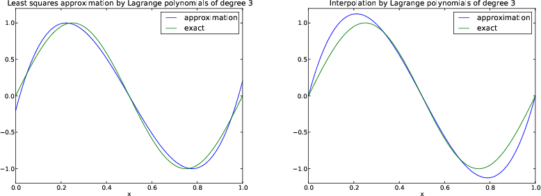
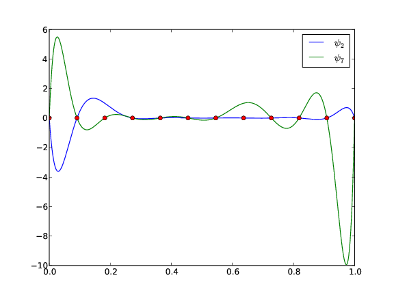

PRELIMINARY VERSION
Approximation of vectors
Approximation of planar vectors
The least squares method
The projection method
Approximation of general vectors
The least squares method
The Galerkin or projection method
Approximation of functions
The least squares method
The projection (or Galerkin) method
Example: linear approximation
Implementation of the least squares method
Perfect approximation
Ill-conditioning
Fourier series
Orthogonal basis functions
The interpolation (or collocation) method
Example
Lagrange polynomials
Approximation of a polynomial
Successful example
Less successful example
Remedy for strong oscillations
Finite element basis functions
Elements and nodes
Example
The basis functions
Construction principles
Properties of \( \basphi_i \)
Example on piecewise quadratic finite element functions
Example on piecewise linear finite element functions
Example on piecewise cubic finite element basis functions
Calculating the linear system
Calculating a specific matrix entry
Calculating a general row in the matrix
Assembly of elementwise computations
Mapping to a reference element
Example: Integration over a reference element
Implementation
Integration
Linear system assembly and solution
Example on computing symbolic approximations
Comparison with finite elements and interpolation/collocation
Example on computing numerical approximations
The structure of the coefficient matrix
Applications
Sparse matrix storage and solution
Comparison of finite element and finite difference approximation
Finite difference approximation of given functions
Finite difference interpretation of a finite element approximation
Making finite elements behave as finite differences
Computations in physical space
Elementwise computations
Terminology
A generalized element concept
Cells, vertices, and degrees of freedom
Extended finite element concept
Implementation
Computing the error of the approximation
Example: Cubic Hermite polynomials
Numerical integration
Newton-Cotes rules
Gauss-Legendre rules with optimized points
Approximation of functions in 2D
2D basis functions as tensor products of 1D functions
Example: Polynomial basis in 2D
Implementation
Extension to 3D
Finite elements in 2D and 3D
Basis functions over triangles in the physical domain
Element matrices and vectors
Basis functions over triangles in the reference cell
Affine mapping of the reference cell
Isoparametric mapping of the reference cell
Computing integrals
Exercises
Exercise 1: Linear algebra refresher I
Exercise 2: Linear algebra refresher II
Exercise 3: Approximate a three-dimensional vector in a plane
Exercise 4: Approximate the exponential function by power functions
Exercise 5: Approximate the sine function by power functions
Exercise 6: Approximate a steep function by sines
Exercise 7: Animate the approximation of a steep function by sines
Exercise 8: Fourier series as a least squares approximation
Exercise 9: Approximate a steep function by Lagrange polynomials
Exercise 10: Define nodes and elements
Exercise 11: Define vertices, cells, and dof maps
Exercise 12: Construct matrix sparsity patterns
Exercise 13: Perform symbolic finite element computations
Exercise 14: Approximate a steep function by P1 and P2 elements
Exercise 15: Approximate a steep function by P3 and P4 elements
Exercise 16: Investigate the approximation error in finite elements
Exercise 17: Approximate a step function by finite elements
Exercise 18: 2D approximation with orthogonal functions
Exercise 19: Use the Trapezoidal rule and P1 elements
Problem 20: Compare P1 elements and interpolation
Exercise 21: Implement 3D computations with global basis functions
Basic principles for approximating differential equations
Differential equation models
Simple model problems
Forming the residual
The least squares method
The Galerkin method
The Method of Weighted Residuals
Test and Trial Functions
The collocation method
The subdomain collocation method
Examples on using the principles
The model problem
Basis functions
The residual
The least squares method
The Galerkin method
The collocation method
Comparison
Integration by parts
Weak form
Boundary function
Abstract notation for variational formulations
Variational problems and optimization of functionals
Examples on variational formulations
Variable coefficient
First-order derivative in the equation and boundary condition
Nonlinear coefficient
Computing with Dirichlet and Neumann conditions
When the numerical method is exact
Computing with finite elements
Finite element mesh and basis functions
Computation in the global physical domain
Comparison with a finite difference discretization
Cellwise computations
Boundary conditions: specified value
General construction of a boundary function
Example
Modification of the linear system
Computations in the physical system
Cellwise computations
Symmetric modification of the linear system
Modification of the element matrix and vector
Boundary conditions: specified derivative
The variational formulation
Direct computation of the global linear system
Cellwise computations
Implementation
Global basis functions
Example: constant right-hand side
Finite elements
Variational formulations in 2D and 3D
Transformation to a reference cell in 2D and 3D
Numerical integration
Convenient formulas for P1 elements in 2D
Summary
Time-dependent problems
Discretization in time by a Forward Euler scheme
Time discretization
Space discretization
Variational forms
Linear systems
Computational algorithm
Comparison with the finite difference method
Lumping the mass matrix
Discretization in time by a Backward Euler scheme
Time discretization
Variational forms
Linear systems
Analysis of the discrete equations
Systems of differential equations
Variational forms
A worked example
Identical function spaces for the unknowns
Variational form of each individual PDE
Compound scalar variational form
Decoupled linear systems
Coupled linear systems
Different function spaces for the unknowns
Computations in 1D
Another example in 1D
Exercises
Exercise 22: Refactor functions into a more general class
Exercise 23: Compute the deflection of a cable with sine functions
Exercise 24: Check integration by parts
Exercise 25: Compute the deflection of a cable with 2 P1 elements
Exercise 26: Compute the deflection of a cable with 1 P2 element
Exercise 27: Compute the deflection of a cable with a step load
Exercise 28: Show equivalence between linear systems
Exercise 29: Compute with a non-uniform mesh
Exercise 30: Solve a 1D finite element problem by hand
Exercise 31: Compare finite elements and differences for a radially symmetric Poisson equation
Exercise 32: Compute with variable coefficients and P1 elements by hand
Exercise 33: Solve a 2D Poisson equation using polynomials and sines
The finite element method is a powerful tool for solving differential equations. The method can easily deal with complex geometries and higher-order approximations of the solution. Figure 1 shows a two-dimensional domain with a non-trivial geometry. The idea is to divide the domain into triangles (elements) and seek a polynomial approximations to the unknown functions on each triangle. The method glues these piecewise approximations together to find a global solution. Linear and quadratic polynomials over the triangles are particularly popular.
Many successful numerical methods for differential equations, including the finite element method, aim at approximating the unknown function by a sum
$$ \begin{equation} u(x) = \sum_{i=0}^N c_i\baspsi_i(x), \tag{1} \end{equation} $$ where \( \baspsi_i(x) \) are prescribed functions and \( c_0,\ldots,c_N \) are unknown coefficients to be determined. Solution methods for differential equations utilizing (1) must have a principle for constructing \( N+1 \) equations to determine \( c_0,\ldots,c_N \). Then there is a machinery regarding the actual constructions of the equations for \( c_0,\ldots,c_N \), in a particular problem. Finally, there is a solve phase for computing the solution \( c_0,\ldots,c_N \) of the \( N+1 \) equations.
Especially in the finite element method, the machinery for constructing the discrete equations to be implemented on a computer is quite comprehensive, with many mathematical and implementational details entering the scene at the same time. From an ease-of-learning perspective it can therefore be wise to introduce the computational machinery for a trivial equation: \( u=f \). Solving this equation with \( f \) given and \( u \) on the form (1) means that we seek an approximation \( u \) to \( f \). This approximation problem has the advantage of introducing most of the finite element toolbox, but with postponing demanding topics related to differential equations (e.g., integration by parts, boundary conditions, and coordinate mappings). This is the reason why we shall first become familiar with finite element approximation before addressing finite element methods for differential equations.
First, we refresh some linear algebra concepts about approximating vectors in vector spaces. Second, we extend these concepts to approximating functions in function spaces, using the same principles and the same notation. We present examples on approximating functions by global basis functions with support throughout the entire domain. Third, we introduce the finite element type of local basis functions and explain the computational algorithms for working with such functions. Three types of approximation principles are covered: 1) the least squares method, 2) the \( L_2 \) projection or Galerkin method, and 3) interpolation or collocation.
We shall start with introducing two fundamental methods for determining the coefficients \( c_i \) in (1) and illustrate the methods on approximation of vectors, because vectors in vector spaces give a more intuitive understanding than starting directly with approximation of functions in function spaces. The extension from vectors to functions will be trivial as soon as the fundamental ideas are understood.
The first method of approximation is called the least squares method and consists in finding \( c_i \) such that the difference \( u-f \), measured in some norm, is minimized. That is, we aim at finding the best approximation \( u \) to \( f \) (in some norm). The second method is not as intuitive: we find \( u \) such that the error \( u-f \) is orthogonal to the space where we seek \( u \). This is known as projection, or we may also call it a Galerkin method. When approximating vectors and functions, the two methods are equivalent, but this is no longer the case when applying the principles to differential equations.
Suppose we have given a vector \( \f = (3,5) \) in the \( xy \) plane and that we want to approximate this vector by a vector aligned in the direction of the vector \( (a,b) \). Figure 2 depicts the situation.
Figure 2: Approximation of a two-dimensional vector by a one-dimensional vector.

We introduce the vector space \( V \) spanned by the vector \( \psib_0=(a,b) \):
$$ \begin{equation} V = \mbox{span}\,\{ \psib_0\}\tp \end{equation} $$ We say that \( \psib_0 \) is a basis vector in the space \( V \). Our aim is to find the vector \( \u = c_0\psib_0\in V \) which best approximates the given vector \( \f = (3,5) \). A reasonable criterion for a best approximation could be to minimize the length of the difference between the approximate \( \u \) and the given \( \f \). The difference, or error \( \e = \f -\u \), has its length given by the norm
$$ \begin{equation*} ||\e|| = (\e,\e)^{\half},\end{equation*} $$ where \( (\e,\e) \) is the inner product of \( \e \) and itself. The inner product, also called scalar product or dot product, of two vectors \( \u=(u_0,u_1) \) and \( \v =(v_0,v_1) \) is defined as
$$ \begin{equation} (\u, \v) = u_0v_0 + u_1v_1\tp \end{equation} $$
Remark 1. We should point out that we use the notation \( (\cdot,\cdot) \) for two different things: \( (a,b) \) for scalar quantities \( a \) and \( b \) means the vector starting in the origin and ending in the point \( (a,b) \), while \( (\u,\v) \) with vectors \( \u \) and \( \v \) means the inner product of these vectors. Since vectors are here written in boldface font there should be no confusion. We may add that the norm associated with this inner product is the usual Eucledian length of a vector.
Remark 2. It might be wise to refresh some basic linear algebra by consulting a textbook. Exercise 1: Linear algebra refresher I and Exercise 2: Linear algebra refresher II suggest specific tasks to regain familiarity with fundamental operations on inner product vector spaces.
We now want to find \( c_0 \) such that it minimizes \( ||\e|| \). The algebra is simplified if we minimize the square of the norm, \( ||\e||^2 = (\e, \e) \), instead of the norm itself. Define the function
$$ \begin{equation} E(c_0) = (\e,\e) = (\f - c_0\psib_0, \f - c_0\psib_0) \tp \end{equation} $$ We can rewrite the expressions of the right-hand side in a more convenient form for further work:
$$ \begin{equation} E(c_0) = (\f,\f) - 2c_0(\f,\psib_0) + c_0^2(\psib_0,\psib_0)\tp \tag{2} \end{equation} $$ The rewrite results from using the following fundamental rules for inner product spaces:
$$ \begin{equation} (\alpha\u,\v)=\alpha(\u,\v),\quad \alpha\in\Real, \tag{3} \end{equation} $$
$$ \begin{equation} (\u +\v,\w) = (\u,\w) + (\v, \w), \tag{4} \end{equation} $$
$$ \begin{equation} (\u, \v) = (\v, \u)\tp \end{equation} \tag{5} $$
Minimizing \( E(c_0) \) implies finding \( c_0 \) such that
$$ \begin{equation*} \frac{\partial E}{\partial c_0} = 0\tp \end{equation*} $$ Differentiating (2) with respect to \( c_0 \) gives
$$ \begin{equation} \frac{\partial E}{\partial c_0} = -2(\f,\psib_0) + 2c_0 (\psib_0,\psib_0) \tp \tag{6} \end{equation} $$ Setting the above expression equal to zero and solving for \( c_0 \) gives
$$ \begin{equation} c_0 = \frac{(\f,\psib_0)}{(\psib_0,\psib_0)}, \tag{7} \end{equation} $$ which in the present case with \( \psib_0=(a,b) \) results in
$$ \begin{equation} c_0 = \frac{3a + 5b}{a^2 + b^2}\tp \end{equation} $$
For later, it is worth mentioning that setting the key equation (6) to zero can be rewritten as
$$ (\f-c0\psib_0,\psib_0) = 0, $$ or
$$ \begin{equation} (\e, \psib_0) = 0 \tp \tag{8} \end{equation} $$
We shall now show that minimizing \( ||\e||^2 \) implies that \( \e \) is orthogonal to any vector \( \v \) in the space \( V \). This result is visually quite clear from Figure 2 (think of other vectors along the line \( (a,b) \): all of them will lead to a larger distance between the approximation and \( \f \)). To see this result mathematically, we express any \( \v\in V \) as \( \v=s\psib_0 \) for any scalar parameter \( s \), recall that two vectors are orthogonal when their inner product vanishes, and calculate the inner product $$ \begin{align*} (\e, s\psib_0) &= (\f - c_0\psib_0, s\psib_0)\\ &= (\f,s\psib_0) - (c_0\psib_0, s\psib_0)\\ &= s(\f,\psib_0) - sc_0(\psib_0, \psib_0)\\ &= s(\f,\psib_0) - s\frac{(\f,\psib_0)}{(\psib_0,\psib_0)}(\psib_0,\psib_0)\\ &= s\left( (\f,\psib_0) - (\f,\psib_0)\right)\\ &=0\tp \end{align*} $$ Therefore, instead of minimizing the square of the norm, we could demand that \( \e \) is orthogonal to any vector in \( V \). This method is known as projection, because it is the same as projecting the vector onto the subspace. (The approach can also be referred to as a Galerkin method as explained at the end of the section ref{approximation!of general vectors}.)
Mathematically the projection method is stated by the equation
$$ \begin{equation} (\e, \v) = 0,\quad\forall\v\in V\tp \tag{9} \end{equation} $$ An arbitrary \( \v\in V \) can be expressed as \( s\psib_0 \), \( s\in\Real \), and therefore (9) implies
$$ \begin{equation*} (\e,s\psib_0) = s(\e, \psib_0) = 0,\end{equation*} $$ which means that the error must be orthogonal to the basis vector in the space \( V \):
$$ \begin{equation*} (\e, \psib_0)=0\quad\hbox{or}\quad (\f - c_0\psib_0, \psib_0)=0 \tp \end{equation*} $$ The latter equation gives (7) and it also arose from least squares computations in (8).
Let us generalize the vector approximation from the previous section to vectors in spaces with arbitrary dimension. Given some vector \( \f \), we want to find the best approximation to this vector in the space
$$ \begin{equation*} V = \hbox{span}\,\{\psib_0,\ldots,\psib_N\} \tp \end{equation*} $$ We assume that the basis vectors \( \psib_0,\ldots,\psib_N \) are linearly independent so that none of them are redundant and the space has dimension \( N+1 \). Any vector \( \u\in V \) can be written as a linear combination of the basis vectors,
$$ \begin{equation*} \u = \sum_{j=0}^N c_j\psib_j,\end{equation*} $$ where \( c_j\in\Real \) are scalar coefficients to be determined.
Now we want to find \( c_0,\ldots,c_N \), such that \( \u \) is the best approximation to \( \f \) in the sense that the distance (error) \( \e = \f - \u \) is minimized. Again, we define the squared distance as a function of the free parameters \( c_0,\ldots,c_N \),
$$ \begin{align} E(c_0,\ldots,c_N) &= (\e,\e) = (\f -\sum_jc_j\psib_j,\f -\sum_jc_j\psib_j) \nonumber\\ &= (\f,\f) - 2\sum_{j=0}^N c_j(\f,\psib_j) + \sum_{p=0}^N\sum_{q=0}^N c_pc_q(\psib_p,\psib_q)\tp \tag{10} \end{align} $$ Minimizing this \( E \) with respect to the independent variables \( c_0,\ldots,c_N \) is obtained by requiring
$$ \begin{equation*} \frac{\partial E}{\partial c_i} = 0,\quad i=0,\ldots,N \tp \end{equation*} $$ The second term in (10) is differentiated as follows:
$$ \begin{equation} \frac{\partial}{\partial c_i} \sum_{j=0}^N c_j(\f,\psib_j) = (\f,\psib_i), \end{equation} $$ since the expression to be differentiated is a sum and only one term, \( c_i(\f,\psib_i) \), contains \( c_i \) and this term is linear in \( c_i \). To understand this differentiation in detail, write out the sum specifically for, e.g, \( N=3 \) and \( i=1 \).
The last term in (10) is more tedious to differentiate. We start with
$$ \begin{align} \frac{\partial}{\partial c_i} c_pc_q = \left\lbrace\begin{array}{ll} 0, & \hbox{ if } p\neq i\hbox{ and } q\neq i,\\ c_q, & \hbox{ if } p=i\hbox{ and } q\neq i,\\ c_p, & \hbox{ if } p\neq i\hbox{ and } q=i,\\ 2c_i, & \hbox{ if } p=q= i,\\ \end{array}\right. \end{align} $$ Then
$$ \begin{equation*} \frac{\partial}{\partial c_i} \sum_{p=0}^N\sum_{q=0}^N c_pc_q(\psib_p,\psib_q) = \sum_{p=0, p\neq i}^N c_p(\psib_p,\psib_i) + \sum_{q=0, q\neq i}^N c_q(\psib_q,\psib_i) +2c_i(\psib_i,\psib_i)\tp \end{equation*} $$ The last term can be included in the other two sums, resulting in
$$ \begin{equation} \frac{\partial}{\partial c_i} \sum_{p=0}^N\sum_{q=0}^N c_pc_q(\psib_p,\psib_q) = 2\sum_{j=0}^N c_i(\psib_j,\psib_i)\tp \end{equation} $$ It then follows that setting
$$ \begin{equation*} \frac{\partial E}{\partial c_i} = 0,\quad i=0,\ldots,N,\end{equation*} $$ leads to a linear system for \( c_0,\ldots,c_N \):
$$ \begin{equation} \sum_{j=0}^N A_{i,j} c_j = b_i, \quad i=0,\ldots,N, \tag{11} \end{equation} $$ where
$$ \begin{align} A_{i,j} &= (\psib_i,\psib_j),\\ b_i &= (\psib_i, \f)\tp \end{align} $$ We have changed the order of the two vectors in the inner product according to (5):
$$ A_{i,j} = (\psib_j,\psib_i) = (\psib_i,\psib_j),$$ simply because the sequence \( i \)-$j$ looks more aesthetic.
In analogy with the "one-dimensional" example in the section Approximation of planar vectors, it holds also here in the general case that minimizing the distance (error) \( \e \) is equivalent to demanding that \( \e \) is orthogonal to all \( \v\in V \):
$$ \begin{equation} (\e,\v)=0,\quad \forall\v\in V\tp \tag{12} \end{equation} $$ Since any \( \v\in V \) can be written as \( \v =\sum_{i=0}^N c_i\psib_i \), the statement (12) is equivalent to saying that
$$ \begin{equation*} (\e, \sum_{i=0}^N c_i\psib_i) = 0,\end{equation*} $$ for any choice of coefficients \( c_0,\ldots,c_N \). The latter equation can be rewritten as
$$ \begin{equation*} \sum_{i=0}^N c_i (\e,\psib_i) =0\tp \end{equation*} $$ If this is to hold for arbitrary values of \( c_0,\ldots,c_N \) we must require that each term in the sum vanishes,
$$ \begin{equation} (\e,\psib_i)=0,\quad i=0,\ldots,N\tp \tag{13} \end{equation} $$ These \( N+1 \) equations result in the same linear system as (11):
$$ (\f - \sum_{j=0}^N c_j\psib_j, \psib_i) = (\f, \psib_i) - \sum_{j\in\If} (\psib_i,\psib_j)c_j = 0,$$ and hence
$$ \sum_{j=0}^N (\psib_i,\psib_j)c_j = (\f, \psib_i),\quad i=0,\ldots, N \tp $$ So, instead of differentiating the \( E(c_0,\ldots,c_N) \) function, we could simply use (12) as the principle for determining \( c_0,\ldots,c_N \), resulting in the \( N+1 \) equations (13).
The names least squares method or least squares approximation are natural since the calculations consists of minimizing \( ||\e||^2 \), and \( ||\e||^2 \) is a sum of squares of differences between the components in \( \f \) and \( \u \). We find \( \u \) such that this sum of squares is minimized.
The principle (12), or the equivalent form (13), is known as projection. Almost the same mathematical idea was used by the Russian mathematician Boris Galerkin to solve differential equations, resulting in what is widely known as Galerkin's method.
Let \( V \) be a function space spanned by a set of basis functions \( \baspsi_0,\ldots,\baspsi_N \),
$$ \begin{equation*} V = \hbox{span}\,\{\baspsi_0,\ldots,\baspsi_N\},\end{equation*} $$ such that any function \( u\in V \) can be written as a linear combination of the basis functions:
$$ \begin{equation} u = \sum_{j\in\If} c_j\baspsi_j\tp \tag{14} \end{equation} $$ The index set \( \If \) is defined as \( \If =\{0,\ldots,N\} \) and is used both for compact notation and for flexibility in the numbering of elements in sequences.
For now, in this introduction, we shall look at functions of a single variable \( x \): \( u=u(x) \), \( \baspsi_i=\baspsi_i(x) \), \( i\in\If \). Later, we will almost trivially extend the mathematical details to functions of two- or three-dimensional physical spaces. The approximation (14) is typically used to discretize a problem in space. Other methods, most notably finite differences, are common for time discretization, although the form (14) can be used in time as well.
Given a function \( f(x) \), how can we determine its best approximation \( u(x)\in V \)? A natural starting point is to apply the same reasoning as we did for vectors in the section Approximation of general vectors. That is, we minimize the distance between \( u \) and \( f \). However, this requires a norm for measuring distances, and a norm is most conveniently defined through an inner product. Viewing a function as a vector of infinitely many point values, one for each value of \( x \), the inner product could intuitively be defined as the usual summation of pairwise components, with summation replaced by integration:
$$ \begin{equation*} (f,g) = \int f(x)g(x)\, \dx \tp \end{equation*} $$ To fix the integration domain, we let \( f(x) \) and \( \baspsi_i(x) \) be defined for a domain \( \Omega\subset\Real \). The inner product of two functions \( f(x) \) and \( g(x) \) is then
$$ \begin{equation} (f,g) = \int_\Omega f(x)g(x)\, \dx \tag{15} \tp \end{equation} $$
The distance between \( f \) and any function \( u\in V \) is simply \( f-u \), and the squared norm of this distance is
$$ \begin{equation} E = (f(x)-\sum_{j\in\If} c_j\baspsi_j(x), f(x)-\sum_{j\in\If} c_j\baspsi_j(x))\tp \tag{16} \end{equation} $$ Note the analogy with (10): the given function \( f \) plays the role of the given vector \( \f \), and the basis function \( \baspsi_i \) plays the role of the basis vector \( \psib_i \). We can rewrite (16), through similar steps as used for the result (10), leading to
$$ \begin{equation} E(c_i, \ldots, c_N) = (f,f) -2\sum_{j\in\If} c_j(f,\baspsi_i) + \sum_{p\in\If}\sum_{q\in\If} c_pc_q(\baspsi_p,\baspsi_q)\tp \end{equation} $$ Minimizing this function of \( N+1 \) scalar variables \( \sequencei{c} \), requires differentiation with respect to \( c_i \), for all \( i\in\If \). The resulting equations are very similar to those we had in the vector case, and we hence end up with a linear system of the form (11), with basically the same expressions:
$$ \begin{align} A_{i,j} &= (\baspsi_i,\baspsi_j), \tag{17}\\ b_i &= (f,\baspsi_i)\tp \tag{18} \end{align} $$
As in the section Approximation of general vectors, the minimization of \( (e,e) \) is equivalent to
$$ \begin{equation} (e,v)=0,\quad\forall v\in V\tp \tag{19} \end{equation} $$ This is known as a projection of a function \( f \) onto the subspace \( V \). We may also call it a Galerkin method for approximating functions. Using the same reasoning as in (12)-(13), it follows that (19) is equivalent to
$$ \begin{equation} (e,\baspsi_i)=0,\quad i\in\If\tp \tag{20} \end{equation} $$ Inserting \( e=f-u \) in this equation and ordering terms, as in the multi-dimensional vector case, we end up with a linear system with a coefficient matrix (17) and right-hand side vector (18).
Whether we work with vectors in the plane, general vectors, or functions in function spaces, the least squares principle and the projection or Galerkin method are equivalent.
Let us apply the theory in the previous section to a simple problem: given a parabola \( f(x)=10(x-1)^2-1 \) for \( x\in\Omega=[1,2] \), find the best approximation \( u(x) \) in the space of all linear functions:
$$ \begin{equation*} V = \hbox{span}\,\{1, x\}\tp \end{equation*} $$ With our notation, \( \baspsi_0(x)=1 \), \( \baspsi_1(x)=x \), and \( N=1 \). We seek
$$ \begin{equation*} u=c_0\baspsi_0(x) + c_1\baspsi_1(x) = c_0 + c_1x,\end{equation*} $$ where \( c_0 \) and \( c_1 \) are found by solving a \( 2\times 2 \) the linear system. The coefficient matrix has elements
$$ \begin{align} A_{0,0} &= (\baspsi_0,\baspsi_0) = \int_1^21\cdot 1\, \dx = 1,\\ A_{0,1} &= (\baspsi_0,\baspsi_1) = \int_1^2 1\cdot x\, \dx = 3/2,\\ A_{1,0} &= A_{0,1} = 3/2,\\ A_{1,1} &= (\baspsi_1,\baspsi_1) = \int_1^2 x\cdot x\,\dx = 7/3\tp \end{align} $$ The corresponding right-hand side is
$$ \begin{align} b_1 &= (f,\baspsi_0) = \int_1^2 (10(x-1)^2 - 1)\cdot 1 \, \dx = 7/3,\\ b_2 &= (f,\baspsi_1) = \int_1^2 (10(x-1)^2 - 1)\cdot x\, \dx = 13/3\tp \end{align} $$ Solving the linear system results in
$$ \begin{equation} c_0 = -38/3,\quad c_1 = 10, \end{equation} $$ and consequently
$$ \begin{equation} u(x) = 10x - \frac{38}{3}\tp \end{equation} $$ Figure 3 displays the parabola and its best approximation in the space of all linear functions.
Figure 3: Best approximation of a parabola by a straight line.

The linear system can be computed either symbolically or
numerically (a numerical integration rule is needed in the latter case).
Here is a function for symbolic computation of the linear system,
where \( f(x) \) is given as a sympy expression f involving
the symbol x, psi is a list of expressions for \( \sequencei{\baspsi} \),
and Omega is a 2-tuple/list holding the limits of the domain \( \Omega \):
import sympy as sm
def least_squares(f, psi, Omega):
N = len(psi) - 1
A = sm.zeros((N+1, N+1))
b = sm.zeros((N+1, 1))
x = sm.Symbol('x')
for i in range(N+1):
for j in range(i, N+1):
A[i,j] = sm.integrate(psi[i]*psi[j],
(x, Omega[0], Omega[1]))
A[j,i] = A[i,j]
b[i,0] = sm.integrate(psi[i]*f, (x, Omega[0], Omega[1]))
c = A.LUsolve(b)
u = 0
for i in range(len(psi)):
u += c[i,0]*psi[i]
return u
Observe that we exploit the symmetry of the coefficient matrix:
only the upper triangular part is computed. Symbolic integration in
sympy is often time consuming, and (roughly) halving the
work has noticeable effect on the waiting time for the function to
finish execution.
Comparing the given \( f(x) \) and the approximate \( u(x) \) visually is
done by the following function, which with the aid of
sympy's lambdify tool converts a sympy
expression to a Python function for numerical
computations:
def comparison_plot(f, u, Omega, filename='tmp.pdf'):
x = sm.Symbol('x')
f = sm.lambdify([x], f, modules="numpy")
u = sm.lambdify([x], u, modules="numpy")
resolution = 401 # no of points in plot
xcoor = linspace(Omega[0], Omega[1], resolution)
exact = f(xcoor)
approx = u(xcoor)
plot(xcoor, approx)
hold('on')
plot(xcoor, exact)
legend(['approximation', 'exact'])
savefig(filename)
The modules='numpy' argument to lambdify is important
if there are mathematical functions, such as sin or exp
in the symbolic expressions in f or u, and these
mathematical functions are to be used with vector arguments, like
xcoor above.
Both the least_squares and
comparison_plot
are found and coded in the file
approx1D.py.
The forthcoming examples on their use appear in
ex_approx1D.py.
Let us use the code above to recompute the problem from the section Example: linear approximation where we want to approximate a parabola. What happens if we add an element \( x^2 \) to the basis and test what the best approximation is if \( V \) is the space of all parabolic functions? The answer is quickly found by running
>>> from approx1D import *
>>> x = sm.Symbol('x')
>>> f = 10*(x-1)**2-1
>>> u = least_squares(f=f, psi=[1, x, x**2], Omega=[1, 2])
>>> print u
10*x**2 - 20*x + 9
>>> print sm.expand(f)
10*x**2 - 20*x + 9
Now, what if we use \( \baspsi_i(x)=x^i \) for \( i=0,1,\ldots,N=40 \)?
The output from least_squares gives \( c_i=0 \) for \( i>2 \), which
means that the method finds the perfect approximation.
In fact, we have a general result that if \( f\in V \), the least squares and projection/Galerkin methods compute the exact solution \( u=f \). The proof is straightforward: if \( f\in V \), \( f \) can be expanded in terms of the basis functions, \( f=\sum_{j\in\If} d_j\baspsi_j \), for some coefficients \( \sequencei{d} \), and the right-hand side then has entries
$$ \begin{equation*} b_i = (f,\baspsi_i) = \sum_{j\in\If} d_j(\baspsi_j, \baspsi_i) = \sum_{j\in\If} d_jA_{i,j} \tp \end{equation*} $$ The linear system \( \sum_jA_{i,j}c_j = b_i \), \( i\in\If \), is then
$$ \begin{equation*} \sum_{j\in\If} c_jA_{i,j} = \sum_{j\in\If}d_jA_{i,j}, \quad i\in\If,\end{equation*} $$ which implies that \( c_i=d_i \) for \( i\in\If \).
The computational example in the section Perfect approximation
applies the least_squares function which invokes symbolic
methods to calculate and solve the linear system. The correct
solution \( c_0=9, c_1=-20, c_2=10, c_i=0 \) for \( i\geq 3 \) is perfectly
recovered.
Suppose we convert the matrix and right-hand side to floating-point arrays and then solve the system using finite-precision arithmetics, which is what one will (almost) always do in real life. This time we get astonishing results! Up to about \( N=7 \) we get a solution that is reasonably close to the exact one. Increasing \( N \) shows that seriously wrong coefficients are computed. Below is a table showing the solution of the linear system arising from approximating a parabola by functions on the form \( u(x)=c_0 + c_1x + c_2x^2 + \cdots + c_{10}x^{10} \). Analytically, we know that \( c_j=0 \) for \( j>2 \), but numerically we may get \( c_j\neq 0 \) for \( j>2 \).
| exact | sympy | numpy32 | numpy64 |
| 9 | 9.62 | 5.57 | 8.98 |
| -20 | -23.39 | -7.65 | -19.93 |
| 10 | 17.74 | -4.50 | 9.96 |
| 0 | -9.19 | 4.13 | -0.26 |
| 0 | 5.25 | 2.99 | 0.72 |
| 0 | 0.18 | -1.21 | -0.93 |
| 0 | -2.48 | -0.41 | 0.73 |
| 0 | 1.81 | -0.013 | -0.36 |
| 0 | -0.66 | 0.08 | 0.11 |
| 0 | 0.12 | 0.04 | -0.02 |
| 0 | -0.001 | -0.02 | 0.002 |
The exact value of \( c_j \), \( j=0,1,\ldots,10 \), appears in the first column while the other columns correspond to results obtained by three different methods:
sympy.mpmath.fp.matrix and the
sympy.mpmath.fp.lu_solve function is used to solve the system.numpy arrays with data type numpy.float32
(single precision floating-point number) and solved by
the numpy.linalg.solve function.numpy.float64 (double
precision floating-point number).
Increasing \( N \) to 12 makes the numerical solver in numpy
abort with the message: "matrix is numerically singular".
A matrix has to be non-singular to be invertible, which is a requirement
when solving a linear system. Already when the matrix is close to
singular, it is ill-conditioned, which here implies that
the numerical solution algorithms are sensitive to round-off
errors and may produce (very) inaccurate results.
The reason why the coefficient matrix is nearly singular and ill-conditioned is that our basis functions \( \baspsi_i(x)=x^i \) are nearly linearly dependent for large \( i \). That is, \( x^i \) and \( x^{i+1} \) are very close for \( i \) not very small. This phenomenon is illustrated in Figure 4. There are 15 lines in this figure, but only half of them are visually distinguishable. Almost linearly dependent basis functions give rise to an ill-conditioned and almost singular matrix. This fact can be illustrated by computing the determinant, which is indeed very close to zero (recall that a zero determinant implies a singular and non-invertible matrix): \( 10^{-65} \) for \( N=10 \) and \( 10^{-92} \) for \( N=12 \). Already for \( N=28 \) the numerical determinant computation returns a plain zero.
Figure 4: The 15 first basis functions \( x^i \), \( i=0,\ldots,14 \).

On the other hand, the double precision numpy solver do run for
\( N=100 \), resulting in answers that are not significantly worse than
those in the table above, and large powers are
associated with small coefficients (e.g., \( c_j<10^{-2} \) for \( 10\leq
j\leq 20 \) and \( c<10^{-5} \) for \( j>20 \)). Even for \( N=100 \) the
approximation still lies on top of the exact curve in a plot (!).
The conclusion is that visual inspection of the quality of the approximation may not uncover fundamental numerical problems with the computations. However, numerical analysts have studied approximations and ill-conditioning for decades, and it is well known that the basis \( \{1,x,x^2,x^3,\ldots,\} \) is a bad basis. The best basis from a matrix conditioning point of view is to have orthogonal functions such that \( (\psi_i,\psi_j)=0 \) for \( i\neq j \). There are many known sets of orthogonal polynomials and other functions. The functions used in the finite element methods are almost orthogonal, and this property helps to avoid problems with solving matrix systems. Almost orthogonal is helpful, but not enough when it comes to partial differential equations, and ill-conditioning of the coefficient matrix is a theme when solving large-scale matrix systems arising from finite element discretizations.
A set of sine functions is widely used for approximating functions (the sines are also orthogonal as explained more in the section Ill-conditioning). Let us take
$$ \begin{equation*} V = \hbox{span}\,\{ \sin \pi x, \sin 2\pi x,\ldots,\sin (N+1)\pi x\} \tp \end{equation*} $$ That is,
$$
\begin{equation*} \baspsi_i(x) = \sin ((i+1)\pi x),\quad i\in\If\tp \end{equation*}
$$
An approximation to the \( f(x) \) function from
the section Example: linear approximation can then be computed by the
least_squares function from the section Implementation of the least squares method:
N = 3
from sympy import sin, pi
x = sm.Symbol('x')
psi = [sin(pi*(i+1)*x) for i in range(N+1)]
f = 10*(x-1)**2 - 1
Omega = [0, 1]
u = least_squares(f, psi, Omega)
comparison_plot(f, u, Omega)
Figure 5 (left) shows the oscillatory approximation of \( \sum_{j=0}^Nc_j\sin ((j+1)\pi x) \) when \( N=3 \). Changing \( N \) to 11 improves the approximation considerably, see Figure 5 (right).
Figure 5: Best approximation of a parabola by a sum of 3 (left) and 11 (right) sine functions.

There is an error \( f(0)-u(0)=9 \) at \( x=0 \) in Figure 5 regardless of how large \( N \) is, because all \( \baspsi_i(0)=0 \) and hence \( u(0)=0 \). We may help the approximation to be correct at \( x=0 \) by seeking
$$ \begin{equation} u(x) = f(0) + \sum_{j\in\If} c_j\baspsi_j(x) \tp \end{equation} $$ However, this adjustment introduces a new problem at \( x=1 \) since we now get an error \( f(1)-u(1)=f(1)-0=-1 \) at this point. A more clever adjustment is to replace the \( f(0) \) term by a term that is \( f(0) \) at \( x=0 \) and \( f(1) \) at \( x=1 \). A simple linear combination \( f(0)(1-x) + xf(1) \) does the job: $$ \begin{equation} u(x) = f(0)(1-x) + xf(1) + \sum_{j\in\If} c_j\baspsi_j(x) \tp \end{equation} $$ This adjustment of \( u \) alters the linear system slightly as we get an extra term \( -(f(0)(1-x) + xf(1),\baspsi_i) \) on the right-hand side. Figure 6 shows the result of this technique for ensuring right boundary values: even 3 sines can now adjust the \( f(0)(1-x) + xf(1) \) term such that \( u \) approximates the parabola really well, at least visually.
Figure 6: Best approximation of a parabola by a sum of 3 (left) and 11 (right) sine functions with a boundary term.

The choice of sine functions \( \baspsi_i(x)=\sin ((i+1)\pi x) \) has a great computational advantage: on \( \Omega=[0,1] \) these basis functions are orthogonal, implying that \( A_{i,j}=0 \) if \( i\neq j \). This result is realized by trying
integrate(sin(j*pi*x)*sin(k*pi*x), x, 0, 1)
in WolframAlpha
(avoid i in the integrand as this symbol means
the imaginary unit \( \sqrt{-1} \)).
Also by asking WolframAlpha
about \( \int_0^1\sin^2 (j\pi x) \dx \), we find it
to equal 1/2.
With a diagonal matrix we can easily solve for the coefficients
by hand:
$$ \begin{equation} c_i = 2\int_0^1 f(x)\sin ((i+1)\pi x) \dx,\quad i\in\If, \end{equation} $$ which is nothing but the classical formula for the coefficients of the Fourier sine series of \( f(x) \) on \( [0,1] \). In fact, when \( V \) contains the basic functions used in a Fourier series expansion, the approximation method derived in the section Approximation of functions results in the classical Fourier series for \( f(x) \) (see Exercise 8: Fourier series as a least squares approximation for details).
With orthogonal basis functions we can make the
least_squares function (much) more efficient since we know that
the matrix is diagonal and only the diagonal elements need to be computed:
def least_squares_orth(f, psi, Omega):
N = len(psi) - 1
A = [0]*(N+1)
b = [0]*(N+1)
x = sm.Symbol('x')
for i in range(N+1):
A[i] = sm.integrate(psi[i]**2, (x, Omega[0], Omega[1]))
b[i] = sm.integrate(psi[i]*f, (x, Omega[0], Omega[1]))
c = [b[i]/A[i] for i in range(len(b))]
u = 0
for i in range(len(psi)):
u += c[i]*psi[i]
return u
This function is found in the file approx1D.py.
The principle of minimizing the distance between \( u \) and \( f \) is an intuitive way of computing a best approximation \( u\in V \) to \( f \). However, there are other approaches as well. One is to demand that \( u(\xno{i}) = f(\xno{i}) \) at some selected points \( \xno{i} \), \( i\in\If \):
$$ \begin{equation} u(\xno{i}) = \sum_{j\in\If} c_j \baspsi_j(\xno{i}) = f(\xno{i}), \quad i\in\If\tp \end{equation} $$ This criterion also gives a linear system with \( N+1 \) unknown coefficients \( \sequencei{c} \):
$$ \begin{equation} \sum_{j\in\If} A_{i,j}c_j = b_i,\quad i\in\If, \end{equation} $$ with
$$ \begin{align} A_{i,j} &= \baspsi_j(\xno{i}),\\ b_i &= f(\xno{i})\tp \end{align} $$ This time the coefficient matrix is not symmetric because \( \baspsi_j(\xno{i})\neq \baspsi_i(\xno{j}) \) in general. The method is often referred to as an interpolation method since some point values of \( f \) are given (\( f(\xno{i}) \)) and we fit a continuous function \( u \) that goes through the \( f(\xno{i}) \) points. In this case the \( \xno{i} \) points are called interpolation points. When the same approach is used to approximate differential equations, one usually applies the name collocation method and \( \xno{i} \) are known as collocation points.
Given \( f \) as a sympy symbolic expression f, \( \sequencei{\baspsi} \)
as a list psi, and a set of points \( \sequencei{x} \) as a list or array
points, the following Python function sets up and solves the matrix system
for the coefficients \( \sequencei{c} \):
def interpolation(f, psi, points):
N = len(psi) - 1
A = sm.zeros((N+1, N+1))
b = sm.zeros((N+1, 1))
x = sm.Symbol('x')
# Turn psi and f into Python functions
psi = [sm.lambdify([x], psi[i]) for i in range(N+1)]
f = sm.lambdify([x], f)
for i in range(N+1):
for j in range(N+1):
A[i,j] = psi[j](points[i])
b[i,0] = f(points[i])
c = A.LUsolve(b)
u = 0
for i in range(len(psi)):
u += c[i,0]*psi[i](x)
return u
The interpolation function is a part of the approx1D
module.
We found it convenient in the above function to turn the expressions f and
psi into ordinary Python functions of x, which can be called with
float values in the list points when building the matrix and
the right-hand side. The alternative is to use the subs method
to substitute the x variable in an expression by an element from
the points list. The following session illustrates both approaches
in a simple setting:
>>> from sympy import *
>>> x = Symbol('x')
>>> e = x**2 # symbolic expression involving x
>>> p = 0.5 # a value of x
>>> v = e.subs(x, p) # evaluate e for x=p
>>> v
0.250000000000000
>>> type(v)
sympy.core.numbers.Float
>>> e = lambdify([x], e) # make Python function of e
>>> type(e)
>>> function
>>> v = e(p) # evaluate e(x) for x=p
>>> v
0.25
>>> type(v)
float
A nice feature of the interpolation or collocation method is that it avoids computing integrals. However, one has to decide on the location of the \( \xno{i} \) points. A simple, yet common choice, is to distribute them uniformly throughout \( \Omega \).
Let us illustrate the interpolation or collocation method by approximating our parabola \( f(x)=10(x-1)^2-1 \) by a linear function on \( \Omega=[1,2] \), using two collocation points \( x_0=1+1/3 \) and \( x_1=1+2/3 \):
f = 10*(x-1)**2 - 1
psi = [1, x]
Omega = [1, 2]
points = [1 + sm.Rational(1,3), 1 + sm.Rational(2,3)]
u = interpolation(f, psi, points)
comparison_plot(f, u, Omega)
The resulting linear system becomes
$$ \begin{equation*} \left(\begin{array}{ll} 1 & 4/3\\ 1 & 5/3\\ \end{array}\right) \left(\begin{array}{l} c_0\\ c_1\\ \end{array}\right) = \left(\begin{array}{l} 1/9\\ 31/9\\ \end{array}\right) \end{equation*} $$ with solution \( c_0=-119/9 \) and \( c_1=10 \). Figure 7 (left) shows the resulting approximation \( u=-119/9 + 10x \). We can easily test other interpolation points, say \( x_0=1 \) and \( x_1=2 \). This changes the line quite significantly, see Figure 7 (right).
Figure 7: Approximation of a parabola by linear functions computed by two interpolation points: 4/3 and 5/3 (left) versus 1 and 2 (right).

In the section Fourier series we explain the advantage with having a diagonal matrix: formulas for the coefficients \( \sequencei{c} \) can then be derived by hand. For an interpolation/collocation method a diagonal matrix implies that \( \baspsi_j(\xno{i}) = 0 \) if \( i\neq j \). One set of basis functions \( \baspsi_i(x) \) with this property is the Lagrange interpolating polynomials, or just Lagrange polynomials. (Although the functions are named after Lagrange, they were first discovered by Waring in 1779, rediscovered by Euler in 1783, and published by Lagrange in 1795.) The Lagrange polynomials have the form
$$ \begin{equation} \baspsi_i(x) = \prod_{j=0,j\neq i}^N \frac{x-\xno{j}}{\xno{i}-\xno{j}} = \frac{x-x_0}{\xno{i}-x_0}\cdots\frac{x-\xno{i-1}}{\xno{i}-\xno{i-1}}\frac{x-\xno{i+1}}{\xno{i}-\xno{i+1}} \cdots\frac{x-x_N}{\xno{i}-x_N}, \tag{21} \end{equation} $$ for \( i\in\If \). We see from (21) that all the \( \baspsi_i \) functions are polynomials of degree \( N \) which have the property
$$ \begin{equation} \baspsi_i(x_s) = \delta_{is},\quad \delta_{is} = \left\lbrace\begin{array}{ll} 1, & i=s,\\ 0, & i\neq s, \end{array}\right. \tag{22} \end{equation} $$ when \( x_s \) is an interpolation/collocation point. Here we have used the Kronecker delta symbol \( \delta_{is} \). This property implies that \( A_{i,j}=0 \) for \( i\neq j \) and \( A_{i,j}=1 \) when \( i=j \). The solution of the linear system is them simply
$$ \begin{equation} c_i = f(\xno{i}),\quad i\in\If, \end{equation} $$ and
$$ \begin{equation} u(x) = \sum_{j\in\If} f(\xno{i})\baspsi_i(x)\tp \end{equation} $$
The following function computes the Lagrange interpolating polynomial
\( \baspsi_i(x) \), given the interpolation points \( \xno{0},\ldots,\xno{N} \) in
the list or array points:
def Lagrange_polynomial(x, i, points):
p = 1
for k in range(len(points)):
if k != i:
p *= (x - points[k])/(points[i] - points[k])
return p
The next function computes a complete basis using equidistant points throughout \( \Omega \):
def Lagrange_polynomials_01(x, N):
if isinstance(x, sm.Symbol):
h = sm.Rational(1, N-1)
else:
h = 1.0/(N-1)
points = [i*h for i in range(N)]
psi = [Lagrange_polynomial(x, i, points) for i in range(N)]
return psi, points
When x is an sm.Symbol object, we let the
spacing between
the interpolation points, h, be a sympy rational number
for nice end results in the formulas for \( \baspsi_i \).
The other case, when x is a plain Python float,
signifies numerical computing, and then we let h be a floating-point
number.
Observe that the Lagrange_polynomial function works equally well
in the symbolic and numerical case - just think of x being an
sm.Symbol object or a Python float.
A little interactive session illustrates the difference between symbolic
and numerical computing of the basis functions and points:
>>> import sympy as sm
>>> x = sm.Symbol('x')
>>> psi, points = Lagrange_polynomials_01(x, N=3)
>>> points
[0, 1/2, 1]
>>> psi
[(1 - x)*(1 - 2*x), 2*x*(2 - 2*x), -x*(1 - 2*x)]
>>> x = 0.5 # numerical computing
>>> psi, points = Lagrange_polynomials_01(x, N=3)
>>> points
[0.0, 0.5, 1.0]
>>> psi
[-0.0, 1.0, 0.0]
The Lagrange polynomials are very much used in finite element methods because of their property (22).
The Galerkin or least squares method lead to an exact approximation if \( f \) lies in the space spanned by the basis functions. It could be interest to see how the interpolation method with Lagrange polynomials as basis is able to approximate a polynomial, e.g., a parabola. Running
for N in 2, 4, 5, 6, 8, 10, 12:
f = x**2
psi, points = Lagrange_polynomials_01(x, N)
u = interpolation(f, psi, points)
shows the result that up to N=4 we achieve an exact approximation,
and then round-off errors start to grow, such that
N=15 leads to a 15-degree polynomial for \( u \) where
the coefficients in front of \( x^r \) for \( r>2 \) are
of size \( 10^{-5} \) and smaller.
Trying out the Lagrange polynomial basis for approximating \( f(x)=\sin 2\pi x \) on \( \Omega =[0,1] \) with the least squares and the interpolation techniques can be done by
x = sm.Symbol('x')
f = sm.sin(2*sm.pi*x)
psi, points = Lagrange_polynomials_01(x, N)
Omega=[0, 1]
u = least_squares(f, psi, Omega)
comparison_plot(f, u, Omega)
u = interpolation(f, psi, points)
comparison_plot(f, u, Omega)
Figure 8 shows the results. There is little difference between the least squares and the interpolation technique. Increasing \( N \) gives visually better approximations.
Figure 8: Approximation via least squares (left) and interpolation (right) of a sine function by Lagrange interpolating polynomials of degree 3.

The next example concerns interpolating \( f(x)=|1-2x| \) on \( \Omega =[0,1] \) using Lagrange polynomials. Figure 9 shows a peculiar effect: the approximation starts to oscillate more and more as \( N \) grows. This numerical artifact is not surprising when looking at the individual Lagrange polynomials. Figure 10 shows two such polynomials, \( \psi_2(x) \) and \( \psi_7(x) \), both of degree 11 and computed from uniformly spaced points \( \xno{x_i}=i/11 \), \( i=0,\ldots,11 \), marked with circles. We clearly see the property of Lagrange polynomials: \( \psi_2(\xno{i})=0 \) and \( \psi_7(\xno{i})=0 \) for all \( i \), except \( \psi_2(\xno{2})=1 \) and \( \psi_7(\xno{7})=1 \). The most striking feature, however, is the significant oscillation near the boundary. The reason is easy to understand: since we force the functions to zero at so many points, a polynomial of high degree is forced to oscillate between the points. The phenomenon is named Runge's phenomenon and you can read a more detailed explanation on Wikipedia.
The oscillations can be reduced by a more clever choice of interpolation points, called the Chebyshev nodes:
$$
\begin{equation}
\xno{i} = \half (a+b) + \half(b-a)\cos\left( \frac{2i+1}{2(N+1)}pi\right),\quad i=0\ldots,N,
\end{equation}
$$
on the interval \( \Omega = [a,b] \).
Here is a flexible version of the Lagrange_polynomials_01 function above,
valid for any interval \( \Omega =[a,b] \) and with the possibility to generate
both uniformly distributed points and Chebyshev nodes:
def Lagrange_polynomials(x, N, Omega, point_distribution='uniform'):
if point_distribution == 'uniform':
if isinstance(x, sm.Symbol):
h = sm.Rational(Omega[1] - Omega[0], N)
else:
h = (Omega[1] - Omega[0])/float(N)
points = [Omega[0] + i*h for i in range(N+1)]
elif point_distribution == 'Chebyshev':
points = Chebyshev_nodes(Omega[0], Omega[1], N)
psi = [Lagrange_polynomial(x, i, points) for i in range(N+1)]
return psi, points
def Chebyshev_nodes(a, b, N):
from math import cos, pi
return [0.5*(a+b) + 0.5*(b-a)*cos(float(2*i+1)/(2*N+1))*pi) \
for i in range(N+1)]
All the functions computing Lagrange polynomials listed
above are found in the module file Lagrange.py.
Figure 11 shows the improvement of
using Chebyshev nodes (compared with Figure 9). The reason is that the corresponding Lagrange
polynomials have much smaller oscillations as seen in
Figure 12
(compare with Figure 10).
Another cure for undesired oscillation of higher-degree interpolating polynomials is to use lower-degree Lagrange polynomials on many small patches of the domain, which is the idea pursued in the finite element method. For instance, linear Lagrange polynomials on \( [0,1/2] \) and \( [1/2,1] \) would yield a perfect approximation to \( f(x)=|1-2x| \) on \( \Omega = [0,1] \) since \( f \) is piecewise linear.
Figure 9: Interpolation of an absolute value function by Lagrange polynomials and uniformly distributed interpolation points: degree 7 (left) and 14 (right).

Figure 10: Illustration of the oscillatory behavior of two Lagrange polynomials based on 12 uniformly spaced points (marked by circles).

Figure 11: Interpolation of an absolute value function by Lagrange polynomials and Chebyshev nodes as interpolation points: degree 7 (left) and 14 (right).

Figure 12: Illustration of the less oscillatory behavior of two Lagrange polynomials based on 12 Chebyshev points (marked by circles).
How does the least squares or projection methods work with Lagrange
polynomials?
Unfortunately, sympy has problems integrating the \( f(x)=|1-2x| \)
function times a polynomial. Other choices of \( f(x) \) can also
make the symbolic integration fail. Therefore, we should extend
the least_squares function such that it falls back on
numerical integration if the symbolic integration is unsuccessful.
In the latter case, the returned value from sympy's
integrate function is an object of type Integral.
We can test on this type and utilize the mpmath module in
sympy to perform numerical integration of high precision.
Here is the code:
def least_squares(f, psi, Omega):
N = len(psi) - 1
A = sm.zeros((N+1, N+1))
b = sm.zeros((N+1, 1))
x = sm.Symbol('x')
for i in range(N+1):
for j in range(i, N+1):
integrand = psi[i]*psi[j]
I = sm.integrate(integrand, (x, Omega[0], Omega[1]))
if isinstance(I, sm.Integral):
# Could not integrate symbolically, fallback
# on numerical integration with mpmath.quad
integrand = sm.lambdify([x], integrand)
I = sm.mpmath.quad(integrand, [Omega[0], Omega[1]])
A[i,j] = A[j,i] = I
integrand = psi[i]*f
I = sm.integrate(integrand, (x, Omega[0], Omega[1]))
if isinstance(I, sm.Integral):
integrand = sm.lambdify([x], integrand)
I = sm.mpmath.quad(integrand, [Omega[0], Omega[1]])
b[i,0] = I
c = A.LUsolve(b)
u = 0
for i in range(len(psi)):
u += c[i,0]*psi[i]
return u
The specific basis functions exemplified in the section Approximation of functions are in general nonzero on the entire domain \( \Omega \), see Figure 13 for an example where we plot \( \psi_0(x)=\sin\frac{1}{2}\pi x \) and \( \psi_1(x)=\sin 2\pi x \) together with a possible sum \( u(x)=4\psi_0(x) - \frac{1}{2}\psi_1(x) \). We shall now turn the attention to basis functions that have compact support, meaning that they are nonzero on only a small portion of \( \Omega \). Moreover, we shall restrict the functions to be piecewise polynomials. This means that the domain is split into subdomains and the function is a polynomial on one or more subdomains, see Figure 14 for a sketch involving locally defined hat functions that make \( u=\sum_jc_j\baspsi_j \) piecewise linear. At the boundaries between subdomains one normally forces continuity of the function only so that when connecting two polynomials from two subdomains, the derivative becomes discontinuous. These type of basis functions are fundamental in the finite element method.
Figure 13: A function resulting from adding two sine basis functions.

Figure 14: A function resulting from adding three local piecewise linear (hat) functions.

We first introduce the concepts of elements and nodes in a simplistic fashion as often met in the literature. Later, we shall generalize the concept of an element, which is a necessary step to treat a wider class of approximations within the family of finite element methods. The generalization is also compatible with the concepts used in the FEniCS finite element software.
Let us divide the interval \( \Omega \) on which \( f \) and \( u \) are defined into non-overlapping subintervals \( \Omega^{(e)} \), \( e=0,\ldots,N_e \):
$$ \begin{equation} \Omega = \Omega^{(0)}\cup \cdots \cup \Omega^{(N_e)}\tp \end{equation} $$ We shall for now refer to \( \Omega^{(e)} \) as an element, having number \( e \). On each element we introduce a set of points called nodes. For now we assume that the nodes are uniformly spaced throughout the element and that the boundary points of the elements are also nodes. The nodes are given numbers both within an element and in the global domain. These are referred to as local and global node numbers, respectively. Figure 15 shows element boundaries with small vertical lines, nodes as small disks, element numbers in circles, and global node numbers under the nodes.

Nodes and elements uniquely define a finite element mesh, which is our discrete representation of the domain in the computations. A common special case is that of a uniformly partitioned mesh where each element has the same length and the distance between nodes is constant.
On \( \Omega =[0,1] \) we may introduce two elements, \( \Omega^{(0)}=[0,0.4] \) and \( \Omega^{(1)}=[0.4,1] \). Furthermore, let us introduce three nodes per element, equally spaced within each element. Figure 16 shows the mesh. The three nodes in element number 0 are \( x_0=0 \), \( x_1=0.2 \), and \( x_2=0.4 \). The local and global node numbers are here equal. In element number 1, we have the local nodes \( x_0=0.4 \), \( x_1=0.7 \), and \( x_2=1 \) and the corresponding global nodes \( x_2=0.4 \), \( x_3=0.7 \), and \( x_4=1 \). Note that the global node \( x_2=0.4 \) is shared by the two elements.

For the purpose of implementation, we introduce two lists or arrays:
nodes for storing the coordinates of the nodes, with the
global node numbers as indices, and elements for holding
the global node numbers in each element, with the local node numbers
as indices. The nodes and elements lists for the sample mesh
above take the form
nodes = [0, 0.2, 0.4, 0.7, 1]
elements = [[0, 1, 2], [2, 3, 4]]
Looking up the coordinate of local node number 2 in element 1
is here done by nodes[elements[1][2]] (recall that nodes and
elements start their numbering at 0).
The numbering of elements and nodes does not need to be regular. Figure 17 shows and example corresponding to
nodes = [1.5, 5.5, 4.2, 0.3, 2.2, 3.1]
elements = [[2, 1], [4, 5], [0, 4], [3, 0], [5, 2]]
Figure 17: Example on irregular numbering of elements and nodes.

Finite element basis functions are in this text recognized by the notation \( \basphi_i(x) \), where the index now in the beginning corresponds to a global node number. In the current approximation problem we shall simply take \( \baspsi_i = \basphi_i \).
Let \( i \) be the global node number corresponding to local node \( r \) in element number \( e \). The finite element basis functions \( \basphi_i \) are now defined as follows.
Figure 18: Illustration of the piecewise quadratic basis functions associated with nodes in element 1.

The construction of basis functions according to the principles above lead to two important properties of \( \basphi_i(x) \). First,
$$ \begin{equation} \basphi_i(\xno{j}) =\delta_{ij},\quad \delta_{ij} = \left\lbrace\begin{array}{ll} 1, & i=j,\\ 0, & i\neq j, \end{array}\right. \tag{23} \end{equation} $$ when \( \xno{j} \) is a node in the mesh with global node number \( j \). The result \( \basphi_i(\xno{j}) =\delta_{ij} \) arises because the Lagrange polynomials are constructed to have exactly this property. The property also implies a convenient interpretation of \( c_i \) as the value of \( u \) at node \( i \). To show this, we expand \( u \) in the usual way as \( \sum_jc_j\baspsi_j \) and choose \( \baspsi_i = \basphi_i \):
$$ u(\xno{i}) = \sum_{j\in\If} c_j \baspsi_j (\xno{i}) = \sum_{j\in\If} c_j \basphi_j (\xno{i}) = c_i \basphi_i (\xno{i}) = c_i \tp $$ Because of this interpretation, the coefficient \( c_i \) is by many named \( u_i \) or \( U_i \).
Second, \( \basphi_i(x) \) is mostly zero throughout the domain:
We let each element have \( d+1 \) nodes, resulting in local Lagrange polynomials of degree \( d \). It is not a requirement to have the same \( d \) value in each element, but for now we will assume so.
Figure 19 illustrates how piecewise
quadratic basis functions can look like (\( d=2 \)). We work with the
domain \( \Omega = [0,1] \) divided into four equal-sized elements, each having
three nodes.
The nodes and elements lists in this particular example become
nodes = [0, 0.125, 0.25, 0.375, 0.5, 0.625, 0.75, 0.875, 1.0]
elements = [[0, 1, 2], [2, 3, 4], [4, 5, 6], [6, 7, 8]]
Figure 20 sketches the mesh and the numbering. Nodes are marked with circles on the \( x \) axis and element boundaries are marked with vertical dashed lines in Figure 19.
Figure 19: Illustration of the piecewise quadratic basis functions associated with nodes in element 1.
Figure 20: Sketch of mesh with 4 elements and 3 nodes per element.
Let us explain in detail how the basis functions are constructed according to the principles. Consider element number 1 in Figure 19, \( \Omega^{(1)}=[0.25, 0.5] \), with local nodes 0, 1, and 2 corresponding to global nodes 2, 3, and 4. The coordinates of these nodes are \( 0.25 \), \( 0.375 \), and \( 0.5 \), respectively. We define three Lagrange polynomials on this element:
The other global functions associated with internal nodes, \( \basphi_1 \), \( \basphi_5 \), and \( \basphi_7 \), are all of the same shape as the drawn \( \basphi_3 \), while the global basis functions associated with shared nodes also have the same shape, provided the elements are of the same length.
Figure 21: Illustration of the piecewise linear basis functions associated with nodes in element 1.

Figure 21 shows piecewise linear basis functions (\( d=1 \)). Also here we have four elements on \( \Omega = [0,1] \). Consider the element \( \Omega^{(1)}=[0.25,0.5] \). Now there are no internal nodes in the elements so that all basis functions are associated with nodes at the element boundaries and hence made up of two Lagrange polynomials from neighboring elements. For example, \( \basphi_1(x) \) results from the Lagrange polynomial in element 0 that is 1 at local node 1 and 0 at local node 0, combined with the Lagrange polynomial in element 1 that is 1 at local node 0 and 0 at local node 1. The other basis functions are constructed similarly.
Explicit mathematical formulas are needed for \( \basphi_i(x) \) in computations. In the piecewise linear case, one can show that
$$ \begin{equation} \basphi_i(x) = \left\lbrace\begin{array}{ll} 0, & x < \xno{i-1},\\ (x - \xno{i-1})/(\xno{i} - \xno{i-1}), & \xno{i-1} \leq x < \xno{i},\\ 1 - (x - x_{i})/(\xno{i+1} - x_{i}), & \xno{i} \leq x < \xno{i+1},\\ 0, & x\geq \xno{i+1}\tp \end{array} \right. \tag{24} \end{equation} $$ Here, \( \xno{j} \), \( j=i-1,i,i+1 \), denotes the coordinate of node \( j \). For elements of equal length \( h \) the formulas can be simplified to
$$ \begin{equation} \basphi_i(x) = \left\lbrace\begin{array}{ll} 0, & x < \xno{i-1},\\ (x - \xno{i-1})/h, & \xno{i-1} \leq x < \xno{i},\\ 1 - (x - x_{i})/h, & \xno{i} \leq x < \xno{i+1},\\ 0, & x\geq \xno{i+1} \end{array} \right. \tag{25} \end{equation} $$
Piecewise cubic basis functions can be defined by introducing four nodes per element. Figure 22 shows examples on \( \basphi_i(x) \), \( i=3,4,5,6 \), associated with element number 1. Note that \( \basphi_4 \) and \( \basphi_5 \) are nonzero on element number 1, while \( \basphi_3 \) and \( \basphi_6 \) are made up of Lagrange polynomials on two neighboring elements.
Figure 22: Illustration of the piecewise cubic basis functions associated with nodes in element 1.

We see that all the piecewise linear basis functions have the same "hat" shape. They are naturally referred to as hat functions, also called chapeau functions. The piecewise quadratic functions in Figure 19 are seen to be of two types. "Rounded hats" associated with internal nodes in the elements and some more "sombrero" shaped hats associated with element boundary nodes. Higher-order basis functions also have hat-like shapes, but the functions have pronounced oscillations in addition, as illustrated in Figure 22.
A common terminology is to speak about linear elements as elements with two local nodes associated with piecewise linear basis functions. Similarly, quadratic elements and cubic elements refer to piecewise quadratic or cubic functions over elements with three or four local nodes, respectively. Alternative names, frequently used later, are P1 elements for linear elements, P2 for quadratic elements, and so forth: Pd signifies degree \( d \) of the polynomial basis functions.
The elements in the coefficient matrix and right-hand side are given by the formulas (17) and (18), but now the choice of \( \baspsi_i \) is \( \basphi_i \). Consider P1 elements where \( \basphi_i(x) \) piecewise linear. Nodes and elements numbered consecutively from left to right in a uniformly partitioned mesh imply the nodes
$$ x_i=i h,\quad i=0,\ldots,N,$$ and the elements
$$ \begin{equation} \Omega^{(i)} = [\xno{i},\xno{i+1}] = [i h, (i+1)h],\quad i=0,\ldots,N_e=N-1 \tp \end{equation} $$ We have in this case \( N \) elements and \( N+1 \) nodes, and \( \Omega=[\xno{0},\xno{N}] \). The formula for \( \basphi_i(x) \) is given by (25) and a graphical illustration is provided in Figures 21 and 24. First we clearly see from the figures the very important property \( \basphi_i(x)\basphi_j(x)\neq 0 \) if and only if \( j=i-1 \), \( j=i \), or \( j=i+1 \), or alternatively expressed, if and only if \( i \) and \( j \) are nodes in the same element. Otherwise, \( \basphi_i \) and \( \basphi_j \) are too distant to have an overlap and consequently their product vanishes.
Figure 23: Illustration of the piecewise linear basis functions corresponding to global node 2 and 3.

Let us calculate the specific matrix entry \( A_{2,3} = \int_\Omega \basphi_2\basphi_3\dx \). Figure 23 shows how \( \basphi_2 \) and \( \basphi_3 \) look like. We realize from this figure that the product \( \basphi_2\basphi_3\neq 0 \) only over element 2, which contains node 2 and 3. The particular formulas for \( \basphi_{2}(x) \) and \( \basphi_3(x) \) on \( [\xno{2},\xno{3}] \) are found from (25). The function \( \basphi_3 \) has positive slope over \( [\xno{2},\xno{3}] \) and corresponds to the interval \( [\xno{i-1},\xno{i}] \) in (25). With \( i=3 \) we get
$$ \basphi_3(x) = (x-x_2)/h,$$ while \( \basphi_2(x) \) has negative slope over \( [\xno{2},\xno{3}] \) and corresponds to setting \( i=2 \) in (25),
$$ \basphi_2(x) = 1- (x-x_2)/h\tp$$ We can now easily integrate,
$$ A_{2,3} = \int_\Omega \basphi_2\basphi_{3}\dx = \int_{\xno{2}}^{\xno{3}} \left(1 - \frac{x - \xno{2}}{h}\right) \frac{x - x_{2}}{h} \dx = \frac{h}{6}\tp $$
The diagonal entry in the coefficient matrix becomes
$$ A_{2,2} = \int_{\xno{1}}^{\xno{2}} \left(\frac{x - \xno{1}}{h}\right)^2\dx + \int_{\xno{2}}^{\xno{3}} \left(1 - \frac{x - \xno{2}}{h}\right)^2\dx = \frac{h}{3}\tp $$ The entry \( A_{2,1} \) has an the integral that is geometrically similar to the situation in Figure 23, so we get \( A_{2,1}=h/6 \).
We can now generalize the calculation of matrix entries to a general row number \( i \). The entry \( A_{i,i-1}=\int_\Omega\basphi_i\basphi_{i-1}\dx \) involves hat functions as depicted in Figure 24. Since the integral is geometrically identical to the situation with specific nodes 2 and 3, we realize that \( A_{i,i-1}=A_{i,i+1}=h/6 \) and \( A_{i,i}=h/3 \). However, we can compute the integral directly too:
$$ \begin{align*} A_{i,i-1} &= \int_\Omega \basphi_i\basphi_{i-1}\dx\\ &= \underbrace{\int_{\xno{i-2}}^{\xno{i-1}} \basphi_i\basphi_{i-1}\dx}_{\basphi_i=0} + \int_{\xno{i-1}}^{\xno{i}} \basphi_i\basphi_{i-1}\dx + \underbrace{\int_{\xno{i}}^{\xno{i+1}} \basphi_i\basphi_{i-1}\dx}_{\basphi_{i-1}=0}\\ &= \int_{\xno{i-1}}^{\xno{i}} \underbrace{\left(\frac{x - x_{i}}{h}\right)}_{\basphi_i(x)} \underbrace{\left(1 - \frac{x - \xno{i-1}}{h}\right)}_{\basphi_{i-1}(x)} \dx = \frac{h}{6} \tp \end{align*} $$ The particular formulas for \( \basphi_{i-1}(x) \) and \( \basphi_i(x) \) on \( [\xno{i-1},\xno{i}] \) are found from (25): \( \basphi_i \) is the linear function with positive slope, corresponding to the interval \( [\xno{i-1},\xno{i}] \) in (25), while \( \phi_{i-1} \) has a negative slope so the definition in interval \( [\xno{i},\xno{i+1}] \) in (25) must be used. (The appearance of \( i \) in (25) and the integral might be confusing, as we speak about two different \( i \) indices.)
Figure 24: Illustration of two neighboring linear (hat) functions with general node numbers.

The first and last row of the coefficient matrix lead to slightly different integrals:
$$ A_{0,0} = \int_\Omega \basphi_0^2\dx = \int_{\xno{0}}^{\xno{1}} \left(1 - \frac{x-x_0}{h}\right)^2\dx = \frac{h}{3}\tp $$ Similarly, \( A_{N,N} \) involves an integral over only one element and equals hence \( h/3 \).
Figure 25: Right-hand side integral with the product of a basis function and the given function to approximate.

The general formula for \( b_i \), see Figure 25, is now easy to set up
$$ \begin{equation} b_i = \int_\Omega\basphi_i(x)f(x)\dx = \int_{\xno{i-1}}^{\xno{i}} \frac{x - \xno{i-1}}{h} f(x)\dx + \int_{x_{i}}^{\xno{i+1}} \left(1 - \frac{x - x_{i}}{h}\right) f(x) \dx\tp \tag{26} \end{equation} $$ We need a specific \( f(x) \) function to compute these integrals. With two equal-sized elements in \( \Omega=[0,1] \) and \( f(x)=x(1-x) \), one gets
$$ \begin{equation*} A = \frac{h}{6}\left(\begin{array}{ccc} 2 & 1 & 0\\ 1 & 4 & 1\\ 0 & 1 & 2 \end{array}\right),\quad b = \frac{h^2}{12}\left(\begin{array}{c} 2 - 3h\\ 12 - 14h\\ 10 -17h \end{array}\right)\tp \end{equation*} $$ The solution becomes
$$ \begin{equation*} c_0 = \frac{h^2}{6},\quad c_1 = h - \frac{5}{6}h^2,\quad c_2 = 2h - \frac{23}{6}h^2\tp \end{equation*} $$ The resulting function
$$ \begin{equation*} u(x)=c_0\basphi_0(x) + c_1\basphi_1(x) + c_2\basphi_2(x)\end{equation*} $$ is displayed in Figure 26 (left). Doubling the number of elements to four leads to the improved approximation in the right part of Figure 26.
Figure 26: Least squares approximation of a parabola using 2 (left) and 4 (right) P1 elements.

The integrals above are naturally split into integrals over individual elements since the formulas change with the elements. This idea of splitting the integral is fundamental in all practical implementations of the finite element method.
Let us split the integral over \( \Omega \) into a sum of contributions from each element:
$$
\begin{equation}
A_{i,j} = \int_\Omega\basphi_i\basphi_j \dx = \sum_{e} A^{(e)}_{i,j},\quad
A^{(e)}_{i,j}=\int_{\Omega^{(e)}} \basphi_i\basphi_j \dx
\tp
\tag{27}
\end{equation}
$$
Now, \( A^{(e)}_{i,j}\neq 0 \) if and only if \( i \) and \( j \) are nodes in element
\( e \). Introduce \( i=q(e,r) \) as the mapping of local node number \( r \) in element
\( e \) to the global node number \( i \). This is just a short mathematical notation
for the expression i=elements[e][r] in a program.
Let \( r \) and \( s \) be the local node numbers corresponding to the global
node numbers \( i=q(e,r) \) and
\( j=q(e,s) \). With \( d \) nodes per element, all the nonzero elements
in \( A^{(e)}_{i,j} \) arise from the integrals involving basis functions with
indices corresponding to the global node numbers in element number \( e \):
$$ \begin{equation*} \int_{\Omega^{(e)}}\basphi_{q(e,r)}\basphi_{q(e,s)} \dx, \quad r,s=0,\ldots, d\tp \end{equation*} $$ These contributions can be collected in a \( (d+1)\times (d+1) \) matrix known as the element matrix. Let \( \Ifd=\{0,\ldots,d\} \) be the valid indices of \( r \) and \( s \). We introduce the notation
$$ \begin{equation*} \tilde A^{(e)} = \{ \tilde A^{(e)}_{r,s}\},\quad r,s\in\Ifd, \end{equation*} $$ for the element matrix. For the case \( d=2 \) we have $$ \begin{equation*} \tilde A^{(e)} = \left\lbrack\begin{array}{lllll} \tilde A^{(e)}_{0,0} & \tilde A^{(e)}_{0,1} & \tilde A^{(e)}_{0,2}\\ \tilde A^{(e)}_{1,0} & \tilde A^{(e)}_{1,1} & \tilde A^{(e)}_{1,2}\\ \tilde A^{(e)}_{2,0} & \tilde A^{(e)}_{2,1} & \tilde A^{(e)}_{2,2} \end{array}\right\rbrack \tp \end{equation*} $$ Given the numbers \( \tilde A^{(e)}_{r,s} \), we should according to (27) add the contributions to the global coefficient matrix by
$$ \begin{equation} A_{q(e,r),q(e,s)} := A_{q(e,r),q(e,s)} + \tilde A^{(e)}_{r,s},\quad r,s\in\Ifd\tp \end{equation} $$ This process of adding in elementwise contributions to the global matrix is called finite element assembly or simply assembly. Figure 27 illustrates how element matrices for elements with two nodes are added into the global matrix. More specifically, the figure shows how the element matrix associated with elements 1 and 2 assembled, assuming that global nodes are numbered from left to right in the domain. With regularly numbered P3 elements, where the element matrices have size \( 4\times 4 \), the assembly of elements 1 and 2 are sketched in Figure 28.
Figure 27: Illustration of matrix assembly: regularly numbered P1 elements.

Figure 28: Illustration of matrix assembly: regularly numbered P3 elements.

After assembly of element matrices corresponding to regularly numbered elements
and nodes are understood, it is wise to study the assembly process for
irregularly numbered elements and nodes. Figure 17 shows a mesh where the elements array, or \( q(e,r) \)
mapping in mathematical notation, is given as
elements = [[2, 1], [4, 5], [0, 4], [3, 0], [5, 2]]
The associated assembly of element matrices 1 and 2 is sketched in Figure 29.
These three assembly processes can also be animated.
Figure 29: Illustration of matrix assembly: irregularly numbered P1 elements.

The right-hand side of the linear system is also computed elementwise:
$$ \begin{equation} b_i = \int_\Omega f(x)\basphi_i(x) \dx = \sum_{e} b^{(e)}_{i},\quad b^{(e)}_{i}=\int_{\Omega^{(e)}} f(x)\basphi_i(x)\dx \tp \end{equation} $$ We observe that \( b_i^{(e)}\neq 0 \) if and only if global node \( i \) is a node in element \( e \). With \( d \) nodes per element we can collect the \( d+1 \) nonzero contributions \( b_i^{(e)} \), for \( i=q(e,r) \), \( r\in\Ifd \), in an element vector
$$ \begin{equation*} \tilde b_r^{(e)}=\{ \tilde b_r^{(e)}\},\quad r\in\Ifd\tp \end{equation*} $$ These contributions are added to the global right-hand side by an assembly process similar to that for the element matrices:
$$ \begin{equation} b_{q(e,r)} := b_{q(e,r)} + \tilde b^{(e)}_{r},\quad r\in\Ifd\tp \end{equation} $$
Instead of computing the integrals
$$ \begin{equation*} \tilde A^{(e)}_{r,s} = \int_{\Omega^{(e)}}\basphi_{q(e,r)}(x)\basphi_{q(e,s)}(x)\dx\end{equation*} $$ over some element \( \Omega^{(e)} = [x_L, x_R] \), it is convenient to map the element domain \( [x_L, x_R] \) to a standardized reference element domain \( [-1,1] \). (We have now introduced \( x_L \) and \( x_R \) as the left and right boundary points of an arbitrary element. With a natural, regular numbering of nodes and elements from left to right through the domain, we have \( x_L=\xno{e} \) and \( x_R=\xno{e+1} \) for P1 elements.)
Let \( X\in [-1,1] \) be the coordinate in the reference element. A linear or affine mapping from \( X \) to \( x \) reads
$$ \begin{equation} x = \half (x_L + x_R) + \half (x_R - x_L)X\tp \tag{28} \end{equation} $$ This relation can alternatively be expressed by $$ \begin{equation} x = x_m + \frac{1}{2}hX, \tag{29} \end{equation} $$ where we have introduced the element midpoint \( x_m=(x_L+x_R)/2 \) and the element length \( h=x_R-x_L \).
Integrating on the reference element is a matter of just changing the integration variable from \( x \) to \( X \). Let
$$ \begin{equation} \refphi_r(X) = \basphi_{q(e,r)}(x(X)) \end{equation} $$ be the basis function associated with local node number \( r \) in the reference element. The integral transformation reads
$$ \begin{equation} \tilde A^{(e)}_{r,s} = \int_{\Omega^{(e)}}\basphi_{q(e,r)}(x)\basphi_{q(e,s)}(x)\dx = \int_{-1}^1 \refphi_r(X)\refphi_s(X)\frac{dx}{dX}\dX \tp \end{equation} $$ The stretch factor \( dx/dX \) between the \( x \) and \( X \) coordinates becomes the determinant of the Jacobian matrix of the mapping between the coordinate systems in 2D and 3D. To obtain a uniform notation for 1D, 2D, and 3D problems we therefore replace \( dx/dX \) by \( \det J \) already now. In 1D, \( \det J = dx/dX = h/2 \). The integration over the reference element is then written as
$$ \begin{equation} \tilde A^{(e)}_{r,s} = \int_{-1}^1 \refphi_r(X)\refphi_s(X)\det J\,dX \tag{30} \tp \end{equation} $$ The corresponding formula for the element vector entries becomes
$$ \begin{equation} \tilde b^{(e)}_{r} = \int_{\Omega^{(e)}}f(x)\basphi_{q(e,r)}(x)dx = \int_{-1}^1 f(x(X))\refphi_r(X)\det J\,dX \tag{31} \tp \end{equation} $$
Since we from now on will work in the reference element, we need explicit mathematical formulas for the basis functions \( \basphi_i(x) \) in the reference element only, i.e., we only need to specify formulas for \( \refphi_r(X) \). This is a very convenient simplification compared to specifying piecewise polynomials in the physical domain.
The \( \refphi_r(x) \) functions are simply the Lagrange polynomials defined through the local nodes in the reference element. For \( d=1 \) and two nodes per element, we have the linear Lagrange polynomials
$$ \begin{align} \refphi_0(X) &= \half (1 - X) \tag{32}\\ \refphi_1(X) &= \half (1 + X) \tag{33} \end{align} $$ Quadratic polynomials, \( d=2 \), have the formulas
$$ \begin{align} \refphi_0(X) &= \half (X-1)X\\ \refphi_1(X) &= 1 - X^2\\ \refphi_2(X) &= \half (X+1)X \end{align} $$ In general,
$$ \begin{equation} \refphi_r(X) = \prod_{s=0,s\neq r}^d \frac{X-\Xno{s}}{\Xno{r}-\Xno{s}}, \end{equation} $$ where \( \Xno{0},\ldots,\Xno{d} \) are the coordinates of the local nodes in the reference element. These are normally uniformly spaced: \( \Xno{r} = -1 + 2r/d \), \( r\in\Ifd \).
To illustrate the concepts from the previous section in a specific example, we now consider calculation of the element matrix and vector for a specific choice of \( d \) and \( f(x) \). A simple choice is \( d=1 \) (P1 elements) and \( f(x)=x(1-x) \) on \( \Omega =[0,1] \). We have the general expressions (30) and (31) for \( \tilde A^{(e)}_{r,s} \) and \( \tilde b^{(e)}_{r} \). Writing these out for the choices (32) and (33), and using that \( \det J = h/2 \), we can do the following calculations of the element matrix entries:
$$ \begin{align} \tilde A^{(e)}_{0,0} &= \int_{-1}^1 \refphi_0(X)\refphi_0(X)\frac{h}{2} dX\nonumber\\ &=\int_{-1}^1 \frac{1}{2}(1-X)\frac{1}{2}(1-X) \frac{h}{2} dX = \frac{h}{8}\int_{-1}^1 (1-X)^2 dX = \frac{h}{3}, \tag{34}\\ \tilde A^{(e)}_{1,0} &= \int_{-1}^1 \refphi_1(X)\refphi_0(X)\frac{h}{2} dX\nonumber\\ &=\int_{-1}^1 \frac{1}{2}(1+X)\frac{1}{2}(1-X) \frac{h}{2} dX = \frac{h}{8}\int_{-1}^1 (1-X^2) dX = \frac{h}{6},\\ \tilde A^{(e)}_{0,1} &= \tilde A^{(e)}_{1,0}, \tag{35}\\ \tilde A^{(e)}_{1,1} &= \int_{-1}^1 \refphi_1(X)\refphi_1(X)\frac{h}{2} dX\nonumber\\ &=\int_{-1}^1 \frac{1}{2}(1+X)\frac{1}{2}(1+X) \frac{h}{2} dX = \frac{h}{8}\int_{-1}^1 (1+X)^2 dX = \frac{h}{3} \tag{36} \tp \end{align} $$
The corresponding entries in the element vector becomes
$$ \begin{align} \tilde b^{(e)}_{0} &= \int_{-1}^1 f(x(X))\refphi_0(X)\frac{h}{2} dX\nonumber\\ &= \int_{-1}^1 (x_m + \half hX)(1-(x_m + \half hX)) \frac{1}{2}(1-X)\frac{h}{2} dX \nonumber\\ &= - \frac{1}{24} h^{3} + \frac{1}{6} h^{2} x_{m} - \frac{1}{12} h^{2} - \frac{1}{2} h x_{m}^{2} + \frac{1}{2} h x_{m} \tag{37}\\ \tilde b^{(e)}_{1} &= \int_{-1}^1 f(x(X))\refphi_1(X)\frac{h}{2} dX\nonumber\\ &= \int_{-1}^1 (x_m + \half hX)(1-(x_m + \half hX)) \frac{1}{2}(1+X)\frac{h}{2} dX \nonumber\\ &= - \frac{1}{24} h^{3} - \frac{1}{6} h^{2} x_{m} + \frac{1}{12} h^{2} - \frac{1}{2} h x_{m}^{2} + \frac{1}{2} h x_{m} \tp \end{align} $$ In the last two expressions we have used the element midpoint \( x_m \).
Integration of lower-degree polynomials above is tedious,
and higher-degree polynomials involve very much more algebra, but sympy
may help. For example, we can easily calculate
(34),
(34), and
(37) by
>>> import sympy as sm
>>> x, x_m, h, X = sm.symbols('x x_m h X')
>>> sm.integrate(h/8*(1-X)**2, (X, -1, 1))
h/3
>>> sm.integrate(h/8*(1+X)*(1-X), (X, -1, 1))
h/6
>>> x = x_m + h/2*X
>>> b_0 = sm.integrate(h/4*x*(1-x)*(1-X), (X, -1, 1))
>>> print b_0
-h**3/24 + h**2*x_m/6 - h**2/12 - h*x_m**2/2 + h*x_m/2
For inclusion of formulas in documents (like the present one), sympy can print
expressions in LaTeX format:
>>> print sm.latex(b_0, mode='plain')
- \frac{1}{24} h^{3} + \frac{1}{6} h^{2} x_{m}
- \frac{1}{12} h^{2} - \frac{1}{2} h x_{m}^{2}
+ \frac{1}{2} h x_{m}
Based on the experience from the previous example, it makes sense to write some code to automate the analytical integration process for any choice of finite element basis functions. In addition, we can automate the assembly process and linear system solution. Appropriate functions for this purpose document all details of all steps in the finite element computations and can found in the module file fe_approx1D.py. The key steps in the computational machinery are now explained in detail in terms of code and text.
First we need a Python function for
defining \( \refphi_r(X) \) in terms of a Lagrange polynomial
of degree d:
import sympy as sm
import numpy as np
def phi_r(r, X, d):
if isinstance(X, sm.Symbol):
h = sm.Rational(1, d) # node spacing
nodes = [2*i*h - 1 for i in range(d+1)]
else:
# assume X is numeric: use floats for nodes
nodes = np.linspace(-1, 1, d+1)
return Lagrange_polynomial(X, r, nodes)
def Lagrange_polynomial(x, i, points):
p = 1
for k in range(len(points)):
if k != i:
p *= (x - points[k])/(points[i] - points[k])
return p
Observe how we construct the phi_r function to be
a symbolic expression for \( \refphi_r(X) \) if X is a
Symbol object from sympy. Otherwise, we assume that X
is a float object and compute the corresponding
floating-point value of \( \refphi_r(X) \). Recall that the
Lagrange_polynomial function, here simply copied
from the section Fourier series,
works with both symbolic and
numeric variables.
The complete basis \( \refphi_0(X),\ldots,\refphi_d(X) \) on the reference element, represented as a list of symbolic expressions, is constructed by
def basis(d=1):
X = sm.Symbol('X')
phi = [phi_r(r, X, d) for r in range(d+1)]
return phi
Now we are in a position to write the function for computing the element matrix:
def element_matrix(phi, Omega_e, symbolic=True):
n = len(phi)
A_e = sm.zeros((n, n))
X = sm.Symbol('X')
if symbolic:
h = sm.Symbol('h')
else:
h = Omega_e[1] - Omega_e[0]
detJ = h/2 # dx/dX
for r in range(n):
for s in range(r, n):
A_e[r,s] = sm.integrate(phi[r]*phi[s]*detJ, (X, -1, 1))
A_e[s,r] = A_e[r,s]
return A_e
In the symbolic case (symbolic is True),
we introduce the element length as a symbol
h in the computations. Otherwise, the real numerical value
of the element interval Omega_e
is used and the final matrix elements are numbers,
not symbols.
This functionality can be demonstrated:
>>> from fe_approx1D import *
>>> phi = basis(d=1)
>>> phi
[1/2 - X/2, 1/2 + X/2]
>>> element_matrix(phi, Omega_e=[0.1, 0.2], symbolic=True)
[h/3, h/6]
[h/6, h/3]
>>> element_matrix(phi, Omega_e=[0.1, 0.2], symbolic=False)
[0.0333333333333333, 0.0166666666666667]
[0.0166666666666667, 0.0333333333333333]
The computation of the element vector is done by a similar procedure:
def element_vector(f, phi, Omega_e, symbolic=True):
n = len(phi)
b_e = sm.zeros((n, 1))
# Make f a function of X
X = sm.Symbol('X')
if symbolic:
h = sm.Symbol('h')
else:
h = Omega_e[1] - Omega_e[0]
x = (Omega_e[0] + Omega_e[1])/2 + h/2*X # mapping
f = f.subs('x', x) # substitute mapping formula for x
detJ = h/2 # dx/dX
for r in range(n):
b_e[r] = sm.integrate(f*phi[r]*detJ, (X, -1, 1))
return b_e
Here we need to replace the symbol x in the expression for f
by the mapping formula such that f can be integrated
in terms of \( X \), cf. the formula
\( \tilde b^{(e)}_{r} = \int_{-1}^1 f(x(X))\refphi_r(X)\frac{h}{2}dX \).
The integration in the element matrix function involves only products
of polynomials, which sympy can easily deal with, but for the
right-hand side sympy may face difficulties with certain types of
expressions f. The result of the integral is then an Integral
object and not a number or expression
as when symbolic integration is successful.
It may therefore be wise to introduce a fallback on numerical
integration. The symbolic integration can also take much time
before an unsuccessful conclusion so we may also introduce a parameter
symbolic and set it to False to avoid symbolic integration:
def element_vector(f, phi, Omega_e, symbolic=True):
...
if symbolic:
I = sm.integrate(f*phi[r]*detJ, (X, -1, 1))
if not symbolic or isinstance(I, sm.Integral):
h = Omega_e[1] - Omega_e[0] # Ensure h is numerical
detJ = h/2
integrand = sm.lambdify([X], f*phi[r]*detJ)
I = sm.mpmath.quad(integrand, [-1, 1])
b_e[r] = I
...
Numerical integration requires that the symbolic
integrand is converted
to a plain Python function (integrand) and that
the element length h is a real number.
The complete algorithm for computing and assembling the elementwise contributions takes the following form
def assemble(nodes, elements, phi, f, symbolic=True):
N_n, N_e = len(nodes), len(elements)
if symbolic:
A = sm.zeros((N_n, N_n))
b = sm.zeros((N_n, 1)) # note: (N_n, 1) matrix
else:
A = np.zeros((N_n, N_n))
b = np.zeros(N_n)
for e in range(N_e):
Omega_e = [nodes[elements[e][0]], nodes[elements[e][-1]]]
A_e = element_matrix(phi, Omega_e, symbolic)
b_e = element_vector(f, phi, Omega_e, symbolic)
for r in range(len(elements[e])):
for s in range(len(elements[e])):
A[elements[e][r],elements[e][s]] += A_e[r,s]
b[elements[e][r]] += b_e[r]
return A, b
The nodes and elements variables represent the finite
element mesh as explained earlier.
Given the coefficient matrix A and the right-hand side b,
we can compute the coefficients \( \sequencei{c} \) in the expansion
\( u(x)=\sum_jc_j\basphi_j \) as the solution vector c of the linear
system:
if symbolic:
c = A.LUsolve(b)
else:
c = np.linalg.solve(A, b)
When A and b are sympy arrays,
the solution procedure implied by A.LUsolve is symbolic.
Otherwise, A and b are numpy arrays and a standard
numerical solver is called.
The symbolic version is suited for small problems only
(small \( N \) values) since the calculation time becomes prohibitively large
otherwise. Normally, the symbolic integration will be more time
consuming in small problems than the symbolic solution of the linear system.
We can exemplify the use of assemble on the computational
case from the section Calculating the linear system with
two P1 elements (linear basis functions) on the domain \( \Omega=[0,1] \).
Let us first work with a symbolic element length:
>>> h, x = sm.symbols('h x')
>>> nodes = [0, h, 2*h]
>>> elements = [[0, 1], [1, 2]]
>>> phi = basis(d=1)
>>> f = x*(1-x)
>>> A, b = assemble(nodes, elements, phi, f, symbolic=True)
>>> A
[h/3, h/6, 0]
[h/6, 2*h/3, h/6]
[ 0, h/6, h/3]
>>> b
[ h**2/6 - h**3/12]
[ h**2 - 7*h**3/6]
[5*h**2/6 - 17*h**3/12]
>>> c = A.LUsolve(b)
>>> c
[ h**2/6]
[12*(7*h**2/12 - 35*h**3/72)/(7*h)]
[ 7*(4*h**2/7 - 23*h**3/21)/(2*h)]
We may, for comparison, compute the c vector corresponding to
an interpolation/collocation method with finite element basis functions.
Choosing the nodes as points, the principle is
$$ u(\xno{i}) = \sum_{j\in\If} c_j\basphi_j(\xno{i}) = f(\xno{i}),\quad i\in\If\tp$$ The coefficient matrix \( A_{i,j}=\basphi_j(\xno{i}) \) becomes the identity matrix because basis function number \( j \) vanishes at all nodes, except node \( j \): \( \basphi_j(\xno{i}=\delta_{ij} \). Therefore, \( c_i = f(\xno{i} \).
The associated sympy calculations are
>>> fn = sm.lambdify([x], f)
>>> c = [fn(xc) for xc in nodes]
>>> c
[0, h*(1 - h), 2*h*(1 - 2*h)]
These expressions are much simpler than those based on least squares or projection in combination with finite element basis functions.
The numerical computations corresponding to the
symbolic ones in the section Example on computing symbolic approximations,
and still done by sympy and the assemble function, go as follows:
>>> nodes = [0, 0.5, 1]
>>> elements = [[0, 1], [1, 2]]
>>> phi = basis(d=1)
>>> x = sm.Symbol('x')
>>> f = x*(1-x)
>>> A, b = assemble(nodes, elements, phi, f, symbolic=False)
>>> A
[ 0.166666666666667, 0.0833333333333333, 0]
[0.0833333333333333, 0.333333333333333, 0.0833333333333333]
[ 0, 0.0833333333333333, 0.166666666666667]
>>> b
[ 0.03125]
[0.104166666666667]
[ 0.03125]
>>> c = A.LUsolve(b)
>>> c
[0.0416666666666666]
[ 0.291666666666667]
[0.0416666666666666]
The fe_approx1D module contains functions for generating the
nodes and elements lists for equal-sized elements with
any number of nodes per element. The coordinates in nodes
can be expressed either through the element length symbol h
(symbolic=True) or by real numbers (symbolic=False):
nodes, elements = mesh_uniform(N_e=10, d=3, Omega=[0,1],
symbolic=True)
There is also a function
def approximate(f, symbolic=False, d=1, N_e=4, filename='tmp.pdf'):
which computes a mesh with N_e elements, basis functions of
degree d, and approximates a given symbolic expression
f by a finite element expansion \( u(x) = \sum_jc_j\basphi_j(x) \).
When symbolic is False, \( u(x) = \sum_jc_j\basphi_j(x) \)
can be computed at a (large)
number of points and plotted together with \( f(x) \). The construction
of \( u \) points from the solution vector c is done
elementwise by evaluating \( \sum_rc_r\refphi_r(X) \) at a (large)
number of points in each element in the local coordinate system,
and the discrete \( (x,u) \) values on
each element are stored in separate arrays that are finally
concatenated to form a global array for \( x \) and for \( u \).
The details are found in the u_glob function in
fe_approx1D.py.
Let us first see how the global matrix looks like if we assemble
symbolic element matrices, expressed in terms of h, from
several elements:
>>> d=1; N_e=8; Omega=[0,1] # 8 linear elements on [0,1]
>>> phi = basis(d)
>>> f = x*(1-x)
>>> nodes, elements = mesh_symbolic(N_e, d, Omega)
>>> A, b = assemble(nodes, elements, phi, f, symbolic=True)
>>> A
[h/3, h/6, 0, 0, 0, 0, 0, 0, 0]
[h/6, 2*h/3, h/6, 0, 0, 0, 0, 0, 0]
[ 0, h/6, 2*h/3, h/6, 0, 0, 0, 0, 0]
[ 0, 0, h/6, 2*h/3, h/6, 0, 0, 0, 0]
[ 0, 0, 0, h/6, 2*h/3, h/6, 0, 0, 0]
[ 0, 0, 0, 0, h/6, 2*h/3, h/6, 0, 0]
[ 0, 0, 0, 0, 0, h/6, 2*h/3, h/6, 0]
[ 0, 0, 0, 0, 0, 0, h/6, 2*h/3, h/6]
[ 0, 0, 0, 0, 0, 0, 0, h/6, h/3]
The reader is encouraged to assemble the element matrices by hand and verify this result, as this exercise will give a hands-on understanding of what the assembly is about. In general we have a coefficient matrix that is tridiagonal:
$$ \begin{equation} A = \frac{h}{6} \left( \begin{array}{cccccccccc} 2 & 1 & 0 &\cdots & \cdots & \cdots & \cdots & \cdots & 0 \\ 1 & 4 & 1 & \ddots & & & & & \vdots \\ 0 & 1 & 4 & 1 & \ddots & & & & \vdots \\ \vdots & \ddots & & \ddots & \ddots & 0 & & & \vdots \\ \vdots & & \ddots & \ddots & \ddots & \ddots & \ddots & & \vdots \\ \vdots & & & 0 & 1 & 4 & 1 & \ddots & \vdots \\ \vdots & & & & \ddots & \ddots & \ddots &\ddots & 0 \\ \vdots & & & & &\ddots & 1 & 4 & 1 \\ 0 &\cdots & \cdots &\cdots & \cdots & \cdots & 0 & 1 & 2 \end{array} \right) \end{equation} $$
The structure of the right-hand side is more difficult to reveal since it involves an assembly of elementwise integrals of \( f(x(X))\refphi_r(X)h/2 \), which obviously depend on the particular choice of \( f(x) \). Numerical integration can give some insight into the nature of the right-hand side. For this purpose it is easier to look at the integration in \( x \) coordinates, which gives the general formula (26). For equal-sized elements of length \( h \), we can apply the Trapezoidal rule at the global node points to arrive at
$$ \begin{align} b_i &= h\left( \half \basphi_i(\xno{0})f(\xno{0}) + \half \basphi_i(\xno{N})f(\xno{N}) + \sum_{j=1}^{N-1} \basphi_i(\xno{j})f(\xno{j})\right)\\ & = \left\lbrace\begin{array}{ll} \half hf(x_i),& i=0\hbox{ or }i=N,\\ h f(x_i), & 1 \leq i \leq N-1 \end{array}\right. \end{align} $$ The reason for this simple formula is simply that \( \basphi_i \) is either 0 or 1 at the nodes and 0 at all but one of them.
Going to P2 elements (d=2) leads
to the element matrix
$$ \begin{equation} A^{(e)} = \frac{h}{30} \left(\begin{array}{ccc} 4 & 2 & -1\\ 2 & 16 & 2\\ -1 & 2 & 4 \end{array}\right) \end{equation} $$ and the following global assembled matrix from four elements:
$$ \begin{equation} A = \frac{h}{30} \left( \begin{array}{ccccccccc} 4 & 2 & - 1 & 0 & 0 & 0 & 0 & 0 & 0\\ 2 & 16 & 2 & 0 & 0 & 0 & 0 & 0 & 0\\- 1 & 2 & 8 & 2 & - 1 & 0 & 0 & 0 & 0\\0 & 0 & 2 & 16 & 2 & 0 & 0 & 0 & 0\\0 & 0 & - 1 & 2 & 8 & 2 & - 1 & 0 & 0\\0 & 0 & 0 & 0 & 2 & 16 & 2 & 0 & 0\\0 & 0 & 0 & 0 & - 1 & 2 & 8 & 2 & - 1\\0 & 0 & 0 & 0 & 0 & 0 & 2 & 16 & 2\\0 & 0 & 0 & 0 & 0 & 0 & - 1 & 2 & 4 \end{array} \right) \end{equation} $$ In general, for \( i \) odd we have the nonzeroes
$$ \begin{equation*} A_{i,i-2} = -1,\quad A_{i-1,i}=2,\quad A_{i,i} = 8,\quad A_{i+1,i}=2, \quad A_{i+2,i}=-1,\end{equation*} $$ multiplied by \( h/30 \), and for \( i \) even we have the nonzeros
$$ \begin{equation*} A_{i-1,i}=2,\quad A_{i,i} = 16,\quad A_{i+1,i}=2,\end{equation*} $$ multiplied by \( h/30 \). The rows with odd numbers correspond to nodes at the element boundaries and get contributions from two neighboring elements in the assembly process, while the even numbered rows correspond to internal nodes in the elements where the only one element contributes to the values in the global matrix.
With the aid of the approximate function in the fe_approx1D
module we can easily investigate the quality of various finite element
approximations to some given functions. Figure 30
shows how linear and quadratic elements approximates the polynomial
\( f(x)=x(1-x)^8 \) on \( \Omega =[0,1] \), using equal-sized elements.
The results arise from the program
import sympy as sm
from fe_approx1D import approximate
x = sm.Symbol('x')
approximate(f=x*(1-x)**8, symbolic=False, d=1, N_e=4)
approximate(f=x*(1-x)**8, symbolic=False, d=2, N_e=2)
approximate(f=x*(1-x)**8, symbolic=False, d=1, N_e=8)
approximate(f=x*(1-x)**8, symbolic=False, d=2, N_e=4)
The quadratic functions are seen to be better than the linear ones for the same value of \( N \), as we increase \( N \). This observation has some generality: higher degree is not necessarily better on a coarse mesh, but it is as we refined the mesh.
Figure 30: Comparison of the finite element approximations: 4 P1 elements with 5 nodes (upper left), 2 P2 elements with 5 nodes (upper right), 8 P1 elements with 9 nodes (lower left), and 4 P2 elements with 9 nodes (lower right).

Some of the examples in the preceding section took several minutes to
compute, even on small meshes consisting of up to eight elements.
The main explanation for slow computations is unsuccessful
symbolic integration: sympy may use a lot of energy on
integrals like \( \int f(x(X))\refphi_r(X)h/2 dx \) before
giving up, and the program then resorts to numerical integration.
Codes that can deal with a large number of basis functions and
accept flexible choices of \( f(x) \) should compute all integrals
numerically and replace the matrix objects from sympy by
the far more efficient array objects from numpy.
Another reason for slow code is related to the fact that most of the matrix entries \( A_{i,j} \) are zero, because \( (\basphi_i,\basphi_j)=0 \) unless \( i \) and \( j \) are nodes in the same element. A matrix whose majority of entries are zeros, is known as a sparse matrix. The sparsity should be utilized in software as it dramatically decreases the storage demands and the CPU-time needed to compute the solution of the linear system. This optimization is not critical in 1D problems where modern computers can afford computing with all the zeros in the complete square matrix, but in 2D and especially in 3D, sparse matrices are fundamental for feasible finite element computations.
In 1D problems, using a numbering of nodes and elements from left to right over the domain, the assembled coefficient matrix has only a few diagonals different from zero. More precisely, \( 2d+1 \) diagonals are different from zero. With a different numbering of global nodes, say a random ordering, the diagonal structure is lost, but the number of nonzero elements is unaltered. Figures 31 and 32 exemplify sparsity patterns.
Figure 31: Matrix sparsity pattern for left-to-right numbering (left) and random numbering (right) of nodes in P1 elements.

Figure 32: Matrix sparsity pattern for left-to-right numbering (left) and random numbering (right) of nodes in P3 elements.

The scipy.sparse library supports creation of sparse matrices
and linear system solution.
scipy.sparse.diags for matrix defined via diagonalsscipy.sparse.lil_matrix for creation via setting matrix entriesscipy.sparse.dok_matrix for creation via setting matrix entries
The previous sections on approximating \( f \) by a finite element function \( u \) utilize the projection/Galerkin or least squares approaches to minimize the approximation error. We may, alternatively, use the collocation/interpolation method as described in the section Comparison with finite elements and interpolation/collocation. Here we shall compare these three approaches with what one does in the finite difference method when representing a given function on a mesh.
Approximating a given function \( f(x) \) on a mesh in a finite difference context will typically just sample \( f \) at the mesh points. If \( u_i \) is the value of the approximate \( u \) at the mesh point \( \xno{i} \), we have \( u_i = f(\xno{i}) \). The collocation/interpolation method using finite element basis functions gives exactly the same representation, as shown the section Comparison with finite elements and interpolation/collocation,
$$ u(\xno{i}) = c_i = f(\xno{i})\tp$$
How does a finite element Galerkin or least squares approximation differ from this straightforward interpolation of \( f \)? This is the question to be addressed next. We now limit the scope to P1 elements since this is the element type that gives formulas closest to those arising in the finite difference method.
The linear system arising from a Galerkin or least squares approximation reads in general
$$ \sum_{j\in\If} c_j (\baspsi_i,\baspsi_j) = (f,\baspsi_i),\quad i\in\If\tp $$ In the finite element approximation we choose \( \baspsi_i =\basphi_i \). With \( \basphi_i \) corresponding to P1 elements and a uniform mesh of element length \( h \) we have in the section Calculating the linear system calculated the matrix with entries \( (\basphi_i,\basphi_j) \). Equation number \( i \) reads
$$ \begin{equation} \frac{h}{6}(u_{i-1} + 4u_i + u_{i+1}) = (f,\basphi_i) \tp \tag{38} \end{equation} $$ The first and last equation, corresponding to \( i=0 \) and \( i=N \) are slightly different, see the section The structure of the coefficient matrix.
The finite difference counterpart to (38) is just \( u_i=f_i \) as explained in the section Finite difference approximation of given functions. To easier compare this result to the finite element approach to approximating functions, we can rewrite the left-hand side of (38) as
$$ \begin{equation} h(u_i + \frac{1}{6}(u_{i-1} - 2u_i + u_{i+1})) \tp \end{equation} $$ Thinking in terms of finite differences, we can write this expression using finite difference operator notation:
$$ [h(u + \frac{h^2}{6}D_x D_x u)]_i,$$ which is nothing but the standard discretization of
$$ h(u + \frac{h^2}{6}u'')\tp$$
Before interpreting the approximation procedure as solving a differential equation, we need to work out what the right-hand side is in the context of P1 elements. Since \( \basphi_i \) is the linear function that is 1 at \( \xno{i} \) and zero at all other nodes, only the interval \( [\xno{i-1},\xno{i+1}] \) contribute to the integral on the right-hand side. This integral is naturally split into two parts according to (25):
$$ (f,\basphi_i) = \int_{\xno{i-1}}^{\xno{i}} f(x)\frac{1}{h} (x - \xno{i-1}) dx + \int_{\xno{i}}^{\xno{i+1}} f(x)\frac{1}{h}(1 - (x - x_{i})) dx \tp $$ However, if \( f \) is not known we cannot do much else with this expression. It is clear that many values of \( f \) around \( \xno{i} \) contributes to the right-hand side, not just the single point value \( f(\xno{i}) \) as in the finite difference method.
To proceed with the right-hand side, we can turn to numerical integration schemes. The Trapezoidal method for \( (f,\basphi_i) \), based on sampling the integrand \( f\basphi_i \) at the node points \( \xno{i}=i h \) gives
$$ (f,\basphi_i) = \int_\Omega f\basphi_i dx\approx h\frac{1}{2}( f(\xno{0})\basphi_i(\xno{0}) + f(\xno{N})\basphi_i(\xno{N})) + h\sum_{j=1}^{N-1} f(\xno{j})\basphi_i(\xno{j}) \tp $$ Since \( \basphi_i \) is zero at all these points, except at \( \xno{i} \), the Trapezoidal rule collapses to one term:
$$ \begin{equation} (f,\basphi_i) \approx hf(\xno{i}), \end{equation} $$ for \( i=1,\ldots,N-1 \), which is the same result as with collocation/interpolation, and of course the same result as in the finite difference method. For \( i=0 \) and \( i=N \) we get contribution from only one element so
$$ \begin{equation} (f,\basphi_i) \approx \frac{1}{2}hf(\xno{i}),\quad i=0,\ i=N \tp \end{equation} $$
Simpson's rule with sample points also in the middle of the elements, at \( \xno{i+\frac{1}{2}}=(\xno{i} + \xno{i+1})/2 \), can be written as
$$ \int_\Omega g(x)dx \approx \frac{\tilde h}{3}\left( g(\xno{0}) +
2\sum_{j=1}^{N-1} g(\xno{j})
+ 4\sum_{j=0}^{N-1} g(\xno{j+\frac{1}{2}}) + f(\xno{2N})\right),
$$
where \( \tilde h= h/2 \) is the spacing between the sample points.
Our integrand is \( g=f\basphi_i \). For all the node points,
\( \basphi_i(\xno{j})=\delta_{ij} \), and therefore
\( \sum_{j=1}^{N-1} f(\xno{j})\basphi_i(\xno{j})=f(\xno{i}) \).
At the midpoints, \( \basphi_i(\xno{i\pm\frac{1}{2}})=1/2 \) and
\( \basphi_i(\xno{j+\frac{1}{2}})=0 \) for \( j>1 \) and \( j
$$
\begin{equation}
(f,\basphi_i) \approx
\frac{h}{3}(f_{i-\frac{1}{2}} + f_i + f_{i+\frac{1}{2}})
\tp
\end{equation}
$$
This result shows that, with Simpson's rule, the finite element method
operates with the average of \( f \) over three points, while the finite difference
method just applies \( f \) at one point. We may interpret this as
a "smearing" or smoothing of \( f \) by the finite element method.
We can now summarize our findings. With the approximation of
\( (f,\basphi_i) \) by the Trapezoidal rule, P1 elements give rise
to equations that can be expressed as a finite difference
discretization of
$$
\begin{equation}
u + \frac{h^2}{6} u'' = f,\quad u'(0)=u'(L)=0,
\end{equation}
$$
expressed with operator notation as
$$
\begin{equation}
[u + \frac{h^2}{6} D_x D_x u = f]_i\tp \end{equation}
$$
As \( h\rightarrow 0 \), the extra term proportional to \( u'' \) goes to zero,
and the two methods are then equal.
With the Simpson's rule, we may say that we solve
$$
\begin{equation}
[u + \frac{h^2}{6} D_x D_x u = \bar f]_i,
\end{equation}
$$
where \( \bar f_i \) means the average \( \frac{1}{3}(f_{i-1/2} + f_i + f_{i+1/2}) \).
The extra term \( \frac{h^2}{6} u'' \) represents a smoothing effect: with
just this term, we would find \( u \) by integrating \( f \) twice and thereby
smooth \( f \) considerably. In addition, the finite element
representation of \( f \) involves an average, or a smoothing, of \( f \) on
the right-hand side of the equation system. If \( f \) is a noisy
function, direct interpolation \( u_i=f_i \) may result in a noisy \( u \)
too, but with a Galerkin or least squares formulation and P1 elements,
we should expect that \( u \) is smoother than \( f \) unless \( h \) is very
small.
The interpretation that finite elements tend to smooth the solution
is valid in applications far beyond approximation of 1D functions.
With a simple trick, using numerical integration, we can easily produce
the result \( u_i=f_i \) with the Galerkin or least square formulation
with P1 elements. This is useful in many occasions when we deal
with more difficult differential equations and want the finite element
method to have properties like the finite difference method (solving
standard linear wave equations is one primary example).
We have already seen that applying the Trapezoidal rule to the
right-hand side \( (f,\basphi_i) \) simply gives \( f \) sampled at \( \xno{i} \).
Using the Trapezoidal rule on the matrix entries
\( A_{i,j}=(\basphi_i,\basphi_j) \) involves a sum
$$ \sum_k \basphi_i(\xno{k})\basphi_j(\xno{k}),$$
but \( \basphi_i(\xno{k})=\delta_{ik} \) and
\( \basphi_j(\xno{k})=\delta_{jk} \).
The product \( \basphi_i\basphi_j \) is then different from zero only
when sampled at \( \xno{i} \) and \( i=j \). The Trapezoidal
approximation to the integral
is then
$$ (\basphi_i,\basphi_j) \approx h,\quad i=j,$$
and zero if \( i\neq j \). This means that we have obtained a diagonal matrix!
The first and last diagonal elements, \( (\basphi_0,\basphi_0) \) and
\( (\basphi_N,\basphi_N) \) get contribution only from the first and last
element, respectively, resulting in the approximate integral value \( h/2 \).
The corresponding right-hand side also has a factor \( 1/2 \) for \( i=0 \) and \( i=N \).
Therefore, the least squares or Galerkin approach with P1 elements and
Trapezoidal integration results in
$$ c_i = f_i,\quad i\in\If\tp $$
Simpsons's rule can be used to achieve a similar result for P2 elements, i.e,
a diagonal coefficient matrix, but with the previously derived
average of \( f \) on the right-hand side.
Identical results to those above will arise if we perform elementwise
computations. The idea is to use the Trapezoidal rule on the reference
element for computing the element matrix and vector. When assembled,
the same equations \( c_i=f(\xno{i}) \) arise. Exercise 19: Use the Trapezoidal rule and P1 elements encourages you to carry out the
details.
The matrix with entries \( (\basphi_i,\basphi_j) \) typically arises from
terms proportional to \( u \) in a differential equation where \( u \) is the
unknown function. This matrix is often called the mass matrix,
because in the early days of the finite element method, the matrix
arose from the mass times acceleration term in Newton's second law of
motion. Making the mass matrix diagonal by, e.g., numerical
integration, as demonstrated above, is a widely used technique and is
called mass lumping. In time-dependent problems it can sometimes
enhance the numerical accuracy and computational efficiency of the
finite element method. However, there are also examples where mass
lumping destroys accuracy.
So far, finite element computing has employed the
We now introduce cells as the subdomains \( \Omega^{(e)} \) previously
referred as elements. The cell boundaries are denoted as vertices.
The reason for this name is that cells are recognized by their vertices
in 2D and 3D. We also define a set of degrees of freedom, which are
the quantities we aim to compute. The most common type of degree
of freedom is the value of the unknown function \( u \) at some point.
(For example, we can introduce nodes as before and say the degrees of
freedom are the values of \( u \) at the nodes.) The basis functions are
constructed so that they equal unity for one particular degree of
freedom and zero for the rest. This property ensures that when
we evaluate \( u=\sum_j c_j\basphi_j \) for degree of freedom number \( i \),
we get \( u=c_i \). Integrals are performed over cells, usually by
mapping the cell of interest to a reference cell.
With the concepts of cells, vertices, and degrees of freedom we
increase the decoupling of the geometry (cell, vertices) from the
space of basis functions. We will associate different
sets of basis functions with a cell. In 1D, all cells are intervals,
while in 2D we can have cells that are triangles with straight sides,
or any polygon, or in fact any two-dimensional geometry. Triangles and
quadrilaterals are most common, though. The popular cell types in 3D
are tetrahedra and hexahedra.
The concept of a finite element is now
The expansion of \( u \) over one cell is often used:
$$
\begin{equation}
u(x) = \tilde u(X) = \sum_{r} c_r\refphi_r(X),\quad x\in\Omega^{(e)},\
X\in [-1,1],
\end{equation}
$$
where the sum is taken over the numbers of the degrees of freedom and
\( c_r \) is the value of \( u \) for degree of freedom number \( r \).
Our previous P1, P2, etc., elements are defined by introducing \( d+1 \)
equally spaced nodes in the reference cell and saying that the degrees
of freedom are the \( d+1 \) function values at these nodes. The basis
functions must be 1 at one node and 0 at the others, and the Lagrange
polynomials have exactly this property. The nodes can be numbered
from left to right with associated degrees of freedom that are
numbered in the same way. The degree of freedom mapping becomes what
was previously represented by the
Implementationwise,
If we would approximate \( f \) by piecewise constants, known as
P0 elements, we simply
introduce one point or node in an element, preferably \( X=0 \),
and define one degree of freedom, which is the function value
at this node. Moreover, we set \( \refphi_0(X)=1 \).
The
We use the
The assembly is done by
We will hereafter drop the
These steps are offered in the
Figure 33 shows the result.
Figure 33: Approximation of a parabola by 4 (left) and 8 (right) P0 elements.
So far we have focused on computing the coefficients \( c_j \) in the
approximation \( u(x)=\sum_jc_j\basphi_j \) as well as on plotting \( u \) and
\( f \) for visual comparison. A more quantitative comparison needs to
investigate the error \( e(x)=f(x)-u(x) \). We mostly want a single number to
reflect the error and use a norm for this purpose, usually the \( L^2 \) norm
$$ ||e||_{L^2} = \left(\int_{\Omega} e^2 dx\right)^{1/2}\tp$$
Since the finite element approximation is defined for all \( x\in\Omega \),
and we are interested in how \( u(x) \) deviates from \( f(x) \) through all
the elements,
we can either integrate analytically or use an accurate numerical
approximation. The latter is more convenient as it is a generally
feasible and simple approach. The idea is to sample \( e(x) \)
at a large number of points in each element. The function
Let us use the Trapezoidal method to approximate the integral. Because
different elements may have different lengths, the
$$ \int_\Omega g(x) dx \approx \sum_{j=0}^{n-1} \frac{1}{2}(g(x_j) +
g(x_{j+1}))(x_{j+1}-x_j),$$
if \( x_0,\ldots,x_n \) are all the coordinates in
Computing the \( L^2 \) norm of the error, here named
$$
\begin{equation}
||e||_{L^2} = Ch^{d+1},
\tag{39}
\end{equation}
$$
where \( C \) is a constant depending on \( f \), but not on \( h \) or \( d \).
The finite elements considered so far represent \( u \) as piecewise
polynomials with discontinuous derivatives at the cell boundaries.
Sometimes it is desirable to have continuous derivatives. A primary
examples is the solution of differential equations with fourth-order
derivatives where standard finite element formulations lead to
a need for basis functions with continuous first-order derivatives.
The most common type of such basis functions in 1D is the
so-called cubic Hermite polynomials.
The construction of such polynomials, as explained next, will further
exemplify the concepts of a cell, vertex, degree of freedom, and dof map.
Given a reference cell \( [-1,1] \), we seek cubic polynomials
with the values of the function and its first-order derivative at
\( X=-1 \) and \( X=1 \) as the four degrees of freedom. Let us number
the degrees of freedom as
The four basis functions can be written in a general form
$$ \refphi_i (X) = \sum_{j=0}^3 C_{i,j}X^j, $$
with four coefficients \( C_{i,j} \), \( j=0,1,2,3 \), to be determined for
each \( i \). The constraints
that basis function number \( i \) must be 1 for degree of
freedom number \( i \) and zero for the other three degrees of freedom,
gives four equations to determine \( C_{i,j} \) for each \( i \). In mathematical
detail,
$$
\begin{align*}
\refphi_0 (-1) &= 1,\quad \refphi_0 (1)=\refphi_0'(-1)=\refphi_i' (1)=0,\\
\refphi_1' (-1) &= 1,\quad \refphi_1 (-1)=\refphi_1(1)=\refphi_1' (1)=0,\\
\refphi_2 (1) &= 1,\quad \refphi_2 (-1)=\refphi_2'(-1)=\refphi_2' (1)=0,\\
\refphi_3' (1) &= 1,\quad \refphi_3 (-1)=\refphi_3'(-1)=\refphi_3 (1)=0
\tp
\end{align*}
$$
These four \( 4\times 4 \) linear equations can be solved, yielding the
following formulas
for the cubic basis functions:
$$
\begin{align}
\refphi_0(X) &= 1 - \frac{3}{4}(X+1)^2 + \frac{1}{4}(X+1)^3\\
\refphi_1(X) &= -(X+1)(1 - \frac{1}{2}(X+1))^2\\
\refphi_2(X) &= \frac{3}{4}(X+1)^2 - \frac{1}{2}(X+1)^3\\
\refphi_3(X) &= -\frac{1}{2}(X+1)(\frac{1}{2}(X+1)^2 - (X+1))\\
\end{align}
$$
The construction of the dof map needs a scheme for numbering the
global degrees of freedom. A natural left-to-right numbering
has the function value at vertex \( \xno{i} \)
as degree of freedom number \( 2i \) and the value of the derivative
at \( \xno{i} \) as degree of freedom number \( 2i+1 \), \( i=0,\ldots,N_e+1 \).
Finite element codes usually apply numerical approximations to
integrals. Since the integrands in the coefficient matrix often
are (lower-order) polynomials, integration rules that can
integrate polynomials exactly are popular.
The numerical integration rules can be expressed in a common form,
$$
\begin{equation}
\int_{-1}^{1} g(X)dX \approx \sum_{j=0}^M w_j\bar X_j,
\end{equation}
$$
where \( \bar X_j \) are integration points and \( w_j \) are
integration weights, \( j=0,\ldots,M \).
Different rules correspond to different choices of points and weights.
The very simplest method is the Midpoint rule,
$$
\begin{equation}
\int_{-1}^{1} g(X)dX \approx 2g(0),\quad \bar X_0=0,\ w_0=2,
\end{equation}
$$
which integrates linear functions exactly.
The Newton-Cotes
rules are based on a fixed uniform distribution of the integration points.
The first two formulas in this family are the well-known
Trapezoidal rule,
$$
\begin{equation}
\int_{-1}^{1} g(X)dX \approx g(-1) + g(1),\quad \bar X_0=-1,\ \bar X_1=1,\ w_0=w_1=1,
\tag{40}
\end{equation}
$$
and Simpson's rule,
$$
\begin{equation}
\int_{-1}^{1} g(X)dX \approx \frac{1}{3}\left(g(-1) + 4g(0)
+ g(1)\right),
\end{equation}
$$
where
$$
\begin{equation}
\bar X_0=-1,\ \bar X_1=0,\ \bar X_2=1,\ w_0=w_2=\frac{1}{3},\ w_1=\frac{4}{3}\tp \end{equation}
$$
Newton-Cotes rules up to five points is supported in the
module file numint.py.
For higher accuracy one can divide the reference cell into a set of
subintervals and use the rules above on each subinterval. This approach
results in composite rules, well-known from basic introductions
to numerical integration of \( \int_{a}^{b}f(x)dx \).
More accurate rules, for a given \( M \), arise if the location of the
integration points are optimized for polynomial integrands. The
Gauss-Legendre rules (also known as
Gauss-Legendre quadrature or Gaussian quadrature) constitute one such
class of integration methods. Two widely applied Gauss-Legendre rules
in this family have the choice
$$
\begin{align}
M=1&:\quad \bar X_0=-\frac{1}{\sqrt{3}},\
\bar X_1=\frac{1}{\sqrt{3}},\ w_0=w_1=1\\
M=2&:\quad \bar X_0=-\sqrt{\frac{3}{{5}}},\ \bar X_0=0,\
\bar X_2= \sqrt{\frac{3}{{5}}},\ w_0=w_2=\frac{5}{9},\ w_1=\frac{8}{9}\tp \end{align}
$$
These rules integrate 3rd and 5th degree polynomials exactly.
In general, an \( M \)-point Gauss-Legendre rule integrates a polynomial
of degree \( 2M+1 \) exactly.
The code
All the concepts and algorithms developed for approximation of 1D functions
\( f(x) \) can readily be extended to 2D functions \( f(x,y) \) and 3D functions
\( f(x,y,z) \). Basically, the extensions consists of defining basis functions
\( \baspsi_i(x,y) \) or \( \baspsi_i(x,y,z) \) over some domain \( \Omega \), and
for the least squares and Galerkin methods, the integration is done over
\( \Omega \).
As in 1D, the least squares and projection/Galerkin methods
two lead to linear systems
$$
\begin{align*}
\sum_{j\in\If} A_{i,j}c_j &= b_i,\quad i\in\If,\\
A_{i,j} &= (\baspsi_i,\baspsi_j),\\
b_i &= (f,\baspsi_i),
\end{align*}
$$
where the inner product of two functions \( f(x,y) \) and \( g(x,y) \) is defined
completely analogously to the 1D case (15):
$$
\begin{equation}
(f,g) = \int_\Omega f(x,y)g(x,y) dx dy
\end{equation}
$$
One straightforward
way to construct a basis in 2D is to combine
1D basis functions. Say we have the 1D vector space
$$
\begin{equation}
V_x = \mbox{span}\{ \hat\baspsi_0(x),\ldots,\hat\baspsi_{N_x}(x)\}
\tag{41}
\tp
\end{equation}
$$
A similar space for variation in \( y \) can be defined,
$$
\begin{equation}
V_y = \mbox{span}\{ \hat\baspsi_0(y),\ldots,\hat\baspsi_{N_y}(y)\}
\tag{42}
\tp
\end{equation}
$$
We can then form 2D basis functions as tensor products of 1D basis functions.
$$ p_{i,j}=a_ib_j,\quad i=0,\ldots,M,\ j=0,\ldots,N\tp$$
In the tensor terminology,
\( a \) and \( b \) are first-order tensors (vectors with one index, also termed
rank-1 tensors), and then their outer
tensor product is a second-order tensor (matrix with two indices, also
termed rank-2 tensor). The
corresponding inner tensor product is the well-known scalar or dot
product of two vectors: \( p=a\cdot b = \sum_{j=0}^N a_jb_j \). Now,
\( p \) is a rank-0 tensor.
Tensors are typically represented by arrays in computer code.
In the above example, \( a \) and \( b \) are represented by
one-dimensional arrays of length
\( M \) and \( N \), respectively, while \( p=a\otimes b \) must be represented
by a two-dimensional array of size \( M\times N \).
Tensor products can
be used in a variety of context.
Given the vector spaces \( V_x \) and \( V_y \) as defined
in (41) and (42), the
tensor product space \( V=V_x\otimes V_y \) has a basis formed
as the tensor product of the basis for \( V_x \) and \( V_y \).
That is, if \( \left\{ \basphi_i(x) \right\}_{i\in\Ix} \)
and \( \left\{ \basphi_i(y) \right\}_{i\in \Iy} \) are basis for
\( V_x \) and \( V_y \), respectively, the elements in the basis for \( V \) arise
from the tensor product:
\( \left\{ \basphi_i(x)\basphi_j(y) \right\}_{i\in \Ix,j\in \Iy} \).
The index sets are \( I_x=\{0,\ldots,N_x\} \) and \( I_y=\{0,\ldots,N_y\} \).
The notation for a basis function in 2D can employ a double index as in
$$ \baspsi_{p,q}(x,y) = \hat\baspsi_p(x)\hat\baspsi_q(y),
\quad p\in\Ix,q\in\Iy\tp
$$
The expansion for \( u \) is then written as a double sum
$$ u = \sum_{p\in\Ix}\sum_{q\in\Iy} c_{p,q}\baspsi_{p,q}(x,y)\tp
$$
Alternatively, we may employ a single index,
$$
\baspsi_i(x,y) = \hat\baspsi_p(x)\hat\baspsi_q(y),
$$
and use the standard form for \( u \),
$$ u = \sum_{j\in\If} c_j\baspsi_i(x,y)\tp$$
The single index is related to the double index through
\( i=p N_y + q \) or \( i=q N_x + p \).
Suppose we choose \( \hat\baspsi_p(x)=x^p \), and try an approximation with
\( N_x=N_y=1 \):
$$ \baspsi_{0,0}=1,\quad \baspsi_{1,0}=x, \quad \baspsi_{0,1}=y,
\quad \baspsi_{1,1}=xy
\tp
$$
Using a mapping to one index like \( i=q N_x + p \), we get
$$ \baspsi_0=1,\quad \baspsi_1=x, \quad \baspsi_2=y,\quad\baspsi_3 =xy
\tp
$$
With the specific choice \( f(x,y) = (1+x^2)(1+2y^2) \) on
\( \Omega = [0,L_x]\times [0,L_y] \), we can perform actual calculations:
$$
\begin{align*}
A_{0,0} &= (\baspsi_0,\baspsi_0) = \int_0^{L_y}\int_{0}^{L_x}
\baspsi_0(x,y)^2 dx dy = \int_0^{L_y}\int_{0}^{L_x}dx dy = L_xL_y,\\
A_{1,0} &= (\baspsi_1,\baspsi_0) = \int_0^{L_y}\int_{0}^{L_x} x dxdy =
\frac{1}{2}L_x^2L_y,\\
A_{0,1} &= (\baspsi_0,\baspsi_1) = \int_0^{L_y}\int_{0}^{L_x} y dxdy =
\frac{1}{2}L_y^2L_x,\\
A_{0,1} &= (\baspsi_0,\baspsi_1) = \int_0^{L_y}\int_{0}^{L_x} xy dxdy =
\int_0^{L_y}ydy \int_{0}^{L_x} xdx =
\frac{1}{4}L_y^2L_x^2
\tp
\end{align*}
$$
The right-hand side vector has the entries
$$
\begin{align*}
b_{0} &= (\baspsi_0,f) = \int_0^{L_y}\int_{0}^{L_x}1\cdot (1+x^2)(1+2y^2) dxdy\\
&= \int_0^{L_y}(1+2y^2)dy \int_{0}^{L_x} (1+x^2)dx
= (L_y + \frac{2}{3}L_y^3)(L_x + \frac{1}{3}L_x^3)\\
b_{1} &= (\baspsi_1,f) = \int_0^{L_y}\int_{0}^{L_x} x(1+x^2)(1+2y^2) dxdy\\
&=\int_0^{L_y}(1+2y^2)dy \int_{0}^{L_x} x(1+x^2)dx
= (L_y + \frac{2}{3}L_y^3)(\frac{1}{2}L_x^2 + \frac{1}{4}L_x^4)\\
b_{2} &= (\baspsi_2,f) = \int_0^{L_y}\int_{0}^{L_x} y(1+x^2)(1+2y^2) dxdy\\
&= \int_0^{L_y}y(1+2y^2)dy \int_{0}^{L_x} (1+x^2)dx
= (\frac{1}{2}L_y + \frac{1}{2}L_y^4)(L_x + \frac{1}{3}L_x^3)\\
b_{3} &= (\baspsi_2,f) = \int_0^{L_y}\int_{0}^{L_x} xy(1+x^2)(1+2y^2) dxdy\\
&= \int_0^{L_y}y(1+2y^2)dy \int_{0}^{L_x} x(1+x^2)dx
= (\frac{1}{2}L_y^2 + \frac{1}{2}L_y^4)(\frac{1}{2}L_x^2 + \frac{1}{4}L_x^4)
\tp
\end{align*}
$$
There is a general pattern in these calculations that we can explore.
An arbitrary matrix entry has the formula
$$
\begin{align*}
A_{i,j} &= (\baspsi_i,\baspsi_j) = \int_0^{L_y}\int_{0}^{L_x}
\baspsi_i\baspsi_j dx dy \\
&= \int_0^{L_y}\int_{0}^{L_x}
\baspsi_{p,q}\baspsi_{r,s} dx dy
= \int_0^{L_y}\int_{0}^{L_x}
\hat\baspsi_p(x)\hat\baspsi_q(y)\hat\baspsi_r(x)\hat\baspsi_s(y) dx dy\\
&= \int_0^{L_y} \hat\baspsi_q(y)\hat\baspsi_s(y)dy
\int_{0}^{L_x} \hat\baspsi_p(x) \hat\baspsi_r(x) dx\\
&= \hat A^{(x)}_{p,r}\hat A^{(y)}_{q,s},
\end{align*}
$$
where
$$ \hat A^{(x)}_{p,r} = \int_{0}^{L_x} \hat\baspsi_p(x) \hat\baspsi_r(x) dx,
\quad
\hat A^{(y)}_{q,s} = \int_0^{L_y} \hat\baspsi_q(y)\hat\baspsi_s(y)dy,
$$
are matrix entries for one-dimensional approximations. Moreover,
\( i=q N_y+q \) and \( j=s N_y+r \).
With \( \hat\baspsi_p(x)=x^p \) we have
$$ \hat A^{(x)}_{p,r} = \frac{1}{p+r+1}L_x^{p+r+1},\quad
\hat A^{(y)}_{q,s} = \frac{1}{q+s+1}L_y^{q+s+1},
$$
and
$$ A_{i,j} = \hat A^{(x)}_{p,r} \hat A^{(y)}_{q,s} =
\frac{1}{p+r+1}L_x^{p+r+1} \frac{1}{q+s+1}L_y^{q+s+1},
$$
for \( p,r\in\Ix \) and \( q,s\in\Iy \).
Corresponding reasoning for the right-hand side leads to
$$
\begin{align*}
b_i &= (\baspsi_i,f) = \int_0^{L_y}\int_{0}^{L_x}\baspsi_i f\,dxdx\\
&= \int_0^{L_y}\int_{0}^{L_x}\hat\baspsi_p(x)\hat\baspsi_q(y) f\,dxdx\\
&= \int_0^{L_y}\hat\baspsi_q(y) (1+2y^2)dy
\int_0^{L_y}\hat\baspsi_p(x) x^p (1+x^2)dx\\
&= \int_0^{L_y} y^q (1+2y^2)dy
\int_0^{L_y}x^p (1+x^2)dx\\
&= (\frac{1}{q+1} L_y^{q+1} + \frac{2}{q+3}L_y^{q+3})
(\frac{1}{p+1} L_x^{p+1} + \frac{2}{q+3}L_x^{p+3})
\end{align*}
$$
Choosing \( L_x=L_y=2 \), we have
$$
A =
\left[\begin{array}{cccc}
4 & 4 & 4 & 4\\
4 & \frac{16}{3} & 4 & \frac{16}{3}\\
4 & 4 & \frac{16}{3} & \frac{16}{3}\\
4 & \frac{16}{3} & \frac{16}{3} & \frac{64}{9}
\end{array}\right],\quad
b = \left[\begin{array}{c}
\frac{308}{9}\\\frac{140}{3}\\44\\60\end{array}\right],
\quad c = \left[
\begin{array}{r}
-\frac{1}{9} \\
\frac{4}{3} \\
- \frac{2}{3} \\
8
\end{array}\right]
\tp
$$
Figure 34 illustrates the result.
Figure 34: Approximation of a 2D quadratic function (left) by a 2D bilinear function (right) using the Galerkin or least squares method.
The
Second, the symbolic integration must be extended to 2D:
provided
The right-hand side integrals are modified in a similar way.
Third, we must construct a list of 2D basis functions. Here are two
examples based on tensor products of 1D "Taylor-style" polynomials \( x^i \)
and 1D sine functions \( \sin((i+1)\pi x) \):
The complete code appears in
approx2D.py.
The previous hand calculation where a quadratic \( f \) was approximated by
a bilinear function can be computed symbolically by
We may continue with adding higher powers to the basis:
For \( N_x\geq 2 \) and \( N_y\geq 2 \) we recover the exact function \( f \), as
expected, since in that case \( f\in V \) (see
the section Perfect approximation).
Extension to 3D is in principle straightforward once the 2D extension
is understood. The only major difference is that we need the
repeated outer tensor product,
$$ V = V_x\otimes V_y\otimes V_z\tp$$
In general, given vectors (first-order tensors)
\( a^{(q)} = (a^{(q)}_0,\ldots,a^{(q)}_{N_q} \), \( q=0,\ldots,m \),
the tensor product \( p=a^{(0)}\otimes\cdots\otimes a^{m} \) has
elements
$$ p_{i_0,i_1,\ldots,i_m} = a^{(0)}_{i_1}a^{(1)}_{i_1}\cdots a^{(m)}_{i_m}\tp$$
The basis functions in 3D are then
$$ \baspsi_{p,q,r}(x,y,z) = \hat\baspsi_p(x)\hat\baspsi_q(y)\hat\baspsi_r(z),$$
with \( p\in\Ix \), \( q\in\Iy \), \( r\in\Iz \). The expansion of \( u \) becomes
$$ u(x,y,z) = \sum_{p\in\Ix}\sum_{q\in\Iy}\sum_{r\in\Iz} c_{p,q,r}
\baspsi_{p,q,r}(x,y,z)\tp$$
A single index can be introduced also here, e.g., \( i=N_xN_yr + q_Nx + p \),
\( u=\sum_i c_i\baspsi_i(x,y,z) \).
Finite element approximation is particularly powerful in 2D and 3D because
the method can handle a geometrically complex domain \( \Omega \) with ease.
The principal idea is, as in 1D, to divide the domain into cells
and use polynomials for approximating a function over a cell.
Two popular cell shapes are triangles and the quadrilaterals.
Figures 35, 36,
and 37 provide examples. P1 elements
means linear functions (\( a_0 + a_1x + a_2y \)) over triangles, while Q1 elements
have bilinear functions (\( a_0 + a_1x + a_2y + a_3xy \)) over rectangular cells.
Higher-order elements can easily be defined.
Figure 36: Examples on 2D P1 elements in a deformed geometry.
Cells with triangular shape will be in main focus here. With the P1
triangular element, \( u \) is a linear function over each cell, as
depicted in Figure 38, with
discontinuous derivatives at the cell boundaries.
Figure 38: Example on piecewise linear 2D functions defined on triangles.
We give the vertices of the cells global and local numbers as in 1D.
The degrees of freedom in the P1 element are the function values at
a set of nodes, which are the three vertices.
The basis function \( \basphi_i(x,y) \) is then 1 at the vertex with global vertex
number \( i \) and zero at all other vertices.
On an element, the three degrees of freedom uniquely determine
the linear basis functions in that element, as usual.
The global
\( \basphi_i(x,y) \) function is then a combination of the linear functions
(planar surfaces)
over all the neighboring cells
that have vertex number \( i \) in common. Figure 39
tries to illustrate the shape of such a "pyramid"-like function.
Figure 39: Example on a piecewise linear 2D basis function over a patch of triangles.
As in 1D, we split the integral over \( \Omega \) into a sum of integrals
over cells. Also as in 1D, \( \basphi_i \) overlaps \( \basphi_j \)
(i.e., \( \basphi_i\basphi_j\neq 0 \)) if and only if
\( i \) and \( j \) are vertices in the same cell. Therefore, the integral
of \( \basphi_i\basphi_j \) over an element is nonzero only when \( i \) and \( j \)
run over the vertex numbers in the element. These nonzero contributions
to the coefficient matrix are, as in 1D, collected in an element matrix.
The size of the element matrix becomes \( 3\times 3 \) since there are
three degrees of freedom
that \( i \) and \( j \) run over. Again, as in 1D, we number the
local vertices in a cell, starting at 0, and add the entries in
the element matrix into the global system matrix, exactly as in 1D.
All details and code appear below.
As in 1D, we can define the basis functions and the degrees of freedom
in a reference cell and then use a mapping from the reference coordinate
system to the physical coordinate system.
We also have a mapping of local degrees of freedom numbers to global degrees
of freedom numbers.
The reference cell in an \( (X,Y) \) coordinate system has vertices
\( (0,0) \), \( (1,0) \), and \( (0,1) \), corresponding to local vertex numbers
0, 1, and 2, respectively. The P1 element has linear functions
\( \refphi_r(X,Y) \) as basis functions, \( r=0,1,2 \).
Since a linear function \( \refphi_r(X,Y) \) in 2D is on
the form \( C_{r,0} + C_{r,1}X + C_{r,2}Y \), and hence has three
parameters \( C_{r,0} \), \( C_{r,1} \), and \( C_{r,2} \), we need three
degrees of freedom. These are in general taken as the function values at a
set of nodes. For the P1 element the set of nodes is the three vertices.
Figure 40 displays the geometry of the
element and the location of the nodes.
Requiring \( \refphi_r=1 \) at node number \( r \) and
\( \refphi_r=0 \) at the two other nodes, gives three linear equations to
determine \( C_{r,0} \), \( C_{r,1} \), and \( C_{r,2} \). The result is
$$
\begin{align}
\refphi_0(X,Y) &= 1 - X - Y,\\
\refphi_1(X,Y) &= X,\\
\refphi_2(X,Y) &= Y
\end{align}
$$
Higher-order approximations are obtained by increasing the polynomial order,
adding additional nodes, and letting the degrees of freedom be
function values at the nodes. Figure 41
shows the location of the six nodes in the P2 element.
A polynomial of degree \( p \) in \( X \) and \( Y \) has \( n_p=(p+1)(p+2)/2 \) terms
and hence needs \( n_p \) nodes. The values at the nodes constitute \( n_p \)
degrees of freedom. The location of the nodes for
\( \refphi_r \) up to degree 6 is displayed in Figure
42.
The generalization to 3D is straightforward: the reference element is a
tetrahedron
with vertices \( (0,0,0) \), \( (1,0,0) \), \( (0,1,0) \), and \( (0,0,1) \)
in a \( X,Y,Z \) reference coordinate system. The P1 element has its degrees
of freedom as four nodes, which are the four vertices, see Figure
43. The P2 element adds additional
nodes along the edges of the cell, yielding a total of 10 nodes and
degrees of freedom, see
Figure 44.
The interval in 1D, the triangle in 2D, the tetrahedron in 3D, and
its generalizations to higher space dimensions are known
as simplex cells (the geometry) or simplex elements (the geometry,
basis functions, degrees of freedom, etc.). The plural forms
simplices and
simplexes are
also a much used shorter terms when referring to this type of cells or elements.
The side of a simplex is called a face, while the tetrahedron also
has edges.
Acknowledgment.
Figures 40 to 44
are created by Anders Logg and taken from the FEniCS book: Automated Solution of Differential Equations by the Finite Element Method, edited by A. Logg, K.-A. Mardal, and G. N. Wells, published
by Springer, 2012.
Let \( \refphi_r^{(1)} \) denote the basis functions associated
with the P1 element in 1D, 2D, or 3D, and let \( \xdno{q(e,r)} \) be
the physical coordinates of local vertex number \( r \) in cell \( e \).
Furthermore,
let \( \X \) be a point in the reference coordinate system corresponding
to the point \( \x \) in the physical coordinate system.
The affine mapping of any \( \X \) onto \( \x \) is
then defined by
$$
\begin{equation}
\x = \sum_{r} \refphi_r^{(1)}(\X)\xdno{q(e,r)},
\tag{43}
\end{equation}
$$
where \( r \) runs over the local vertex numbers in the cell.
The affine mapping essentially stretches, translates, and rotates
the triangle. Straight or planar faces of the reference cell are
therefore mapped onto
straight or planar faces in the physical coordinate system. The mapping can
be used for both P1 and higher-order elements, but note that the
mapping itself always applies the P1 basis functions.
Instead of using the P1 basis functions in the mapping
(43),
we may use the basis functions of the actual Pd element:
$$
\begin{equation}
\x = \sum_{r} \refphi_r(\X)\xdno{q(e,r)},
\tag{44}
\end{equation}
$$
where \( r \) runs over all nodes, i.e., all points associated with the
degrees of freedom. This is called an isoparametric mapping.
For P1 elements it is identical to the affine mapping
(43), but for higher-order elements
the mapping of the straight or planar faces of the reference cell will
result in a curved face in the physical coordinate system.
For example, when we use the basis functions of the triangular P2 element
in 2D in (44), the straight faces of the
reference triangle are mapped onto curved faces of parabolic shape in
the physical coordinate system, see Figure 46.
From (43) or
(44) it is easy to realize that the
vertices are correctly mapped. Consider a vertex with local number \( s \).
Then \( \refphi_s=1 \) at this vertex and zero at the others.
This means that only one term in the sum is nonzero and \( \x=\xdno{q(e,s)} \),
which is the coordinate of this vertex in the global coordinate system.
Let \( \tilde\Omega^r \) denote the reference cell and \( \Omega^{(e)} \)
the cell in the physical coordinate system. The transformation of
the integral from the physical to the reference coordinate system reads
$$
\begin{align}
\int_{\Omega^{(e)}}\basphi_i (\x) \basphi_j (\x) \dx &=
\int_{\tilde\Omega^r} \refphi_i (\X) \refphi_j (\X)
\det J\, \dX,\\
\int_{\Omega^{(e)}}\basphi_i (\x) f(\x) \dx &=
\int_{\tilde\Omega^r} \refphi_i (\X) f(\x(\X)) \det J\, \dX,
\end{align}
$$
where \( \dx \) means the infinitesimal area element \( dx dy \) in 2D and
\( dx dy dz \) in 3D, with a similar
definition of \( \dX \). The quantity \( \det J \) is the determinant of the
Jacobian of the mapping \( \x(\X) \). In 2D,
$$
\begin{equation}
J = \left[\begin{array}{cc}
\frac{\partial x}{\partial X} & \frac{\partial x}{\partial Y}\\
\frac{\partial y}{\partial X} & \frac{\partial y}{\partial Y}
\end{array}\right], \quad
\det J = \frac{\partial x}{\partial X}\frac{\partial y}{\partial Y}
- \frac{\partial x}{\partial Y}\frac{\partial y}{\partial X}
\tp
\tag{45}
\end{equation}
$$
With the affine mapping
(43), \( \det J=2\Delta \), where \( \Delta \) is
the area or volume of the cell in the physical coordinate system.
Remark.
Observe that finite elements in 2D and 3D builds on the same
ideas and concepts as in 1D, but there is simply much
more to compute because the
specific mathematical formulas in 2D and 3D are more complicated
and the book keeping with dof maps also gets more complicated.
The manual work is tedious, lengthy, and error-prone
so automation by the computer is a must.
Look up the topic of vector space in your favorite linear algebra
book or search for the term at Wikipedia.
Prove that vectors in the plane \( (a,b) \) form a vector space
by showing that all the axioms of a vector space
are satisfied. Similarly,
prove that all linear functions of the form \( ax+b \) constitute a vector space,
\( a,b\in\Real \).
On the contrary,
show that all quadratic functions of the form \( 1 + ax^2 + bx \) do not
constitute a vector space.
Filename:
As an extension of Exercise 1: Linear algebra refresher I, check out
the topic of inner product spaces. Suggest a possible inner product
for the space of all linear functions of the form \( ax+b \), \( a,b\in\Real \).
Show that this inner product satisfies the
general requirements of an inner product in a vector space.
Filename:
Given \( \f = (1,1,1) \) in \( \Real^3 \), find the best approximation vector
\( \u \) in the plane spanned by the unit vectors \( (1,0) \) and \( (0,1) \).
Repeat the calculations using the vectors \( (2,1) \) and \( (1,2) \).
Filename:
Let \( V \) be a function space with basis functions
\( x^{2i+1} \), \( i=0,1,\ldots,N \).
Find the best approximation to \( f(x)=\exp(-x) \) on \( \Omega =[0,4] \)
among all functions in \( V \)
for \( N=2,3,4 \). Illustrate the three approximations in three separate plots.
Filename:
Let \( V \) be a function space with basis functions
\( x^{2i+1} \), \( i=0,1,\ldots,N \).
Find the best approximation to \( f(x)=\sin(x) \) among all functions in \( V \),
using \( N=8 \) for a domain that includes more and more half-periods of
the sine function: \( \Omega = [0, k\pi/2] \), \( k=2,3,\ldots,12 \).
How does a Taylor series of \( \sin(x) \) around \( x \) up to degree 9
behave for the largest domain?
Hint.
One can make a loop over \( k \) and call the functions
Filename:
Find the best approximation of \( f(x) = \tanh (s(x-\pi)) \) on
\( [0, 2\pi] \) in the space \( V \) with basis
\( \basphi_i(x) = \sin((2i+1)x) \), \( i\in\If = \{0,\ldots,N\} \).
Make a movie showing how \( u=\sum_{j\in\If}c_j\basphi_j(x) \)
approximates \( f(x) \) as \( N \) grows. Choose \( s \) such that \( f \) is
steep (\( s=20 \) may be appropriate).
Hint.
One may naively call the
Filename:
Make a movie where the steepness (\( s \)) of the \( \tanh \) function in
Exercise 6: Approximate a steep function by sines grows in "time",
and for each value of the steepness, the movie shows how the
approximation improves with increasing \( N \).
Filename:
Given a function \( f(x) \) on an interval \( [0,L] \), look up the formula
for the coefficients \( a_j \) and \( b_j \) in the Fourier series of \( f \):
$$
\begin{equation*}
f(x) = a_0 + \sum_{j=1}^\infty a_j\cos \left(j\frac{\pi x}{L}\right)
+ \sum_{j=1}^\infty b_j\sin \left(j\frac{\pi x}{L}\right)\tp
\end{equation*}
$$
Let an infinite-dimensional vector space \( V \) have the basis functions
\( \cos j\frac{\pi x}{L} \) for \( j=0,1,\dots,\infty \) and
\( \sin j\frac{\pi x}{L} \) for \( j=1,\dots,\infty \). Show that the least squares
approximation method from the section Approximation of functions leads to a
linear system whose solution coincides with the standard formulas for
the coefficients in a Fourier series of \( f(x) \) (see also
the section Fourier series). You may choose
$$
\begin{equation*} \basphi_{2i} = \cos\left( i\frac{\pi}{L}x\right),\quad
\basphi_{2i+1} = \sin\left( i\frac{\pi}{L}x\right),\end{equation*}
$$
for \( i=0,1,\ldots,N\rightarrow\infty \).
Choose \( f(x) = \tanh(s(x-\half)) \) on \( \Omega=[0,1] \), which is
a smooth function, but with considerable steepness around \( x=1/2 \)
as \( s \) grows in size.
Calculate the coefficients in the Fourier expansion by
solving the linear system, arising from the least squares or Galerkin
methods, by hand. Plot
some truncated versions of the series together with \( f(x) \) to show how
the series expansion converges for \( s=10 \) and \( s=100 \).
Filename:
Use interpolation/collocation with uniformly distributed
points and Chebychev nodes to approximate
$$
\begin{equation*} f(x) = -\tanh(s(x-\half)),\quad x\in [0,1],\end{equation*}
$$
by Lagrange polynomials for \( s=10 \) and \( s=100 \), and \( N=3,6,9,11 \).
Make separate plots of the approximation for each combination of
\( s \), point type (Chebyshev or uniform), and \( N \).
Filename:
Consider a domain \( \Omega =[0,2] \) divided into the three elements
\( [0,1] \), \( [1,1.2] \), and \( [1.2,2] \), with two nodes in each element
(P1 elements).
Set up the list of coordinates and nodes (
Thereafter, subdivide the element \( [1.2,2] \) into two new equal-sized elements.
Add the new node and the two new elements to the data structures created above,
and try to minimize the modifications.
Filename:
Repeat Exercise 11: Define vertices, cells, and dof maps, but define the
data structures
ref{fem:approx:fe:exer:defmesh} describes a element mesh
with a total of five elements, but with two different element and
node orderings. For each of the two orderings,
make a \( 5\times 5 \) matrix and fill in the entries that will be nonzero.
Hint.
A matrix entry \( (i,j) \) is nonzero if \( i \) and \( j \) are nodes in the
same element.
Filename:
Find formulas for the coefficient matrix and right-hand side
when approximating \( f(x) = sin (x) \) on
\( \Omega=[0, \pi] \) by two P1 elements of size \( \pi/2 \).
Solve the system and compare \( u(\pi/2 \) with
the exact value 1.
Filename:
Given
$$
\begin{equation*} f(x) = \tanh(s(x-\half))\end{equation*}
$$
use the Galerkin or least squares method with finite elements to find
an approximate function \( u(x) \). Choose \( s=40 \) and try
\( N_e=4,8,16 \) P1 elements and
\( N_e=2,4,8 \) P2 elements.
Integrate \( f\basphi_i \) numerically.
Filename:
Solve Exercise 14: Approximate a steep function by P1 and P2 elements using \( N_e=1,2,4 \) P3 and P4
elements. How will a collocation/interpolation method work in
this case with the same number of nodes?
Filename:
The theory (39) from
the section ref{fem:approx:fe:error} predicts that the
error in the Pd approximation of a function
should behave as \( h^{d+1} \). Use experiments to verify this
asymptotic behavior (i.e., for small enough \( h \)).
Choose two examples: \( f(x)=Ae^{-\omega x} \) on \( [0,3/\omega] \)
and \( f(x) = A\sin (\omega x) \) on \( \Omega=[0, 2\pi/\omega] \) for
constants \( A \) and \( \omega \). What happens if you try
\( f(x)=\sqrt{x} \) on \( [0,1] \)?
Hint.
Run a series of experiments: \( (h_i,E_) \), \( i=0,\ldots,m \), where \( E_i \)
is the \( L^2 \) norm of the error corresponding to element length \( h_i \).
Assume an error model \( E=Ch^r \) and compute \( r \) from two successive
experiments:
$$ r_i = \ln (E_{i+1}/E_i)/\ln (h_{i+1}/h_i),\quad i=0,\ldots,m-1\tp$$
Hopefully, the sequence \( r_0,\ldots,r_{m-1} \) converges to the true
\( r \), and \( r_{m-1} \) can be taken as an approximation to \( r \).
Filename:
Approximate the step function
$$
\begin{equation*} f(x) = \left\lbrace\begin{array}{ll}
1 & x < \halfi,\\
2 & x \geq \halfi
\end{array}\right.
\end{equation*}
$$
by 2, 4, and 8 P1 and P2 elements. Compare
approximations visually.
Hint.
This \( f \) can also be expressed in terms of the Heaviside function \( H(x) \):
\( f(x) = H(x-\halfi) \).
Therefore, \( f \) can be defined by
making the
Filename:
Assume we have basis functions \( \basphi_i(x,y) \) in 2D that are
orthogonal
such that \( (\basphi_i,\basphi_j)=0 \) when \( i\neq j \).
The function
$$ f(x,y) = x(1-x)y(1-y)e^{-x-y}$$
on \( \Omega = [0,1]\times [0,1] \) via basis functions
$$ \basphi_i(x,y) = \sin (p\pi x)\sin(q\pi y),\quad i=q N_x + p
\tp
$$
Hint.
Get ideas from the function
Filename:
Consider approximation of some \( f(x) \) on an interval \( \Omega \) using
the least squares or Galerkin methods with P1 elements. Derive
the element matrix and vector using the
Trapezoidal rule (40) for calculating
integrals on the reference element. Assemble the contributions, assuming
a uniform cell partitioning, and show that the resulting linear system
has the form \( c_i=f(\xno{i}) \) for \( i\in\If \).
Filename:
We shall approximate the function
$$ f(x) = 1 + \epsilon\sin (2\pi nx),\quad x\in \Omega = [0,1],$$
where \( n\in\Integer \) and \( \epsilon \geq 0 \).
a)
Sketch \( f(x) \) and find the wave length of the function.
b)
We want to use \( N_P \) elements per wave length. Show that the number
of elements is then \( nN_P \).
c)
The critical quantity for accuracy is the number of elements per
wave length, not the element size in itself. It therefore suffices
to study an \( f \) with just one wave length in \( \Omega = [0,1] \).
Set \( \epsilon = 0.5 \).
Run the least squares or projection/Galerkin method for
\( N_P=2,4,8,16,32 \). Compute the error \( E=||u-f||_{L^2} \).
Hint.
Use the
d)
Repeat the set of experiments in the above point, but
use interpolation/collocation based on the node points to
compute \( u(x) \) (recall that \( c_i \) is now simply \( f(\xno{i}) \)).
Compute the error \( E=||u-f||_{L^2} \).
Which method seems to be most accurate?
Filename:
Extend the approx2D.py code to 3D
applying ideas from the section Extension to 3D.
Use a 3D generalization of the test problem in the section Implementation to test the implementation.
Filename:
The finite element method is a very flexible approach for solving partial
differential equations. Its two most attractive features are the ease
of handling domains of complex shape in two and three dimensions and
the ease of constructing higher-order discretization methods. The
finite element method is usually applied for discretization in space,
and therefore spatial problems will be our focus in the coming sections.
Extensions to time-dependent problems may, for instance, use finite difference
approximations in time.
Before studying how finite element methods are used to tackle differential
equation, we first look at how global basis functions and the
least squares, Galerkin, and collocation principles can be used to solve
differential equations.
Let us consider an abstract differential equation for a function \( u(x) \) of
one variable, written as
$$
\begin{equation}
\mathcal{L}(u) = 0,\quad x\in\Omega\tp \end{equation}
$$
Here are a few examples on possible choices of \( \mathcal{L}(u) \), of
increasing complexity:
$$
\begin{align}
\mathcal{L}(u) &= \frac{d^2u}{dx^2} - f(x),
\tag{46}\\
\mathcal{L}(u) &= \frac{d}{dx}\left(\dfc(x)\frac{du}{dx}\right) + f(x),
\tag{47}\\
\mathcal{L}(u) &= \frac{d}{dx}\left(\dfc(u)\frac{du}{dx}\right) - au + f(x),
\tag{48}\\
\mathcal{L}(u) &= \frac{d}{dx}\left(\dfc(u)\frac{du}{dx}\right) + f(u,x)
\tag{49}
\tp
\end{align}
$$
Both \( \dfc(x) \) and \( f(x) \) are considered as specified functions,
while \( a \) is a prescribed parameter. Differential equations
corresponding to (46)-(47) arise in
diffusion phenomena, such as steady transport of heat in solids and
flow of viscous fluids between flat plates. The form
(48) arises when transient diffusion or wave
phenomenon are discretized in time by finite differences. The equation
(49) appear in chemical models when diffusion of a
substance is combined with chemical reactions. Also in biology,
(49) plays an important role, both for spreading of
species and in models involving generation and
propagation of electrical signals.
Let \( \Omega =[0,L] \) be the domain in one space dimension.
In addition to the differential equation, \( u \) must fulfill
boundary conditions at the boundaries of the domain, \( x=0 \) and \( x=L \).
When \( \mathcal{L} \) contains up to second-order derivatives, as in the
examples above, \( m=1 \), we need one boundary condition at each of
the (two) boundary points, here abstractly specified as
$$
\begin{equation}
\mathcal{B}_0(u)=0,\ x=0,\quad \mathcal{B}_1(u)=0,\ x=L
\end{equation}
$$
There are three common choices of boundary conditions:
$$
\begin{align}
\mathcal{B}_i(u) &= u - g,\quad &\hbox{Dirichlet condition}\\
\mathcal{B}_i(u) &= -\dfc \frac{du}{dx} - g,\quad &\hbox{Neumann condition}\\
\mathcal{B}_i(u) &= -\dfc \frac{du}{dx} - h(u-g),\quad &\hbox{Robin condition}
\end{align}
$$
Here, \( g \) and \( a \) are specified quantities.
From now on we shall use \( \uex(x) \) as symbol for the exact solution,
fulfilling
$$
\begin{equation}
\mathcal{L}(\uex)=0,\quad x\in\Omega,
\end{equation}
$$
while \( u(x) \) is our notation for an approximate solution of the differential
equation.
A common model problem used much in the forthcoming examples is
$$
\begin{equation}
-u''(x) = f(x),\quad x\in\Omega=[0,L],\quad u(0)=0,\ u(L)=D
\tp
\tag{50}
\end{equation}
$$
A closely related problem with a different boundary condition at
\( x=0 \) reads
$$
\begin{equation}
-u''(x) = f(x),\quad x\in\Omega=[0,L],\quad u'(0)=C,\ u(L)=D\tp
\tag{51}
\end{equation}
$$
A third variant has a variable coefficient,
$$
\begin{equation}
-(\dfc(x)u'(x))' = f(x),\quad x\in\Omega=[0,L],\quad u'(0)=C,\ u(L)=D\tp
\tag{52}
\end{equation}
$$
We can easily solve these using
Calling
$$
\begin{equation}
u(x) = \frac{1}{L}x \left(D + L^{2} - L x\right)
\tag{53}
\end{equation}
$$
Model ref{fem:deq:1D:model2}) can be solved by
to yield
$$
\begin{equation}
u(x) = - x^{2} + C x - C L + D + L^{2},
\tag{54}
\end{equation}
$$
if \( f(x)=2 \). Model ref{fem:deq:1D:model3}) requires a bit more involved
code,
With \( f(x)=0 \) and \( \dfc(x)=1+x^2 \) we get
$$ u(x) =
\frac{C \operatorname{atan}{\left (L \right )} - C \operatorname{atan}{\left (x \right )} + D \operatorname{atan}{\left (x \right )}}{\operatorname{atan}{\left (L \right )}}
$$
The fundamental idea is to seek an approximate solution
\( u \) in some space \( V \),
$$
\begin{equation*}
V = \hbox{span}\{ \baspsi_0(x),\ldots,\baspsi_N(x)\},
\end{equation*}
$$
which means that \( u \) can always be expressed as a linear combination
of the basis functions \( \sequencei{\basphi} \), with \( \If \) as
the index set \( \{0,\ldots,N\} \):
$$
\begin{equation*} u(x) = \sum_{j\in\If} c_j\baspsi_j(x)\tp\end{equation*}
$$
The coefficients \( \sequencei{c} \) are unknowns to be computed.
(Later, in the section Boundary conditions: specified value, we will see that if we specify boundary values of \( u \) different
from zero, we must look for an approximate solution
\( u(x) = B(x) + \sum_{j} c_j\baspsi_j(x) \),
where \( \sum_{j}c_j\baspsi_j\in V \) and \( B(x) \) is some function for
incorporating the right boundary values. Because of \( B(x) \), \( u \) will not
necessarily lie in \( V \). This modification does not imply any difficulties.)
We need principles for deriving \( N+1 \) equations to determine the
\( N+1 \) unknowns \( \sequencei{c} \).
When approximating a given function \( f \) by \( u=\sum_jc_j\basphi_j \),
a key idea is to minimize the square norm of the
approximation error \( e=u-f \) or (equvalently) demand that \( e \) is
orthogonal to \( V \). Working with \( e \) is not so useful here since
the approximation error in our case is \( e=\uex - u \) and \( \uex \) is
unknown. The only general indicator we have on the quality of the approximate
solution is to what degree \( u \) fulfills the differential equation.
Inserting \( u=\sum_j c_j \baspsi_j \) into \( \mathcal{L}(u) \) reveals that the
result is not zero, because \( u \) is only likely to equal \( \uex \).
The nonzero result,
$$
\begin{equation}
R = \mathcal{L}(u) = \mathcal{L}(\sum_j c_j \baspsi_j),
\end{equation}
$$
is called the residual and measures the
error in fulfilling the governing equation.
Various principles for determining \( \sequencei{c} \) try to minimize
\( R \) in some sense. Note that \( R \) varies with \( x \) and
the \( \sequencei{c} \) parameters. We may write this dependence
explicitly as
$$
\begin{equation}
R = R(x; c_0, \ldots, c_N)\tp \end{equation}
$$
Below, we present three principles for making \( R \) small:
a least squares method, a projection or Galerkin method, and
a collocation or interpolation method.
The least-squares method aims to find \( \sequencei{c} \) such that
the square norm of the residual
$$
\begin{equation}
||R|| = (R, R) = \int_{\Omega} R^2 \dx
\end{equation}
$$
is minimized. By introducing
an inner product of two functions \( f \) and \( g \)
on \( \Omega \) as
$$
\begin{equation}
(f,g) = \int_{\Omega} f(x)g(x) \dx,
\end{equation}
$$
the least-squares method can be defined as
$$
\begin{equation}
\min_{c_0,\ldots,c_N} E = (R,R)\tp \end{equation}
$$
Differentiating with respect to the free parameters \( \sequencei{c} \)
gives the \( N+1 \) equations
$$
\begin{equation}
\int_{\Omega} 2R\frac{\partial R}{\partial c_i} \dx = 0\quad
\Leftrightarrow\quad (R,\frac{\partial R}{\partial c_i})=0,\quad
i\in\If\tp
\tag{55}
\end{equation}
$$
The least-squares
principle is equivalent to demanding the error to be orthogonal to
the space \( V \) when approximating a function \( f \) by \( u\in V \).
With a differential equation
we do not know the true error so we must instead require the residual \( R \)
to be orthogonal to \( V \). This idea implies
seeking \( \sequencei{c} \) such that
$$
\begin{equation}
(R,v)=0,\quad \forall v\in V\tp
\tag{56}
\end{equation}
$$
This is the Galerkin method for differential equations.
This statement is equivalent to \( R \) being orthogonal to the \( N+1 \)
basis functions only:
$$
\begin{equation}
(R,\baspsi_i)=0,\quad i\in\If,
\tag{57}
\end{equation}
$$
resulting in \( N+1 \) equations for determining \( \sequencei{c} \).
A generalization of the Galerkin method is to demand that \( R \)
is orthogonal to some space \( W \), but not necessarily the same
space as \( V \) where we seek the unknown function.
This generalization is naturally called the method of weighted residuals:
$$
\begin{equation}
(R,v)=0,\quad \forall v\in W\tp
\tag{58}
\end{equation}
$$
If \( \{w_0,\ldots,w_N\} \) is a basis for \( W \), we can equivalently
express the method of weighted residuals as
$$
\begin{equation}
(R,w_i)=0,\quad i\in\If\tp
\tag{59}
\end{equation}
$$
The result is \( N+1 \) equations for \( \sequencei{c} \).
The least-squares method can also be viewed as a weighted residual
method with \( w_i = \partial R/\partial c_i \).
In the context of the Galerkin method and the method of weighted residuals it is
common to use the name trial function for the approximate \( u =
\sum_j c_j \baspsi_j \).
The space containing the trial function is known as the trial space.
The function \( v \) entering the orthogonality requirement in
the Galerkin method and the method of weighted residuals is called
test function, and so are the \( \baspsi_i \) or \( w_i \) functions that are
used as weights in the inner products with the residual. The space
where the test functions comes from is naturally called the
test space.
We see that in the method of weighted residuals the test and trial spaces
are different and so are the test and trial functions.
In the Galerkin method the test and trial spaces are the same (so far).
The idea of the collocation method is to demand that \( R \) vanishes
at \( N+1 \) selected points \( \xno{0},\ldots,\xno{N} \) in \( \Omega \):
$$
\begin{equation}
R(\xno{i}; c_0,\ldots,c_N)=0,\quad i\in\If\tp
\tag{60}
\end{equation}
$$
The collocation method can also be viewed as a method of weighted residuals
with Dirac delta functions as weighting functions.
Let \( \delta (x-\xno{i}) \) be the Dirac delta function centered around
\( x=\xno{i} \) with the properties that \( \delta (x-\xno{i})=0 \) for \( x\neq \xno{i} \)
and
$$
\begin{equation}
\int_{\Omega} f(x)\delta (x-\xno{i}) \dx =
f(\xno{i}),\quad \xno{i}\in\Omega\tp
\tag{61}
\end{equation}
$$
Intuitively, we may think of \( \delta (x-\xno{i}) \) as a very peak-shaped
function around \( x=\xno{i} \) with integral 1, roughly visualized
in Figure 47.
Because of (61), we can let \( w_i=\delta(x-\xno{i}) \)
be weighting functions in the method of weighted residuals,
and (59) becomes equivalent to
(60).
Figure 47: Approximation of delta functions by narrow Gaussian functions.
The idea of this approach is to demand the integral of \( R \) to vanish
over \( N+1 \) subdomains \( \Omega_i \) of \( \Omega \):
$$
\begin{equation}
\int_{\Omega_i} R\, \dx=0,\quad i\in\If\tp \end{equation}
$$
This statement can also be expressed as a weighted residual method
$$
\begin{equation}
\int_{\Omega} Rw_i\, \dx=0,\quad i\in\If, \end{equation}
$$
where \( w_i=1 \) for \( x\in\Omega_i \) and \( w_i=0 \) otherwise.
Let us now apply global basis functions to illustrate the principles
for minimizing \( R \).
We consider the differential equation problem
$$
\begin{equation}
-u''(x) = f(x),\quad x\in\Omega=[0,L],\quad u(0)=0,\ u(L)=0
\tp
\tag{62}
\end{equation}
$$
Our choice of basis functions \( \baspsi_i \)
for \( V \) is
$$
\begin{equation}
\baspsi_i(x) = \sinL{i},\quad i\in\If\tp
\tag{63}
\end{equation}
$$
An important property of these functions is that \( \baspsi_i(0)=\baspsi_i(L)=0 \),
which means that the boundary conditions on \( u \) are fulfilled:
$$ u(0) = \sum_jc_j\baspsi_j(0) = 0,\quad u(L) = \sum_jc_j\baspsi_j(L) =0
\tp $$
Another nice property is that the chosen sine functions
are orthogonal on \( \Omega \):
$$
\begin{equation}
\int\limits_0^L \sinL{i}\sinL{j}\, \dx = \left\lbrace
\begin{array}{ll} \half L & i=j \\ 0, & i\neq j
\end{array}\right.
\end{equation}
$$
provided \( i \) and \( j \) are integers.
We can readily calculate the following explicit expression for the
residual:
$$
\begin{align}
R(x;c_0, \ldots, c_N) &= u''(x) + f(x),\nonumber\\
&= \frac{d^2}{dx^2}\left(\sum_{j\in\If} c_j\baspsi_j(x)\right)
+ f(x),\nonumber\\
&= \sum_{j\in\If} c_j\baspsi_j''(x) + f(x)\tp
\tag{64}
\end{align}
$$
The equations (55)
in the least squares method require an expression for
\( \partial R/\partial c_i \). We have
$$
\begin{equation}
\frac{\partial R}{\partial c_i} =
\frac{\partial}{\partial c_i}
\left(\sum_{j\in\If} c_j\baspsi_j''(x) + f(x)\right)
= \sum_{j\in\If} \frac{\partial c_j}{\partial c_i}\baspsi_j''(x)
= \baspsi_i''(x)\tp \end{equation}
$$
The governing equations for \( \sequencei{c} \) are then
$$
\begin{equation}
(\sum_j c_j \baspsi_j'' + f,\baspsi_i'')=0,\quad i\in\If,
\end{equation}
$$
which can be rearranged as
$$
\begin{equation}
\sum_{j\in\If}(\baspsi_i'',\baspsi_j'')c_j = -(f,\baspsi_i''),\quad i\in\If\tp
\end{equation}
$$
This is nothing but a linear system
$$
\begin{equation*} \sum_{j\in\If}A_{i,j}c_j = b_i,\quad i\in\If,
\end{equation*}
$$
with
$$
\begin{align}
A_{i,j} &= (\baspsi_i'',\baspsi_j'')\nonumber\\
& = \pi^4(i+1)^2(j+1)^2L^{-4}\int_0^L \sinL{i}\sinL{j}\, \dx\nonumber\\
&= \left\lbrace
\begin{array}{ll} {1\over2}L^{-3}\pi^4(i+1)^4 & i=j \\ 0, & i\neq j
\end{array}\right.
\\
b_i &= -(f,\baspsi_i'') = (i+1)^2\pi^2L^{-2}\int_0^Lf(x)\sinL{i}\, \dx
\end{align}
$$
Since the coefficient matrix is diagonal we can easily solve for
$$
\begin{equation}
c_i = \frac{2L}{\pi^2(i+1)^2}\int_0^Lf(x)\sinL{i}\, \dx\tp
\tag{65}
\end{equation}
$$
With the special choice of \( f(x)=2 \) can be calculated in
The answer becomes
$$
\begin{equation*}
c_i = 4 \frac{L^{2} \left(\left(-1\right)^{i} + 1\right)}{\pi^{3}
\left(i^{3} + 3 i^{2} + 3 i + 1\right)}
\end{equation*}
$$
Now, \( 1+(-1)^i=0 \) for \( i \) odd, so only the coefficients with even index
are nonzero. Introducing \( i=2k \) for \( k=0,\ldots,N/2 \) to count the
relevant indices, we get the solution
$$
\begin{equation}
u(x) = \sum_{k=0}^{N/2} \frac{8L^2}{\pi^3(2k+1)^3}\sinL{2k}\tp \end{equation}
$$
The coefficients decay very fast: \( c_2 = c_0/27 \), \( c_4=c_0/125 \).
The solution will therefore be dominated by the first term,
$$
\begin{equation*} u(x) \approx \frac{8L^2}{\pi^3}\sin\left(\pi\frac{x}{L}\right)\tp \end{equation*}
$$
The Galerkin principle (56)
applied to (62) consists of inserting
our special residual (64) in
(56)
$$
\begin{equation*}
(u''+f,v)=0,\quad \forall v\in V,
\end{equation*}
$$
or
$$
\begin{equation}
(u'',v) = -(f,v),\quad\forall v\in V\tp \end{equation}
$$
This is the variational formulation, based on the Galerkin principle,
of our differential equation.
The \( \forall v\in V \) requirement is equivalent to
demanding the equation \( (u'',v) = -(f,v) \) to be fulfilled for all
basis functions \( v=\baspsi_i \), \( i\in\If \), see
(56) and (57).
We therefore have
$$
\begin{equation}
(\sum_{j\in\If} c_j\baspsi_j'', \baspsi_i)=-(f,\baspsi_i),\quad i\in\If\tp \end{equation}
$$
This equation can be rearranged to a form that explicitly shows
that we get a linear system for the unknowns \( \sequencei{c} \):
$$
\begin{equation}
\sum_{j\in\If} (\baspsi_i,\baspsi_j'')c_j = (f, \baspsi_i),\quad i\in\If\tp \end{equation}
$$
For the particular choice of the basis functions (63)
we get in fact the same linear system
as in the least squares method
because \( \baspsi''= -(i+1)^2\pi^2L^{-2}\baspsi \).
For the collocation method (60) we need to
decide upon a set of \( N+1 \) collocation points in \( \Omega \). A simple
choice is to use uniformly spaced points: \( \xno{i}=i\Delta x \), where
\( \Delta x = L/N \) in our case (\( N\geq 1 \)). However, these points
lead to at least two rows in the matrix consisting of zeros
(since \( \baspsi_i(\xno{0})=0 \) and \( \baspsi_i(\xno{N})=0 \)), thereby making the matrix
singular and non-invertible. This forces us to choose some other
collocation points, e.g., random points or points uniformly distributed
in the interior of \( \Omega \).
Demanding the residual to vanish
at these points leads, in our model problem (62), to
the equations
$$
\begin{equation}
-\sum_{j\in\If} c_j\baspsi_j''(\xno{i}) = f(\xno{i}),\quad i\in\If,
\end{equation}
$$
which is seen to be a linear system with entries
$$
\begin{equation*} A_{i,j}=-\baspsi_j''(\xno{i})=
(j+1)^2\pi^2L^{-2}\sin\left((j+1)\pi \frac{x_i}{L}\right),\end{equation*}
$$
in the coefficient matrix and entries
\( b_i=2 \) for the right-hand side (when \( f(x)=2 \)).
The special case of \( N=0 \)
can sometimes be of interest. A natural choice is then the midpoint
\( \xno{0}=L/2 \) of the domain, resulting in
\( A_{0,0} = -\baspsi_0''(\xno{0}) = \pi^2L^{-2} \), \( f(x_0)=2 \),
and hence \( c_0=2L^2/\pi^2 \).
In the present model problem, with \( f(x)=2 \), the exact solution is
\( u(x)=x(L-x) \), while for \( N=0 \) the Galerkin and least squares method
result in \( u(x)=8L^2\pi^{-3}\sin (\pi x/L) \) and the
collocation method leads to \( u(x)=2L^2\pi^{-2}\sin (\pi x/L) \).
Since all methods fulfill the boundary conditions \( u(0)=u(L)=0 \), we
expect the largest discrepancy to occur at the midpoint of the domain:
\( x=L/2 \). The error at the midpoint becomes \( -0.008L^2 \) for the
Galerkin and least squares method, and \( 0.047L^2 \) for the collocation
method.
A problem arises if we want to apply popular finite element functions
to solve our model problem (62)
by the standard least squares, Galerkin, or collocation methods: the piecewise
polynomials \( \baspsi_i(x) \) have discontinuous derivatives at the
cell boundaries which makes it problematic to compute
the second-order derivative. This fact actually makes the least squares and
collocation methods less suitable for finite element approximation of
the unknown function. (By rewriting the equation \( -u''=f \) as a
system of two first-order equations, \( u'=v \) and \( -v'=f \), the
least squares method can be applied. Also, differentiating discontinuous
functions can actually be handled by distribution theory in
mathematics.) The Galerkin method and the method of
weighted residuals can, however, be applied together with finite
element basis functions if we use integration by parts
as a means for transforming a second-order derivative to a first-order
one.
Consider the model problem (62) and its
Galerkin formulation
$$
\begin{equation*} -(u'',v) = (f,v)\quad\forall v\in V\tp \end{equation*}
$$
Using integration by parts in the Galerkin method,
we can move a derivative of \( u \) onto \( v \):
$$
\begin{align}
\int_0^L u''(x)v(x) \dx &= - \int_0^Lu'(x)v'(x)\dx
+ [vu']_0^L\nonumber\\
&= - \int_0^Lu'(x)v'(x) \dx
+ u'(L)v(L) - u'(0)v(0)\tp
\tag{66}
\end{align}
$$
Usually, one integrates the problem at the stage where the \( u \) and \( v \)
functions enter the formulation.
Alternatively, but less common, we can integrate by parts in the expressions for
the matrix entries:
$$
\begin{align}
\int_0^L\baspsi_i(x)\baspsi_j''(x) \dx &=
- \int_0^L\baspsi_i'(x)\baspsi_j'(x) dx
+ [\baspsi_i\baspsi_j']_0^L\nonumber\\
&= - \int_0^L\baspsi_i'(x)\baspsi_j'(x) \dx
+ \baspsi_i(L)\baspsi_j'(L) - \baspsi_i(0)\baspsi_j'(0)\tp
\tag{67}
\end{align}
$$
Integration by parts serves to reduce the order of the derivatives and
to make the coefficient matrix symmetric since
\( (\baspsi_i',\baspsi_j') = (\baspsi_i',\baspsi_j') \).
The symmetry property depends
on the type of terms that enter the differential equation.
As will be seen later in the section Boundary conditions: specified derivative,
integration by parts also provides a method for implementing
boundary conditions involving \( u' \).
With the choice (63) of basis functions we see
that the "boundary terms" \( \baspsi_i(L)\baspsi_j'(L) \) and \( \baspsi_i(0)\baspsi_j'(0) \)
vanish since \( \baspsi_i(0)=\baspsi_i(L)=0 \).
Since the variational formulation after integration by parts make
weaker demands on the differentiability of \( u \) and the basis
functions \( \baspsi_i \),
the resulting integral formulation is referred to as a weak form of
the differential equation problem. The original variational formulation
with second-order derivatives, or the differential equation problem
with second-order derivative, is then the strong form, with
stronger requirements on the differentiability of the functions.
For differential equations with second-order derivatives, expressed as
variational formulations and solved by finite element methods, we will
always perform integration by parts to arrive at expressions involving
only first-order derivatives.
So far we have assumed zero Dirichlet boundary conditions, typically
\( u(0)=u(L)=0 \), and we have demanded that \( \baspsi_i(0)=\baspsi_i(L)=0 \)
for \( i\in\If \). What about a boundary condition like \( u(L)=D\neq0 \)?
This condition immediately faces a problem:
\( u = \sum_j c_j\basphi_j(L) = 0 \) since all \( \basphi_i(L)=0 \).
A boundary condition of the form \( u(L)=D \) can be implemented by
demanding that all \( \baspsi_i(L)=0 \), but adding a
boundary function \( B(x) \) with the right boundary value, \( B(L)=D \), to
the expansion for \( u \):
$$
\begin{equation*} u(x) = B(x) + \sum_{j\in\If} c_j\baspsi_j(x)
\tp
\end{equation*}
$$
This \( u \) gets the right value at \( x=L \):
$$
\begin{equation*} u(L) = B(L) + \sum_{j\in\If} c_j\baspsi_j(L) = B(L) = D\tp \end{equation*}
$$
The idea is that for any boundary where \( u \) is known we demand \( \baspsi_i \) to
vanish and construct a function \( B(x) \) to attain the boundary value of \( u \).
There are no restrictions how \( B(x) \) varies with \( x \) in the interior of the
domain, so this variation needs to be constructed in some way.
For example, with \( u(0)=0 \) and
\( u(L)=D \), we can choose \( B(x)=x D/L \), since this form ensures that
\( B(x) \) fulfills the boundary conditions: \( B(0)=0 \) and \( B(L)=D \).
The unknown function is then sought on the form
$$
\begin{equation}
u(x) = \frac{x}{L}D + \sum_{j\in\If} c_j\baspsi_j(x),
\tag{68}
\end{equation}
$$
with \( \baspsi_i(0)=\baspsi_i(L)=0 \).
The \( B(x) \) function can be chosen in many ways as long as its boundary
values are correct. For example, \( B(x)=D(x/L)^p \) for any power \( p \)
will work fine in the above example.
As another example, consider a domain \( \Omega = [a,b] \)
where the boundary conditions are \( u(a)=U_a \) and \( u(b)=U_b \). A class
of possible \( B(x) \) functions is
$$
\begin{equation} B(x)=U_a + \frac{U_b-U_a}{(b-a)^p}(x-a)^p,\quad p>0
\tp
\tag{69}
\end{equation}
$$
Real applications will most likely use the simplest version, \( p=1 \),
but here such a \( p \) parameter was included to demonstrate the
ambiguity in the construction of \( B(x) \).
$$
\begin{equation}
u(x) = B(x) + \sum_{j\in\If} c_j\baspsi_j(x),
\tag{70}
\end{equation}
$$
where \( B(x) \) equals the boundary conditions on \( u \) at \( \partial\Omega_E \).
Remark.
With the \( B(x) \) term, \( u \) does not in general lie in \( V=\hbox{span}\,
\{\baspsi_0,\ldots,\baspsi_N\} \) anymore. Moreover, when a prescribed value
of \( u \) at the boundary, say \( u(a)=U_a \) is different from zero, it does
not make sense to say that \( u \) lies in a vector space, because
this space does not obey the requirements of addition and scalar multiplication.
For example,
\( 2u \) does not lie in the space since its boundary value is \( 2U_a \),
which is incorrect. It only makes sense to split \( u \) in two parts,
as done above, and have the unknown part \( \sum_j c_j \baspsi_j \) in a
proper function space.
We have seen that variational formulations end up with a formula involving
\( u \) and \( v \), such as \( (u',v') \) and a formula involving \( v \) and known
functions, such as \( (f,v) \). A widely used notation is to introduce an abstract
variational statement written as \( a(u,v)=L(v) \),
where \( a(u,v) \) is a so-called bilinear form involving all the terms
that contain both the test and trial
function, while \( L(v) \) is a linear form containing all the terms without
the trial function. For example, the statement
$$ \int_{\Omega} u' v' \dx =
\int_{\Omega} fv\dx\quad\hbox{or}\quad (u',v') = (f,v)
\quad\forall v\in V$$
can be written in abstract form: find \( u \) such that
$$ a(u,v) = L(v)\quad \forall v\in V,$$
where we have the definitions
$$ a(u,v) = (u',v'),\quad L(v) = (f,v)\tp $$
The term linear means that \( L(\alpha_1 v_1 + \alpha_2 v_2)
=\alpha_1 L(v_1) + \alpha_2 L(v_2) \) for two test functions \( v_1 \) and \( v_2 \), and
scalar parameters \( \alpha_1 \) and \( \alpha_2 \). Similarly, the term bilinear
means that \( a(u,v) \) is linear in both its arguments:
$$
\begin{align*}
a(\alpha_1 u_1 + \alpha_2 u_2, v) &= \alpha_1 a(u_1,v) + \alpha_2 a(u_2, v),
\\
a(u, \alpha_1 v_1 + \alpha_2 v_2) &= \alpha_1 a(u,v_1) + \alpha_2 a(u, v_2)
\tp
\end{align*}
$$
In nonlinear problems these linearity properties do not hold in general
and the abstract notation is then \( F(u;v)=0 \).
The matrix system associated with \( a(u,v)=L(v) \) can also be written in
an abstract form by inserting \( v=\baspsi_i \) and \( u=\sum_j c_j\baspsi_j \)
in \( a(u,v)=L(v) \). Using the linear properties, we get
$$ \sum_{j\in\If} a(\baspsi_j,\baspsi_i) c_j = L(\baspsi_i),\quad i\in\If,
$$
which is a linear system
$$ \sum_{j\in\If}A_{i,j}c_j = b_i,\quad i\in\If,$$
where
$$ A_{i,j} =a(\baspsi_j,\baspsi_i), \quad b_i = L(\baspsi_i)\tp$$
In many problems, \( a(u,v) \) is symmetric such that
\( a(\baspsi_j,\baspsi_i) = a(\baspsi_i,\baspsi_j) \). In those cases the
coefficient matrix becomes symmetric, \( A_{i,j}=A_{j,i} \), a property
that can simplify solution algorithms for linear systems
and make them more stable in addition to saving memory and computations.
The abstract notation \( a(u,v)=L(v) \) for linear differential equation problems
is much used in the literature and
in description of finite element software (in particular the
FEniCS documentation). We shall
frequently summarize variational forms using this notation.
If \( a(u,v)=a(v,u) \), it can be shown that the variational statement
$$ a(u,v)=L(v)\quad\forall v\in V,$$
is equivalent to minimizing the functional
$$ F(v) = \frac{1}{2}a(v,v) - L(v) $$
over all functions \( v\in V \). That is,
$$ F(u)\leq F(v)\quad \forall v\in V\tp $$
Inserting a \( v=\sum_j c_j\baspsi_j \) turns minimization of \( F(v) \) into
minimization of a quadratic function
$$ \bar F(c_0,\ldots,c_N) = \sum_{j\in\If}\sum_{i\in\If} a(\baspsi_i,\baspsi_j)c_ic_j - \sum_{j\in\If} L(\baspsi_j)c_j
$$
of \( N+1 \) parameters.
Minimization of \( \bar F \) implies
$$ \frac{\partial\bar F}{\partial c_i}=0,\quad i\in\If\tp$$
After some algebra one finds
$$ \sum{j\in\If} a(\baspsi_i,\baspsi_j)c_j = L(\baspsi_i),\quad i\in\If,$$
which is the same system as that arising from \( a(u,v)=L(v) \).
Many traditional applications of the finite element method, especially
in solid mechanics and structural analysis, start with formulating \( F(v) \)
from physical principles, such as minimization of energy, and then
proceeds with deriving \( a(u,v)=L(v) \), which is the equation usually desired
in implementations.
The following sections derive variational formulations for some
prototype differential equations in 1D, and demonstrate how we with
ease can handle variable coefficients, mixed Dirichlet and Neumann
boundary conditions, first-order derivatives, and nonlinearities.
Consider the problem
$$
\begin{equation}
-\frac{d}{dx}\left( \dfc(x)\frac{du}{dx}\right) = f(x),\quad x\in\Omega =[0,L],\
u(0)=C,\ u(L)=D\tp
\end{equation}
$$
There are two new features of this problem compared with
previous examples: a variable
coefficient \( a(x) \) and nonzero Dirichlet conditions at both boundary points.
Let us first deal with the boundary conditions. We seek
$$ u(x) = B(x) + \sum_{j\in\If} c_j\baspsi_i(x),$$
with \( \baspsi_i(0)=\baspsi_i(L)=0 \) for \( i\in\If \). The function \( B(x) \)
must then fulfill \( B(0)=C \) and \( B(L)=D \). How \( B \) varies in between
\( x=0 \) and \( x=L \) is not of importance. One possible choice is
$$ B(x) = C + \frac{1}{L}(D-C)x,$$
which follows from (69) with \( p=1 \).
We seek \( (u-B)\in V \). As usual,
$$ V = \hbox{span}\{\baspsi_0,\ldots,\baspsi_N\},$$
but the two Dirichlet boundary conditions demand that
$$ \baspsi_i(0)=\baspsi_i(L)=0, \quad i\in\If\tp$$
Note that any \( v\in V \) has the property \( v(0)=v(L)=0 \).
The residual arises by inserting our \( u \) in the differential equation:
$$ R = -\frac{d}{dx}\left( \dfc\frac{du}{dx}\right) -f\tp $$
Galerkin's method is
$$
(R, v) = 0,\quad \forall v\in V,
$$
or written with explicit integrals,
$$
\int_{\Omega} \left(\frac{d}{dx}\left( \dfc\frac{du}{dx}\right) -f\right)v \dx = 0,\quad \forall v\in V \tp
$$
We proceed with integration by parts to lower the derivative from
second to first order:
$$ -\int_{\Omega} \frac{d}{dx}\left( \dfc(x)\frac{du}{dx}\right) v \dx
= \int_{\Omega} \dfc(x)\frac{du}{dx}\frac{dv}{dx}\dx -
\left[\dfc\frac{du}{dx}v\right]_0^L
\tp
$$
The boundary term vanishes since \( v(0)=v(L)=0 \).
The variational formulation is then
$$
\int_{\Omega} \dfc(x)\frac{du}{dx}\frac{dv}{dx}\dx = \int_{\Omega} f(x)v\dx,\quad
\forall v\in V\tp
$$
The variational formulation can alternatively be written in a more
compact form:
$$
(\dfc u',v') = (f,v),\quad \forall v\in V
\tp
$$
The corresponding abstract notation reads
$$ a(u,v)=L(v)\quad\forall v\in V,$$
with
$$ a(u,v)= (\dfc u',v'),\quad L(v)=(f,v) \tp $$
Note that the \( a \) in the notation \( a(\cdot,\cdot) \) is not to be mixed with the
variable coefficient \( a(x) \) in the differential equation.
We may insert \( u=B + \sum_jc_j\baspsi_j \) and \( v=\baspsi_i \) to
derive the linear system:
$$
(\dfc B' + \dfc \sum_{j\in\If} c_j \baspsi_j', \baspsi_i') =
(f,\baspsi_i), \quad i\in\If \tp
$$
Isolating everything with the \( c_j \) coefficients on the left-hand side
and all known terms on the right-hand side
gives
$$ \sum_{j\in\If} (\dfc\baspsi_j', \baspsi_i')c_j =
(f,\baspsi_i) + (a(D-C)L^{-1}, \baspsi_i'), \quad i\in\If
\tp
$$
This is nothing but a linear system \( \sum_j A_{i,j}c_j=b_i \)
with
$$
\begin{align*}
A_{i,j} &= (a\baspsi_j', \baspsi_i') = \int_{\Omega} \dfc(x)\baspsi_j'(x),
\baspsi_i'(x)\dx,\\
b_i &= (f,\baspsi_i) + (a(D-C)L^{-1},\baspsi_i')=
\int_{\Omega} \left(f(x)\baspsi_i(x) + \dfc(x)\frac{D-C}{L}\baspsi_i'(x)\right) \dx
\tp
\end{align*}
$$
The next problem to formulate in variational form reads
$$
\begin{equation}
-u''(x) + bu'(x) = f(x),\quad x\in\Omega =[0,L],\
u(0)=C,\ u'(L)=E\tp
\end{equation}
$$
The new features are a first-order derivative \( u' \) in the equation
and the boundary
condition involving the derivative: \( u'(L)=E \).
Since we have a Dirichlet condition at \( x=0 \),
we force \( \baspsi_i(0)=0 \) and use a boundary function
$$ B(x)=C(L-x)/L,$$
to take care of the condition \( u(0)=C \). Because there is no Dirichlet
condition on \( x=L \) we do not make any requirements to \( \baspsi_i(L) \).
The expansion for \( u \) becomes
$$ u = \frac{C}{L}(L-x) + \sum_{j\in\If} c_j \baspsi_i(x)
\tp
$$
The variational formulation arises from multiplying the equation by
a test function \( v\in V \) and integrating over \( \Omega \):
$$ (-u'' + bu' - f, v) = 0,\quad\forall v\in V$$
We apply integration by parts to the \( u''v \) term only. Although we could
also integrate \( u' v \) by parts, this is not common.
The result becomes
$$ (u' + bu',v') = (f,v) + [u' v]_0^L, \quad\forall v\in V \tp $$
Now, \( v(0)=0 \) so
$$ [u' v]_0^L = u'(L)v(L) = E v(L),$$
because \( u'(L)=E \).
Integration by parts allows us to take care of the Neumann condition
in the boundary term.
omitting a boundary term like \( [u'v]_0^L \)
implies that we actually impose the condition \( u'=0 \) unless there
is a Dirichlet condition (i.e., \( v=0 \)) at that point! This result has great
practical consequences, because it is easy to forget the boundary
term, and this mistake may implicitly
set a boundary condition! Since
homogeneous Neumann conditions can be incorporated
without doing anything, and non-homogeneous Neumann conditions can
just be inserted in the boundary term,
such conditions are known as natural boundary conditions.
Dirichlet conditions requires more essential steps in the mathematical
formulation, such as forcing all \( \basphi_i=0 \) on the boundary
and constructing a \( B(x) \), and are
therefore known as essential boundary conditions.
The final variational form reads
$$ (u',v') + (bu',v) = (f,v) + E v(L), \quad\forall v\in V \tp $$
In the abstract notation we have
$$ a(u,v)=L(v)\quad\forall v\in V,$$
with the particular formulas
$$ a(u,v)=(u',v') + (bu',v),\quad L(v)= (f,v) + E v(L)\tp $$
The associated linear system is derived by inserting \( u=B+\sum_jc_j\baspsi_j \)
and replacing \( v \) by \( \baspsi_i \) for \( i\in\If \). Some algebra results in
$$ \sum_{j\in\If} \underbrace{((\baspsi_j',\baspsi_i') + (b\baspsi_j',\baspsi_i))}_{A_{i,j}} c_j = \underbrace{(f,\baspsi_i) + (bCL^{-1},\baspsi_i') + E \baspsi_i(L)}_{b_i}
\tp
$$
Observe that in this problem, the coefficient matrix is not symmetric,
because of the term
$$
(b\baspsi_j',\baspsi_i)=\int_{\Omega} b\baspsi_j'\baspsi_i \dx
\neq \int_{\Omega} b \baspsi_i' \baspsi_j \dx = (\baspsi_i',b\baspsi_j)
\tp
$$
Finally, we show that the techniques used above to derive variational
forms also apply to nonlinear differential equation
problems as well. Here is a model problem with
a nonlinear coefficient and right-hand side:
$$
\begin{equation}
-(\dfc(u)u')' = f(u),\quad x\in [0,L],\ u(0)=0,\ u'(L)=E
\tp
\end{equation}
$$
Our space \( V \) has basis \( \sequencei{\baspsi} \), and because of the
condition \( u(0)=0 \), we must require \( \baspsi_i(0)=0 \), \( i\in\If \).
Galerkin's method is about inserting the approximate
\( u \), multiplying the differential equation by \( v\in V \), and integrate,
$$ -\int_0^L \frac{d}{dx}\left(\dfc(u)\frac{du}{dx}\right)v \dx =
\int_0^L f(u)v \dx\quad\forall v\in V
\tp
$$
The integration by parts does not differ from the case where we have
\( \dfc(x) \) instead of \( \dfc(u) \):
$$ \int_0^L \dfc(u)\frac{du}{dx}\frac{dv}{dx}\dx =
\int_0^L f(u)v\dx + [\dfc(u)vu']_0^L\quad\forall v\in V
\tp
$$
The term \( \dfc(u(0))v(0)u'(0)=0 \) since \( v(0) \).
The other term, \( \dfc(u(L))v(L)u'(L) \),
is used to impose the other boundary condition \( u'(L)=E \), resulting in
$$ \int_0^L \dfc(u)\frac{du}{dx}\frac{dv}{dx}v\dx =
\int_0^L f(u)v\dx + \dfc(u(L))v(L)E\quad\forall v\in V,
$$
or alternatively written more compactly as
$$ (a(u)u', v') = (f(u),v) + a(L)v(L)E\quad\forall v\in V
\tp
$$
Since the problem is nonlinear, we cannot identify a bilinear
form \( a(u,v) \) and a linear form \( L(v) \).
An abstract notation is typically find \( u \) such that
$$ F(u;v) = 0\quad\forall v\in V,$$
with
$$ F(u;v) = (a(u)u', v') - (f(u),v) - a(L)v(L)E
\tp
$$
By inserting \( u=\sum_j c_j\baspsi_j \) we get a nonlinear system of
algebraic equations for the unknowns \( c_i \), \( i\in\If \). Such systems must
be solved by constructing a sequence of linear systems whose solutions
hopefully converge to the solution of the nonlinear system. Frequently applied
methods are Picard iteration and Newton's method.
Let us perform the necessary calculations to solve
$$
\begin{equation*} -u''(x)=2,\quad x\in \Omega=[0,1],\quad u'(0)=C,\ u(1)=D,\end{equation*}
$$
using a global polynomial basis \( \baspsi_i\sim x^i \).
The requirements on \( \baspsi_i \) is that \( \baspsi_i(1)=0 \), because \( u \) is
specified at \( x=1 \), so a proper set of polynomial basis functions can be
$$ \baspsi_i(x)=(1-x)^{i+1}, \quad i\in\If\tp$$
A suitable \( B(x) \) function
to handle the boundary condition \( u(1)=D \) is \( B(x)=Dx \).
The variational formulation becomes
$$ (u',v') = (2,v) - Cv(0)\quad\forall v\in V\tp $$
The entries in the linear system are then
$$
\begin{align*}
A_{i,j} &= (\baspsi_j,\baspsi_i) = \int_{0}^1 \baspsi_i'(x)\baspsi_j'(x)\dx
= \int_0^1 (i+1)(j+1)(1-x)^{i+j}\dx,\\
b_i &= (2,\baspsi_i) - (D,\baspsi_i') -C\baspsi_i(0)\\
&= \int_0^1\left( 2\baspsi_i(x) - D\baspsi_i'(x)\right)\dx -C\baspsi_i(0)\\
&= \int_0^1 \left( 2(1-x)^{i+1} - D(i+1)(1-x)^i\right)\dx -C\baspsi_i(0)
\tp
\end{align*}
$$
With \( N=1 \) we can calculate
the global matrix system to be
$$
\begin{equation*}
\left(\begin{array}{cc}
1 & 1\\
1 & 4/3
\end{array}\right)
\left(\begin{array}{c}
c_0\\
c_1
\end{array}\right)
=
\left(\begin{array}{c}
-C+D+1\\
2/3 -C + D
\end{array}\right)
\end{equation*}
$$
The solution becomes \( c_0=-C+D+2 \) and \( c_1=-1 \), resulting in
$$
\begin{equation}
u(x) = 1 -x^2 + D + C(x-1),
\end{equation}
$$
The exact solution is found by.
integrating twice and applying the boundary conditions, either
by hand or using
We have some variational formulation: find \( (u-B)\in V \) such that
\( a(u,v)=L(u)\ \forall V \). The exact solution also fulfills
\( a(\uex,v)=L(v) \), but normally \( (\uex -B) \) lies in a much larger
(infinite-dimensional) space. Suppose, nevertheless, that
\( \uex = B + E \), where \( E\in V \). That is, apart from Dirichlet conditions,
\( \uex \) lines in our finite-dimensional space \( V \) we use to compute \( u \).
Writing also \( u \) on the same form \( u=B+F \), we have
$$
\begin{align*}
a(B+E,v) &= L(v)\quad\forall v\in V,\\
a(B+F,v) &= L(v)\quad\forall v\in V\tp
\end{align*}
$$
Subtracting the equations show that \( a(E-F,v)=0 \) for all \( v\in V \), and
therefore \( E-F=0 \) and \( u=\uex \).
The case treated in the section Computing with Dirichlet and Neumann conditions
is of the type where \( \uex - B \) is a quadratic function that is 0
at \( x=1 \), and therefore \( (\uex -B)\in V \), and the method
finds the exact solution.
The purpose of this section is to demonstrate in detail how
the finite element method can the be applied to the model problem
$$ -u''(x) = 2,\quad x\in (0,L),\ u(0)=u(L)=0,$$
with variational formulation
$$ (u',v') = (2,v)\quad\forall v\in V\tp $$
The variational formulation is derived in
the section Integration by parts.
We introduce a finite element mesh with \( N_e \) cells, all
with length \( h \), and number
the cells from left to right.
global nodes. Choosing P1 elements, there are two
nodes per cell, and the coordinates of the nodes become
$$
\begin{equation*}
\xno{i} = i h,\quad h=L/N_e,\quad i=0,\ldots,N_n=N_e+1,
\end{equation*}
$$
provided we number the nodes from left to right.
Each of the nodes, \( i \), is associated a finite element basis function
\( \basphi_i(x) \).
When approximating a given function \( f \) by a finite
element function \( u \), we expand \( u \) using finite element basis
functions associated with all nodes in the mesh, i.e., \( N=N_n \).
However, when solving differential equations we will often
have \( N
$$
\begin{equation}
u(x) = \sum_{j\in\If} c_j\baspsi_j(x)\tp
\tag{71}
\end{equation}
$$
Because of the boundary conditions, we must demand
\( \baspsi_i(0)=\baspsi_i(L)=0 \), \( i\in\If \). When \( \baspsi_i \),
\( i=0,\ldots,N \), is to
be selected among the finite element basis functions \( \basphi_j \),
\( i=0,\ldots,N_n \), we have to avoid using \( \basphi_j \) functions that
do not vanish at \( \xno{0}=0 \) and \( \xno{N_n}=L \). However,
all \( \basphi_j \) vanish at these two nodes for \( j=1,\ldots,N_n \).
Only basis functions associated with the end nodes,
\( \basphi_0 \) and \( \basphi_{N_n} \), violate the boundary conditions
of our differential equation. Therefore, we
select the basis functions \( \basphi_i \) to be the
set of finite element basis functions associated with all the interior
nodes in the mesh:
$$ \baspsi_i=\basphi_{i+1},\quad i=0,\ldots,N\tp$$
Here, \( N=N_n-2 \).
In the general case, the nodes are not necessarily numbered from left
to right, so we introduce a mapping from the node numbering, or more
precisely the degree of freedom numbering, to the numbering of
the unknowns in the final equation system. These unknowns take on
the numbers \( 0,\ldots,N \). Unknown number \( j \) in the linear system
corresponds to degree of freedom number \( \nu (j) \), \( j\in\If \).
We can then write
$$ \baspsi_i=\basphi_{\nu(i)},\quad i=0,\ldots,N\tp$$
With a regular numbering as in the present example,
\( \nu(j) = j+1 \), \( j=1,\ldots,N=N_n-2 \).
We shall first perform a computation in the \( x \)
coordinate system because the integrals can be easily computed
here by simple, visual,
geometric considerations. This is called a global approach
since we work in the \( x \) coordinate system and compute integrals on
the global domain \( [0,L] \).
The entries in the coefficient matrix and right-hand side are
$$
\begin{equation*}
A_{i,j}=\int_0^L\baspsi_i'(x)\baspsi_j'(x) \dx,\quad
b_i=\int_0^L2\baspsi_i(x) \dx, \quad i,j\in\If\tp
\end{equation*}
$$
Expressed in terms of finite element basis functions \( \basphi_i \) we
get the alternative expressions
$$
\begin{equation*}
A_{i,j}=\int_0^L\basphi_{i+1}'(x)\basphi_{j+1}'(x) \dx,\quad
b_i=\int_0^L2\basphi_{i+1}(x) \dx,\quad i,j\in\If\tp
\end{equation*}
$$
For the following calculations the subscripts on the finite
element basis functions are more conveniently written as
\( i \) and \( j \) instead of \( i+1 \) and \( j+1 \), so our notation becomes
$$
\begin{equation*}
A_{i-1,j-1}=\int_0^L\basphi_{i}'(x)\basphi_{j}'(x) \dx,\quad
b_{i-1}=\int_0^L2\basphi_{i}(x) \dx,
\end{equation*}
$$
where the \( i \) and \( j \) indices run as \( i,j=1,\ldots,N_n-1=N+1 \).
The \( \basphi_i(x) \) function is a hat function with peak at \( x=\xno{i} \)
and a linear variation in \( [\xno{i-1},\xno{i}] \) and
\( [\xno{i},\xno{i+1}] \).
The derivative is \( 1/h \) to the left of \( \xno{i} \) and \( -1/h \) to
the right, or more formally,
$$
\begin{equation}
\basphi_i'(x) = \left\lbrace\begin{array}{ll}
0, & x < \xno{i-1},\\
h^{-1},
& \xno{i-1} \leq x < \xno{i},\\
-h^{-1},
& \xno{i} \leq x < \xno{i+1},\\
0, & x\geq \xno{i+1}
\end{array}
\right.
\tag{72}
\end{equation}
$$
Figure 48 shows \( \basphi_1'(x) \) and \( \basphi_2'(x) \).
Figure 48: Illustration of the derivative of piecewise linear basis functions associated with nodes in cell 2.
We realize that \( \basphi_i' \) and \( \basphi_j' \) has no overlap, and hence their
product vanishes, unless \( i \) and \( j \) are nodes belonging to the same
cell. The only nonzero contributions to the coefficient matrix are
therefore
$$
\begin{align*}
A_{i-1,i-2} &=\int_0^L\basphi_i'(x) \basphi_{i-1}'(x) \dx,\\
A_{i-1,i-1}&=\int_0^L\basphi_{i}'(x)^2 \dx, \\
A_{i-1,i}&=\int_0^L\basphi_{i}'(x)\basphi_{i+1}'(x) \dx,
\end{align*}
$$
for \( i=1,\ldots,N_n-1 \), but for \( i=1 \), \( A_{i-1,i-2} \) is not defined,
and for \( i=N_n-1 \), \( A_{i-1,i} \) is not defined.
We see that \( \basphi_{i-1}'(x) \) and \( \basphi_i'(x) \) have overlap of one
cell \( \Omega^{(i-1)}=[\xno{i-1},\xno{i}] \) and that their product
then is \( -1/h^{2} \). The integrand is constant and therefore
\( A_{i-1,i-2}=-h^{-2}h=-h^{-1} \).
A similar reasoning can be applied to
\( A_{i-1,i} \), which also becomes \( -h^{-1} \). The integral of
\( \basphi_i'(x)^2 \) gets contributions from two cells,
\( \Omega^{(i-1)}=[\xno{i-1},\xno{i}] \) and
\( \Omega^{(i)}=[\xno{i},\xno{i+1}] \), but \( \basphi_i'(x)^2=h^{-2} \) in
both cells, and the length of the integration interval is \( 2h \) so
we get
\( A_{i-1,i-1}=2h^{-1} \).
The right-hand side involves an integral of \( 2\basphi_i(x) \),
\( i=1,\ldots,N_n-1 \),
which is just the area under a hat function of height 1 and width
\( 2h \), i.e., equal to \( h \). Hence, \( b_{i-1}=2h \).
To summarize the linear system, we switch from \( i \) to \( i+1 \) such that
we can write
$$ A_{i,i-1}=A_{i,i-1}=-h^{-1},\quad A_{i,i}=2h^{-1},\quad
b_i = 2h\tp$$
The equation system to be solved only involves the unknowns
\( c_i \) for \( i\in\If \). With our numbering of unknowns and
nodes, we have that \( c_i \) equals \( u(\xno{i+1}) \).
The complete matrix system that takes the following form:
$$
\begin{equation}
\frac{1}{h}\left(
\begin{array}{ccccccccc}
2 & -1 & 0
&\cdots &
\cdots & \cdots & \cdots &
\cdots & 0 \\
-1 & 2 & -1 & \ddots & & & & & \vdots \\
0 & -1 & 2 & -1 &
\ddots & & & & \vdots \\
\vdots & \ddots & & \ddots & \ddots & 0 & & & \vdots \\
\vdots & & \ddots & \ddots & \ddots & \ddots & \ddots & & \vdots \\
\vdots & & & 0 & -1 & 2 & -1 & \ddots & \vdots \\
\vdots & & & & \ddots & \ddots & \ddots &\ddots & 0 \\
\vdots & & & & &\ddots & \ddots &\ddots & -1 \\
0 &\cdots & \cdots &\cdots & \cdots & \cdots & 0 & -1 & 2
\end{array}
\right)
\left(
\begin{array}{c}
c_0 \\
\vdots\\
\vdots\\
\vdots \\
\vdots \\
\vdots \\
\vdots \\
\vdots\\
c_{N}
\end{array}
\right)
=
\left(
\begin{array}{c}
2h \\
\vdots\\
\vdots\\
\vdots \\
\vdots \\
\vdots \\
\vdots \\
\vdots\\
2h
\end{array}
\right)
\tag{73}
\end{equation}
$$
A typical row in the matrix system can be written as
$$
\begin{equation}
-\frac{1}{h}c_{i-1} + \frac{2}{h}c_{i} - \frac{1}{h}c_{i+1} = 2h\tp
\tag{74}
\end{equation}
$$
Let us introduce the notation \( u_j \) for the value of \( u \) at node \( j \):
\( u_j=u(\xno{j}) \). The unknowns \( c_0,\ldots,c_N \) are \( u_1,\ldots,u_{N_n} \).
Shifting \( i \) with \( i+1 \) in (74) and inserting
\( u_i = c_{i-1} \), we get
$$
\begin{equation}
-\frac{1}{h}u_{i-1} + \frac{2}{h}u_{i} - \frac{1}{h}u_{i+1} = 2h,
\tag{75}
\end{equation}
$$
A finite difference discretization of \( -u''(x)=2 \) by a centered,
second-order finite difference approximation \( u''(x_i)\approx [D_x D_x u]_i \)
with \( \Delta x = h \)
yields
$$
\begin{equation}
-\frac{u_{i-1} - 2u_{i} + u_{i+1}}{h^2} = 2,
\end{equation}
$$
which is, in fact, equivalent to (75) if
(75) is divided by \( h \).
Therefore, the finite difference and the finite element method are
equivalent in this simple test problem.
Sometimes a finite element method generates the finite difference
equations on a uniform mesh, and sometimes the finite element method
generates equations that are different. The differences are modest,
but may influence the numerical quality of the solution significantly,
especially in time-dependent problems.
We now employ the cell by cell computational procedure where
an element matrix and vector are calculated for each cell and
assembled in the global linear system.
All integrals are mapped to the local reference coordinate system
\( X\in [-1,1] \).
In the present case, the matrix entries contain derivatives
with respect to \( x \),
$$
\begin{equation*}
A_{i-1,j-1}^{(e)}=\int_{\Omega^{(e)}} \basphi_i'(x)\basphi_j'(x) \dx
= \int_{-1}^1 \frac{d}{dx}\refphi_r(X)\frac{d}{dx}\refphi_s(X)
\frac{h}{2} \dX,
\end{equation*}
$$
where the global degree of freedom \( i \) is related to the local
degree of freedom \( r \) through \( i=q(e,r) \). Similarly,
\( j=q(e,s) \). The local degrees of freedom run as \( r,s=0,1 \) for a P1
element.
There are simple formulas for the basis functions \( \refphi_r(X) \) as
functions of \( X \).
However, we now
need to find the derivative of \( \refphi_r(X) \) with respect to \( x \).
Given
$$
\begin{equation*} \refphi_0(X)=\half(1-X),\quad\refphi_1(X)=\half(1+X),\end{equation*}
$$
we can easily compute \( d\refphi_r/ dX \):
$$
\begin{equation*}\frac{d\refphi_0}{dX} = -\half,\quad \frac{d\refphi_1}{dX} = \half\tp \end{equation*}
$$
From the chain rule,
$$
\begin{equation}
\frac{d\refphi_r}{dx} = \frac{d\refphi_r}{dX}\frac{dX}{dx}
= \frac{2}{h}\frac{d\refphi_r}{dX}\tp \end{equation}
$$
The transformed integral is then
$$
\begin{equation*}
A_{i-1,j-1}^{(e)}=\int_{\Omega^{(e)}} \basphi_i'(x)\basphi_j'(x) \dx
= \int_{-1}^1 \frac{2}{h}\frac{d\refphi_r}{dX}\frac{2}{h}\frac{d\refphi_s}{dX}
\frac{h}{2} \dX
\tp
\end{equation*}
$$
The right-hand side is transformed according to
$$
\begin{equation*}
b_{i-1}^{(e)} = \int_{\Omega^{(e)}} 2\basphi_i(x) \dx =
\int_{-1}^12\refphi_r(X)\frac{h}{2} \dX,\quad i=q(e,r),\ r=0,1
\tp
\end{equation*}
$$
Specifically for P1 elements we arrive at the following calculations for
the element matrix entries:
$$
\begin{align*}
\tilde A_{0,0}^{(e)} &= \int_{-1}^1\frac{2}{h}\left(-\frac{1}{2}\right)
\frac{2}{h}\left(-\frac{1}{2}\right)\frac{2}{h} \dX = \frac{1}{h}\\
\tilde A_{0,1}^{(e)} &= \int_{-1}^1\frac{2}{h}\left(-\frac{1}{2}\right)
\frac{2}{h}\left(\frac{1}{2}\right)\frac{2}{h} \dX = -\frac{1}{h}\\
\tilde A_{1,0}^{(e)} &= \int_{-1}^1\frac{2}{h}\left(\frac{1}{2}\right)
\frac{2}{h}\left(-\frac{1}{2}\right)\frac{2}{h} \dX = -\frac{1}{h}\\
\tilde A_{1,1}^{(e)} &= \int_{-1}^1\frac{2}{h}\left(\frac{1}{2}\right)
\frac{2}{h}\left(\frac{1}{2}\right)\frac{2}{h} \dX = \frac{1}{h}
\end{align*}
$$
The element vector entries become
$$
\begin{align*}
\tilde b_0^{(e)} &= \int_{-1}^12\half(1-X)\frac{h}{2} \dX = h\\
\tilde b_1^{(e)} &= \int_{-1}^12\half(1+X)\frac{h}{2} \dX = h\tp
\end{align*}
$$
Expressing these entries in matrix and vector notation, we have
$$
\begin{equation}
\tilde A^{(e)} =\frac{1}{h}\left(\begin{array}{rr}
1 & -1\\
-1 & 1
\end{array}\right),\quad
\tilde b^{(e)} = h\left(\begin{array}{c}
1\\
1
\end{array}\right)\tp
\tag{76}
\end{equation}
$$
The first and last cell involve only one unknown and basis function.
The element matrix therefore becomes a \( 1\times 1 \) matrix and there
is only one entry in the element vector. On cell 0, only \( \baspsi_0=\basphi_1 \)
is involved, corresponding to integration with \( \refphi_1 \). On cell \( N_e \),
only \( \baspsi_N=\basphi_{N_n-1} \) is involved, corresponding to
integration with \( \refphi_0 \).
We then get the special end-cell contributions
$$
\begin{equation}
\tilde A^{(e)} =\frac{1}{h}\left(\begin{array}{r}
1
\end{array}\right),\quad
\tilde b^{(e)} = h\left(\begin{array}{c}
1
\end{array}\right),
\tag{77}
\end{equation}
$$
for \( e=0 \) and \( e=N_e \).
The next step is to assemble the contributions from the various cells.
Since only the unknowns \( c_1,\ldots,c_{N-1} \) enter the linear system,
we assembly only \( \tilde A^{(0)}_{1,1} \) and \( \tilde A^{(N-1)}_{0,0} \) from the
first and last cell, respectively. The result becomes
identical to (73), which is not surprising since
the procedures are mathematically equivalent.
A fundamental problem with the matrix system we have assembled is that
the boundary conditions are not incorporated if \( D\neq 0 \).
The next sections deals with this issue.
We have to take special actions to incorporate Dirichlet conditions,
such as \( u(L)=D \),
into the computational procedures. The present section outlines
alternative, yet mathematically equivalent, methods.
In the section Boundary function we introduce a boundary function \( B(x) \)
to deal with nonzero Dirichlet boundary conditions for \( u \). The
construction of such a function is not always trivial, especially not
in multiple dimensions. However, a simple and general construction
idea exists when the
basis functions have the property
$$
\begin{equation*}
\basphi_i(\xno{j}) = \left\lbrace\begin{array}{ll}
1, & i=j,\\
0, & i\neq j,
\end{array}\right.
\end{equation*}
$$
where \( \xno{j} \) is a boundary point. Examples on such
functions are the Lagrange interpolating polynomials and finite
element functions.
Suppose now that \( u \) has Dirichlet boundary conditions at nodes
with numbers \( i\in\Ifb \). For example, \( \Ifb = \{0,N_n\} \) in a 1D
mesh with node numbering from left to right.
Let \( U_i \) be the corresponding prescribed values of \( u(\xno{i}) \).
We can then, in general, use
$$
\begin{equation}
B(x) = \sum_{j\in\Ifb} U_j\basphi_j(x)\tp
\end{equation}
$$
It is easy to verify that
\( B(\xno{i})= \sum_{j\in\Ifb} U_j\basphi_j(\xno{j})=U_i \).
The unknown function can then be written as
$$
\begin{equation}
u(x) = \sum_{j\in\Ifb} U_j\basphi_j(x) + \sum{j\in\If}c_j\basphi_{\nu(j)},
\end{equation}
$$
where \( \nu(j) \) maps unknown number \( j \) in the equation system to
node \( \nu(j) \).
Some examples will clarify the notation. With a regular
left-to-right numbering of nodes in a mesh with P1 elements,
and Dirichlet conditions at \( x=0 \), we
have \( \nu(j)=j+1 \), \( j=0,\ldots,N=N_n-1 \).
Here is an irregular node numbering:
Say, we have Dirichlet conditions on the left-most and right-most
node, with numbers 3 and 1, respectively. Then
we can number the unknowns at the interior nodes from left
to right, giving \( \nu(0)=0 \), \( \nu(1)=4 \), \( \nu(2)=5 \), \( \nu(3)=2 \).
This gives
$$ B(x) = U_3\basphi_3(x) + U_1\basphi_1(x),$$
and
$$ u(x) = B(x) + \sum_{j=0}^3 c_j\basphi_{\nu(j)}
= U_3\basphi_3 + U_1\basphi_1 + c_0\basphi_0 + c_1\basphi_4
+ c_2\basphi_5 + c_3\basphi_2\tp$$
Switching to the more standard case of left-to-right numbering and
boundary conditions \( u(0)=C \), \( u(L)=D \), we have \( N=N_n-2 \) and
$$
\begin{align*}
u(x) &= C\basphi_0 + D\basphi_{N_n} + \sum_{j\in\If} c_j\basphi_{j+1}
&= C\basphi_0 + D\basphi_{N_n} + c_0\basphi_1 + c_1\basphi_2 +\cdots
+ c_N\basphi_{N_n-1}\tp
\end{align*}
$$
The idea of constructing \( B \) described here generalizes almost
trivially to 2D and 3D problems: \( B=\sum_{j\in\Ifb}U_j\basphi_j \),
where \( \Ifb \) is the index set containing the numbers of all the
nodes on the boundaries where Dirichlet values are prescribed.
Let us see how our previous model problem \( -u''=2 \), \( u(0)=0 \), \( u(L)=D \),
is affected by a \( B(x) \) to incorporate boundary values.
Inserting the expression
$$ u(x) = B(x) + \sum_{j\in\If}c_j\baspsi_j(x)$$
in \( -(u'',\baspsi_i)=(f,\baspsi_i) \) and
integrating by parts results in a linear system with
$$
A_{i,j} = \int_0^L \baspsi_i'(x)\baspsi_j'(x) \dx,\quad
b_i = \int_0^L (f(x) - B'(x))\baspsi_i(x) \dx\tp
$$
We choose \( \baspsi_i=\basphi_{i+1} \) if the node numbering is from left
to right. Later we also need the assumption that the cells too
are numbered from left to right.
The boundary function becomes
$$ B(x) = 0\cdot\basphi_0(x) + D\basphi_{N_n}(x) = D\basphi_{N_n}(x)\tp$$
The expansion for \( u(x) \) is
$$ u(x) = B(x) + \sum_{j\in\If} c_j\basphi_{j+1}(x)\tp $$
The limit \( N \) of the index set \( \If \) equals \( N_n-2 \).
We can write the matrix and right-hand side entries as
$$
A_{i-1,j-1} = \int_0^L \basphi_i'(x)\basphi_j'(x) \dx,\quad
b_{i-1} = \int_0^L (f(x) - D\basphi_{N_n}'(x))\basphi_i(x) \dx,
$$
for \( i,j = 1,\ldots,N+1=N_n-1 \). Note that we have here used
\( B'=D\basphi_{N_n}' \).
Most of the terms in the linear system have already been computed
so we concentrate on the new contribution from the boundary function.
The integral \( D\int_0^L \basphi_{N_n}'(x))\basphi_i(x) \dx \) can only get
a nonzero contribution from the last cell,
\( \Omega^{(N_e)}=[\xno{N_n-1},\xno{N_n}] \)
since \( \basphi_{N_n}(x)=0 \) on all other cells. Moreover,
\( \basphi_{N_n}'(x)\basphi_i(x) \dx \neq 0 \) only for \( i=N_n-1 \) and \( i=N_n \),
since \( \basphi_{N_n}'\neq 0 \) only on the last cell.
From the explanations of the
calculations in the section Calculating the linear system we find that
$$ \int_0^L \basphi_{N_n}'(x)\basphi_{N_n-1}(x) \dx =
\frac{1}{h}\cdot\frac{1}{h} = \frac{1}{2},$$
The extra boundary term because of \( B(x) \) boils down to adding
\( -D/2 \) to \( b_{N}=b_{N_n-1} \).
As an equivalent alternative, we now turn to cellwise computations.
The element matrices and vectors are calculated as the section Cellwise computations, so now we concentrate on the impact of
the new term involving \( B(x) \).
We observe that \( B(x)=D\basphi_{N_n}'=0 \) on all cells except the last
one. Here there is only one unknown since \( u(L) \) is prescribed, so
the element vector has only one entry. The entry becomes
$$
\tilde b_0^{(e)} = \int_{-1}^1 \left(f - D\frac{2}{h}\frac{\refphi_1}{dX}\right)
\refphi_0\frac{h}{2} \dX
= (\frac{h}{2}(2 - D\frac{2}{h}\frac{1}{2})
\int_{-1}^1 \refphi_0 \dX = h - D/2,
$$
for \( e=N_e=N_n-1 \).
When assembling these contributions, we see that \( b_{N} \) in the
right-hand side of the linear system gets an
extra term \( -D/2 \), as in the computations in the physical domain.
From an implementational point of view, there is a convenient alternative
to adding the \( B(x) \) function and using only the basis functions associated
with nodes where \( u \) is truly unknown.
Instead of seeking
$$
\begin{equation}
u(x) = \sum_{j\in\Ifb} U_j\basphi_j(x)
+ \sum_{j\in\If}c_j\basphi_{\nu(j)}(x),
\tag{78}
\end{equation}
$$
we use the sum over all degrees of freedom, including the known boundary
values:
$$
\begin{equation}
u(x) = \sum_{j\in\If}c_j\basphi_j(x)\tp
\tag{79}
\end{equation}
$$
Note that the collections of unknowns
\( \sequencei{c} \) in (78)
and (79) are different:
in (78) \( N \) counts the
number of nodes where \( u \) is not known, while
in (78) \( N=N_n \).
The number of unknowns in (78)
also follows the node numbering (but this is not necessary).
The idea is to compute the entries in the linear system as if no
Dirichlet values are prescribed. Afterwards, we modify the linear system
to ensure that the known \( c_j \) values are incorporated.
Let us redo the computations in the example in
the section General construction of a boundary function. We solve \( -u''=2 \) with
\( u(0)=0 \) and \( u(L)=D \). The expressions for \( A_{i,j} \) and \( b_i \)
are the same, but the numbering is different as the numbering of
unknowns and nodes now coincide:
$$
A_{i,j} = \int_0^L \basphi_i'(x)\basphi_j'(x) \dx,\quad
b_{i} = \int_0^L (f(x) - D\basphi_{N_n}'(x))\basphi_i(x) \dx,
$$
for \( i,j = 0,\ldots,N=N_n \).
The integrals involving basis functions
corresponding to interior mesh nodes, \( i,j=1,\ldots,N_n-1 \), are
obviously the same as before. We concentrate on the contributions
from \( \basphi_0 \) and \( \basphi_{N_n} \):
$$
\begin{align*}
A_{0,0} &= \int_0^L (\basphi_0')^2\dx = \int_{0}^{\xno{1}}
= (\basphi_0')^2\dx \frac{1}{h},
A_{0,1} &= \int_0^L \basphi_0'\basphi_1'\dx
= \int_{0}^{\xno{1}} \basphi_0'\basphi_1'\dx = -\frac{1}{h},
A_{N,N} &= \int_0^L (\basphi_0')^2\dx
= \int_{\xno{N_n-1}}^{\xno{N_n}} (\basphi_0')^2\dx = \frac{1}{h},
A_{N,N-1} &= \int_0^L (\basphi_0')^2\dx
=\int_{\xno{N_n-1}}^{\xno{N_n}} (\basphi_0')^2\dx = -\frac{1}{h}\tp
\end{align*}
$$
The new terms on the right-hand side are also those involving
\( \basphi_0 \) and \( \basphi_{N_n} \):
$$
\begin{align*}
b_0 &= \int_0^L 2\basphi_0(x) \dx = \int_0^{\xno{1}} 2\basphi_0(x)\dx = h,
b_N &= \int_0^L 2\basphi_{N_n}\dx =
\int_{\xno{N_n-1}}^{\xno{N_n}} 2\basphi_{N_n}\dx = h\tp
\int_0^L 2\basphi_0(x) \dx = h,\\
\end{align*}
$$
The complete matrix system, involving all degrees of freedom, takes the form
$$
\begin{equation}
\frac{1}{h}\left(
\begin{array}{ccccccccc}
1 & -1 & 0
&\cdots &
\cdots & \cdots & \cdots &
\cdots & 0 \\
-1 & 2 & -1 & \ddots & & & & & \vdots \\
0 & -1 & 2 & -1 &
\ddots & & & & \vdots \\
\vdots & \ddots & & \ddots & \ddots & 0 & & & \vdots \\
\vdots & & \ddots & \ddots & \ddots & \ddots & \ddots & & \vdots \\
\vdots & & & 0 & -1 & 2 & -1 & \ddots & \vdots \\
\vdots & & & & \ddots & \ddots & \ddots &\ddots & 0 \\
\vdots & & & & &\ddots & \ddots &\ddots & -1 \\
0 &\cdots & \cdots &\cdots & \cdots & \cdots & 0 & -1 & 1
\end{array}
\right)
\left(
\begin{array}{c}
c_0 \\
\vdots\\
\vdots\\
\vdots \\
\vdots \\
\vdots \\
\vdots \\
\vdots\\
c_{N}
\end{array}
\right)
=
\left(
\begin{array}{c}
h \\
2h\\
\vdots\\
\vdots \\
\vdots \\
\vdots \\
\vdots \\
2h\\
h
\end{array}
\right)
\tag{80}
\end{equation}
$$
Incorporation of Dirichlet values can now be done by replacing
the first and last equation by
\( c_0=0 \) and \( c_N=D \). This action changes the system to
$$
\begin{equation}
\frac{1}{h}\left(
\begin{array}{ccccccccc}
1 & 0 & 0
&\cdots &
\cdots & \cdots & \cdots &
\cdots & 0 \\
-1 & 2 & -1 & \ddots & & & & & \vdots \\
0 & -1 & 2 & -1 &
\ddots & & & & \vdots \\
\vdots & \ddots & & \ddots & \ddots & 0 & & & \vdots \\
\vdots & & \ddots & \ddots & \ddots & \ddots & \ddots & & \vdots \\
\vdots & & & 0 & -1 & 2 & -1 & \ddots & \vdots \\
\vdots & & & & \ddots & \ddots & \ddots &\ddots & 0 \\
\vdots & & & & &\ddots & \ddots &\ddots & -1 \\
0 &\cdots & \cdots &\cdots & \cdots & \cdots & 0 & 0 & 1
\end{array}
\right)
\left(
\begin{array}{c}
c_0 \\
\vdots\\
\vdots\\
\vdots \\
\vdots \\
\vdots \\
\vdots \\
\vdots\\
c_{N}
\end{array}
\right)
=
\left(
\begin{array}{c}
0 \\
2h\\
\vdots\\
\vdots \\
\vdots \\
\vdots \\
\vdots \\
2h\\
D
\end{array}
\right)
\tag{81}
\end{equation}
$$
The procedure is to run through all the cells and compute the
element matrix and vector in each cell without thinking about
prescribed boundary values. This means that for P1 elements in
our example, the element matrices in the first and last cell
are \( 2\times 2 \) matrices, exactly as in the other cells.
The element vector has length 2 also in the first and last cell.
Assembling all the contributions then results in the system
(80).
The original matrix system (73) is symmetric,
but the modifications in (81) destroy
the symmetry. Our described modification will in general destroy an
initial symmetry in the matrix system. This is not a particular
computational disadvantage for tridiagonal systems arising in 1D
problems, but may be more serious in 2D and 3D when the systems are
large and exploiting symmetry can be very important for the solution method.
Therefore, a modification that preserves symmetry is frequently applied.
Let \( c_k \) be a coefficient corresponding to a known value \( U_k \).
We want to replace equation \( k \) in the system by \( c_k=U_k \), i.e.,
insert zeroes in row number \( k \) in the coefficient matrix,
set 1 on the diagonal, and replace \( b_k \) by \( U_k \).
A symmetry-preserving modification consists in first
subtracting column number \( k \) in the coefficient matrix, i.e., \( A_{i,k} \)
for \( i\in\If \), times the boundary value \( U_k \), from the
right-hand side: \( b_i \leftarrow b_i - A_{i,k}U_k \). Then we put
zeroes in row number \( k \) and column number \( k \) in the coefficient matrix,
and finally set \( b_k=U_k \). The steps in algorithmic form becomes
$$
\begin{equation}
\frac{1}{h}\left(
\begin{array}{ccccccccc}
1 & 0 & 0
&\cdots &
\cdots & \cdots & \cdots &
\cdots & 0 \\
0 & 2 & -1 & \ddots & & & & & \vdots \\
0 & -1 & 2 & -1 &
\ddots & & & & \vdots \\
\vdots & \ddots & & \ddots & \ddots & 0 & & & \vdots \\
\vdots & & \ddots & \ddots & \ddots & \ddots & \ddots & & \vdots \\
\vdots & & & 0 & -1 & 2 & -1 & \ddots & \vdots \\
\vdots & & & & \ddots & \ddots & \ddots &\ddots & 0 \\
\vdots & & & & &\ddots & \ddots &\ddots & 0 \\
0 &\cdots & \cdots &\cdots & \cdots & \cdots & 0 & 0 & 1
\end{array}
\right)
\left(
\begin{array}{c}
c_0 \\
\vdots\\
\vdots\\
\vdots \\
\vdots \\
\vdots \\
\vdots \\
\vdots\\
c_{N}
\end{array}
\right)
=
\left(
\begin{array}{c}
0 \\
2h\\
\vdots\\
\vdots \\
\vdots \\
\vdots \\
\vdots \\
2h +D/h\\
D
\end{array}
\right)
\tag{82}
\end{equation}
$$
The modifications of the global linear system can alternatively
be done for the element matrix and vector. (The assembled
system will get the value \( n \) on the main diagonal if \( n \) elements contribute
to the same unknown, but the factor \( n \) will also appear on the
right-hand side and hence cancel out.)
We have, in the present computational example, the element matrix and vector
(76). The modifications are needed in
cells where one of the degrees of freedom is known. Here, this means
the first and last cell. In the first cell, local degree of freedom number 0
is known and the modification becomes
$$
\begin{equation}
\tilde A^{(0)} =
A = \frac{1}{h}\left(\begin{array}{rr}
1 & 0\\
-1 & 1
\end{array}\right),\quad
\tilde b^{(0)} = \left(\begin{array}{c}
0\\
h
\end{array}\right)\tp
\tag{83}
\end{equation}
$$
In the last cell we set
$$
\begin{equation}
\tilde A^{(N_e)} =
A = \frac{1}{h}\left(\begin{array}{rr}
1 & -1\\
0 & 1
\end{array}\right),\quad
\tilde b^{(N_e)} = \left(\begin{array}{c}
h\\
D
\end{array}\right)\tp
\tag{84}
\end{equation}
$$
We can also perform the symmetric modification. This operation affects
only the last cell with a nonzero Dirichlet condition. The algorithm
is the same as for the global linear system, resulting in
$$
\begin{equation}
\tilde A^{(N-1)} =
A = \frac{1}{h}\left(\begin{array}{rr}
1 & 0\\
0 & 1
\end{array}\right),\quad
\tilde b^{(N-1)} = \left(\begin{array}{c}
h + D/h\\
D
\end{array}\right)\tp
\tag{85}
\end{equation}
$$
The reader is encouraged to assemble the element matrices and vectors and
check that the result coincides with the system
(82).
Suppose our model problem \( -u''(x)=f(x) \) features
the boundary conditions \( u'(0)=C \) and \( u(L)=D \).
As already indicated in the section Examples on variational formulations,
the former condition can be incorporated through the boundary term
that arises from integration by parts. This details of this method will now be
illustrated in the context of finite elements.
Starting with the Galerkin method,
$$
\begin{equation*} \int_0^L(u''(x)+f(x))\baspsi_i(x) \dx = 0,\quad i\in\If,\end{equation*}
$$
integrating \( u''\baspsi_i \) by parts results in
$$
\begin{equation*} \int_0^Lu'(x)'\baspsi_i'(x) \dx -(u'(L)\baspsi_i(L) - u'(0)\baspsi_i(0)) =
\int_0^L f(x)\baspsi_i(x) \dx, \end{equation*}
$$
for \( i\in\If \).
The first boundary term vanishes since
\( \baspsi_i(L)=0 \) when \( u(L) \) is known.
Or, if we prefer to modify the linear system and include \( \baspsi_N \) in
the calculations (\( \baspsi_N(L)=1\neq 0 \)), it appears that the
only nonzero term \( u'(L)\baspsi_N(L) \) is erased on the right-hand side
when we set \( b_N=D \). With either approach to incorporating Dirichlet
conditions, the term \( u'(L)\baspsi_i(L) \)
does not contribute to the final matrix system.
The second boundary
term, \( u'(0)\baspsi_i(0) \), can be used to implement the condition \( u'(0)=C \),
provided \( \baspsi_i(0)\neq 0 \) for some \( i \) (but with finite elements
we fortunately have \( \baspsi_0(0)=1 \)).
The variational formulation then becomes
$$
\begin{equation*} \int_0^Lu'(x)\basphi_i'(x) \dx + C\basphi_i(0) =
\int_0^L f(x)\basphi_i(x) \dx,\quad i\in\If\tp \end{equation*}
$$
Inserting
$$
\begin{equation*} u(x) = B(x) + \sum_{j=0}^{N-1} c_j\basphi_j(x),
\quad B(x) = D\basphi_N(x),
\end{equation*}
$$
leads to the linear system
$$
\begin{equation}
\sum_{j=0}^{N-1}\left(
\int_0^L \basphi_i'(x)\basphi_j'(x) \dx \right)c_j =
\int_0^L\left(f(x)\basphi_i(x) -D\basphi_N'(x)\basphi_i(x)\right) \dx
- C\basphi_i(0),
\tag{86}
\end{equation}
$$
for \( i=0,\ldots,N-1 \).
Alternatively, we may just work with
$$
\begin{equation*} u(x) = \sum_{j=0}^{N} c_j\basphi_j(x),
\end{equation*}
$$
and modify the last equation to \( c_N=D \) in the linear system.
The linear system to be assembled then corresponds to
(86) with the \( D\basphi_N' \) term removed, and
\( j=N \) must be included in the summation. Similarly, the equation
corresponding to \( i=N \) must be included:
$$
\begin{equation}
\sum_{j=0}^{N}\left(
\int_0^L \basphi_i'(x)\basphi_j'(x) \dx \right)c_j =
\int_0^L\left(f(x)\basphi_i(x)\right) \dx
- C\basphi_i(0),\quad i\in\If
\tp
\tag{87}
\end{equation}
$$
We now turn to actual computations with P1 finite elements.
The focus is on how the linear system and
the element matrices and vectors are modified by the
condition \( u'(0)=C \).
Consider first the approach where Dirichlet conditions are incorporated
by a \( B(x) \) function and leaving out the known degrees of freedom
from the linear system. The relevant formula for the linear
system is given by (86).
There are two differences compared to the extensively
computed case where \( u(0)=0 \). Because we do not have a Dirichlet
condition at the left boundary, we need to extend the linear system
(73) with an equation corresponding to \( i=0 \).
According to the section Modification of the linear system, this
consists of including \( A_{0,0}=1/h \), \( A_{0,1}=-1/h \), and \( b_0=h \).
Second, we need to include
the extra term
\( -C\basphi_i(0) \) on the right-hand side. Since all \( \basphi_i(0)=0 \)
for \( i=1,\ldots,N \), this term reduces to \( -C\basphi_0(0)=-C \) and
affects only the first equation (\( i=0 \)). We simply add \( -C \) to \( b_0 \)
such that \( b_0=h - C \).
Next we consider the technique where we modify the linear system to
incorporate Dirichlet conditions. The only difference from the
case in the section Modification of the linear system is simply the
extra term \( -C \) in the \( b_0 \) entry so we can just add this
value and continue with modifying the last equation to incorporate
\( c_N=D \).
In the case we compute with one element at a time, we need to see how the
\( u'(0)=C \) condition affects the element matrix and vector.
As above for the case of forming a global system directly,
the extra term \( -C\basphi_i(0) \) in the variational formulation
only affects the element vector in the first element.
On the reference cell, \( -C\basphi_i(0) \) is transformed to
\( -C\refphi_r(-1) \), where \( r \) counts local degrees of freedom.
Only \( \refphi_0(-1)\neq 0 \) so we are left with the contribution
\( -C\refphi_0(-1)=-C \) to \( \tilde b^{(0)}_0 \):
$$
\begin{equation}
\tilde A^{(0)} =
A = \frac{1}{h}\left(\begin{array}{rr}
1 & 1\\
-1 & 1
\end{array}\right),\quad
\tilde b^{(0)} = \left(\begin{array}{c}
h - C\\
h
\end{array}\right)\tp
\tag{88}
\end{equation}
$$
No other element matrices or vectors are affected.
It is tempting to create a
program with symbolic calculations to perform all the steps in the
computational machinery,
both for automating the work and for documenting the complete algorithms.
As we have seen, there are quite many details involved with
finite element computations and incorporation of boundary conditions.
An implementation will also act as a structured summary of all these details.
A function similar to
$$
\begin{equation*}
\{\frac{d^q\baspsi_0}{dx^q},\ldots,\frac{d^q\baspsi_N}{dx^q}\}
\tp
\end{equation*}
$$
Similarly,
The linear system can now be computed and solved symbolically by
the following function:
It turns out that symbolic solution of differential
equations, discretized by a Galerkin or least squares method
with global basis functions,
is of limited interest beyond the simplest problems.
Symbolic integration might be very time consuming or impossible, not
only in
The extended
To demonstrate the code above, we address
$$
\begin{equation*} -u''(x)=b,\quad x\in\Omega=[0,1],\quad u(0)=1,\ u(1)=0,\end{equation*}
$$
with \( b \) as a (symbolic) constant. A possible choice of space \( V \),
where the basis functions satisfy
the requirements \( \baspsi_i(0)=\baspsi_i(1)=0 \), is
$$ V = \hbox{span}\,\{\baspsi_i(x) = x^{i+1}(1-x)\}_{i\in\If}\tp $$
We also need a \( B(x) \) function to take care of the known boundary
values of \( u \). Any function \( B(x)=1-x^p \), \( p\in\Real \), is a candidate.
One arbitrary choice from this family
is \( B(x)=1-x^3 \). The unknown function is then written as
a sum of a known (\( B \)) and an unknown (\( \bar u \)) function:
$$
\begin{equation*} u(x) = B(x) + \bar u (x),\quad \bar u(x) = \sum_{j\in\If} c_j\baspsi_j(x)\tp \end{equation*}
$$
Let us use the Galerkin method to derive the variational formulation.
Multiplying the differential
equation by \( v \) and integrate by parts yield
$$
\begin{equation*}
\int_0^1 u'v' \dx = \int_0^1 fv \dx\quad\forall v\in V,
\end{equation*}
$$
and with \( u=B + \bar u \),
$$
\begin{equation}
\int_0^1 \bar u'v' \dx = \int_0^1 (f-B')v \dx\quad\forall v\in V\tp \end{equation}
$$
Inserting \( \bar u = \sum_{j}c_j\baspsi_j \), we get the linear system
$$
\begin{equation}
\sum_{j\in\If}\left(\int_0^1\baspsi_i'\baspsi_j' \dx\right)c_j = \int_0^1(f-B')\baspsi_i \dx,
\quad i\in\If\tp \end{equation}
$$
The application can be coded as follows in
The printout of
The exact solution \( \uex(x) \) can be derived by the following
The last line prints
We can play around with the code and test that with \( f\sim x^p \),
the solution is a polynomial of degree \( p+2 \), and \( N=p+1 \) guarantees
that the approximate solution is exact.
Although the symbolic code is capable of integrating many choices of \( f(x) \),
the symbolic expressions for \( u \) quickly become lengthy and non-informative,
so numerical integration in the code, and hence numerical answers,
have the greatest application potential.
Implementation of the finite element algorithms for differential
equations follows closely the algorithm for approximation of functions.
The new additional ingredients are
Here,
Given a mesh represented by
The major difference between deriving variational formulations in 2D and 3D
compared to 1D is the rule for integrating by parts.
A typical second-order term in a PDE may be written in dimension-independent
notation as
$$ \nabla^2 u \quad\hbox{or}\quad \nabla\cdot\left( a(\x)\nabla u\right)
\tp
$$
The explicit forms in a 2D problem become
$$ \nabla^2 u = \nabla\cdot\nabla u =
\frac{\partial^2 u}{\partial x^2} +
\frac{\partial^2 u}{\partial y^2},
$$
and
$$
\nabla\cdot\left( a(\x)\nabla u\right) =
\frac{\partial}{\partial x}\left( a(x,y)\frac{\partial u}{\partial x}\right) +
\frac{\partial}{\partial y}\left( a(x,y)\frac{\partial u}{\partial y}\right)
\tp
$$
The general rule for integrating by parts is often referred to as
Green's first identity:
$$
\begin{equation}
-\int_{\Omega} \nabla\cdot (a(\x)\nabla u) v\dx =
\int_{\Omega} a(\x)\nabla u\cdot\nabla v \dx -
\int_{\partial\Omega} a\frac{\partial u}{\partial n} v \ds,
\tag{89}
\end{equation}
$$
where \( \partial\Omega \) is the boundary of \( \Omega \) and
\( \partial u/\partial n = \normalvec\cdot\nabla u \) is the derivative
of \( u \) in the outward normal direction, \( \normalvec \) being an outward
unit normal to \( \partial\Omega \). The integrals \( \int_\Omega ()\dx \) are
area integrals in 2D and volume integrals in 3D, while
\( \int_{\partial\Omega} ()\ds \) is a line integral in 2D and a surface
integral in 3D.
Note that (89) obviously applies to a constant
\( a \), which is what we have if the PDE has a Laplace term \( a\nabla^2 u \).
Let us divide the boundary into two parts:
Example.
Here is a quite general linear PDE arising in many problems:
$$
\begin{align}
\v\cdot\nabla u + \alpha u &= \nabla\cdot\left( a\nabla u\right) + f,
\quad\x\in\Omega,\\
u &= u_0,\quad\x\in\partial\Omega_D,\\
-a\frac{\partial u}{\partial n} &= g,\quad\x\in\partial\Omega_N
\tp
\end{align}
$$
The vector field \( \v \) and the scalar functions \( a \), \( \alpha \), \( f \), \( u_0 \), and
\( g \) may vary with the spatial coordinate \( \x \) and must be known.
Such a second-order PDE needs exactly one boundary condition at each
point of the boundary, so \( \partial\Omega_N\cup\partial\Omega_D \)
must be the complete boundary \( \partial\Omega \).
The unknown function can be expanded as
$$ u = u_0 + \sum_{j\in\If} c_j\baspsi_j \tp $$
The variational formula is obtained from Galerkin's method, which
technically implies multiplying the PDE by a test
function \( v \) and integrating over \( \Omega \):
$$
\int_{\Omega} (\v\cdot\nabla u + \alpha u)v\dx =
\int_{\Omega} \nabla\cdot\left( a\nabla u\right)\dx + \int_{\Omega}fv \dx
\tp
$$
The second-order term is integrated by parts, according to
$$
\int_{\Omega} \nabla\cdot\left( a\nabla u\right)v \dx =
-\int_{\Omega} a\nabla u\cdot\nabla v\dx
+ \int_{\partial\Omega} a\frac{\partial u}{\partial n} v\ds
\tp
$$
The variational form now reads
$$
\int_{\Omega} (\v\cdot\nabla u + \alpha u)v\dx =
-\int_{\Omega} a\nabla u\cdot\nabla v\dx
+ \int_{\partial\Omega} a\frac{\partial u}{\partial n} v\ds
+ \int_{\Omega} fv \dx
\tp
$$
The boundary term can be developed further by noticing that \( v\neq 0 \)
only on \( \partial\Omega_N \),
$$ \int_{\partial\Omega} a\frac{\partial u}{\partial n} v\ds
= \int_{\partial\Omega_N} a\frac{\partial u}{\partial n} v\ds,
$$
and that on \( \partial\Omega_N \), we have the condition
\( a\frac{\partial u}{\partial n}=-g \), so the term becomes
$$
-\int_{\partial\Omega_N} gv\ds\tp
$$
The variational form is then
$$
\int_{\Omega} (\v\cdot\nabla u + \alpha u)v\dx =
-\int_{\Omega} a\nabla u\cdot\nabla v \dx
- \int_{\partial\Omega} g v\ds
+ \int_{\Omega} fv \dx
\tp
$$
Instead of using the integral signs we may use the inner product
notation \( (\cdot,\cdot) \):
$$
(\v\cdot\nabla u, v) + (\alpha u,v) =
- (a\nabla u,\nabla v) - (g,v)_{N} + (f,v)
\tp
$$
The subscript \( N \) in \( (g,v)_{N} \) is a notation for a line or surface
integral over \( \partial\Omega_N \).
Inserting the \( u \) expansion results in
$$
\begin{align*}
\sum_{j\in\If} ((\v\cdot\nabla \baspsi_j, \baspsi_i) &+ (\alpha \baspsi_j ,\baspsi_i) + (a\nabla \baspsi_j,\nabla \baspsi_i))c_j = \\
& (g,\baspsi_i)_{N} + (f,\baspsi_i) -
(\v\cdot\nabla u_0, \baspsi_i) + (\alpha u_0 ,\baspsi_i) +
(a\nabla u_0,\nabla \baspsi_i)
\tp
\end{align*}
$$
This is a linear system with matrix entries
$$
A_{i,j} = (\v\cdot\nabla \baspsi_j, \baspsi_i) + (\alpha \baspsi_j ,\baspsi_i) + (a\nabla \baspsi_j,\nabla \baspsi_i)
$$
and right-hand side entries
$$
b_i = (g,\baspsi_i)_{N} + (f,\baspsi_i) -
(\v\cdot\nabla u_0, \baspsi_i) + (\alpha u_0 ,\baspsi_i) +
(a\nabla u_0,\nabla \baspsi_i),
$$
for \( i,j\in\If \).
In the finite element method, we usually express \( u_0 \) in terms of
basis functions and restrict \( i \) and \( j \) to run over the degrees of
freedom that are not prescribed as Dirichlet conditions.
However, we can also keep all the \( c_j \), \( j\in\If \), as unknowns
drop the \( u_0 \) in the expansion for \( u \), and incorporate all the
known \( c_j \) values in the linear system. This has been explained
in detail in the 1D case.
We consider an integral of the type
$$
\begin{equation}
\int_{{\Omega}^{(e)}} a(\x)\nabla\basphi_i\cdot\nabla\basphi_j\dx
\end{equation}
$$
in the physical domain.
Suppose we want to calculate this integral over a reference cell,
denoted by \( \tilde\Omega^r \), in a coordinate system with coordinates
\( \X = (X_0, X_1) \) (2D) or \( \X = (X_0, X_1, X_2) \) (3D).
The mapping between a point \( \X \) in the reference coordinate system and
the corresponding point \( \x \) in the physical coordinate system is
given by a vector relation \( \x(\X) \).
The corresponding Jacobian, \( J \), of this mapping has entries
$$ J_{i,j}=\frac{\partial x_j}{\partial X_i}\tp $$
The change of variables requires \( \dx \) to be replaced by \( \det J\dX \).
The derivatives in the \( \nabla \) operator in the variational form are
with respect to \( \x \), which we may denote by \( \nabla_{\x} \).
The \( \basphi_i(\x) \) functions in the integral
are replaced by local basis functions \( \refphi_r(\X) \) so
the integral features \( \nabla_{\x}\refphi_r(\X) \). We readily have
\( \nabla_{\X}\refphi_r(\X) \) from formulas for the basis functions, but
the desired quantity \( \nabla_{\x}\refphi_r(\X) \) requires some efforts
to compute. All the details are now given.
Let \( i=q(e,r) \) and consider two space dimensions. By the chain rule,
$$
\frac{\partial \refphi_r}{\partial X} =
\frac{\partial \basphi_i}{\partial X} =
\frac{\partial \basphi_i}{\partial x}\frac{\partial x}{\partial X} +
\frac{\partial \basphi_i}{\partial y}\frac{\partial y}{\partial X},
$$
and
$$
\frac{\partial \refphi_r}{\partial Y} =
\frac{\partial \basphi_i}{\partial Y} =
\frac{\partial \basphi_i}{\partial x}\frac{\partial x}{\partial Y} +
\frac{\partial \basphi_i}{\partial y}\frac{\partial y}{\partial Y}
\tp
$$
We can write this as a vector equation
$$
\left[\begin{array}{c}
\frac{\partial \refphi_r}{\partial X}\\
\frac{\partial \refphi_r}{\partial Y}
\end{array}\right]
=
\left[\begin{array}{cc}
\frac{\partial x}{\partial X} & \frac{\partial y}{\partial X}\\
\frac{\partial x}{\partial Y} & \frac{\partial y}{\partial Y}
\end{array}\right]
\left[\begin{array}{c}
\frac{\partial \basphi_i}{\partial x}\\
\frac{\partial \basphi_i}{\partial y}
\end{array}\right]
$$
Identifying
$$ \nabla_{\X}\refphi_r = \left[\begin{array}{c}
\frac{\partial \refphi_r}{\partial X}\\
\frac{\partial \refphi_r}{\partial Y}
\end{array}\right],
\quad
J =
\left[\begin{array}{cc}
\frac{\partial x}{\partial X} & \frac{\partial y}{\partial X}\\
\frac{\partial x}{\partial Y} & \frac{\partial y}{\partial Y}
\end{array}\right],
\quad
\nabla_{\x}\basphi_r =
\left[\begin{array}{c}
\frac{\partial \basphi_i}{\partial x}\\
\frac{\partial \basphi_i}{\partial y}
\end{array}\right],
$$
we have the relation
$$ \nabla_{\X}\refphi_r = J\cdot\nabla_{\x}\basphi_i,$$
which we can solve with respect to \( \nabla_{\x}\basphi_i \):
$$
\begin{equation}
\nabla_{\x}\basphi_i = J^{-1}\cdot\nabla_{\X}\refphi_r\tp
\end{equation}
$$
This means that we have the following transformation of the
integral in the physical domain to its counterpart over the reference cell:
$$
\begin{equation}
\int_{\Omega}^{(e)} a(\x)\nabla_{\x}\basphi_i\cdot\nabla_{\x}\basphi_j\dx
\int_{\tilde\Omega^r} a(\x(\X))(J^{-1}\cdot\nabla_{\X}\refphi_r)\cdot
(J^{-1}\cdot\nabla\refphi_s)\det J\dX
\end{equation}
$$
Integrals are normally computed by numerical integration rules.
For multi-dimensional cells, various families of rules exist.
All of them are similar to what is shown in 1D:
\( \int f \dx\approx \sum_jw_if(\x_j) \), where \( w_j \) are weights and
\( \x_j \) are corresponding points.
We shall now provide some formulas for piecewise linear \( \basphi_i \) functions
and their integrals in the physical coordinate system.
These formulas make it convenient to compute with P1 elements without
the need to work in the reference coordinate system and deal with mappings
and Jacobians.
A lot of computational and algorithmic details are hidden by this approach.
Let \( \Omega^{(e)} \) be cell number \( e \), and let the three vertices
have global vertex numbers \( I \), \( J \), and \( K \).
The corresponding coordinates are
\( (\xno{I},\yno{I}) \), \( (\xno{J},\yno{J}) \), and \( (\xno{K},\yno{K}) \).
The basis function \( \basphi_I \) over \( \Omega^{(e)} \) have the explicit
formula
$$
\begin{equation}
\basphi_I (x,y) = \frac{1}{2}\Delta \left( \alpha_I + \beta_Ix
+ \gamma_Iy\right),
\tag{90}
\end{equation}
$$
where
$$
\begin{align}
\alpha_I &= \xno{J}\yno{K} - \xno{K}\yno{J},
\tag{91}\\
\beta_I &= \yno{J} - \yno{K},
\tag{92}\\
\gamma_I &= \xno{K} - \xno{J},
\tag{93}\\
2\Delta &= \det\left(\begin{array}{rrr}
1 & \xno{I} & \yno{I} \\
1 & \xno{J} & \yno{J} \\
1 & \xno{K} & \yno{K} \end{array}\right)
\tp
\tag{94}
\end{align}
$$
The quantity \( \Delta \) is the area of the cell.
The following formula is often convenient when computing element matrices
and vectors:
$$
\begin{equation}
\int_{\Omega^{(e)}} \basphi_I^{p}\basphi_J^{q}\basphi_K^{r} dx dy =
{p!q!r!\over (p+q+r+2)!}2\Delta
\tag{95}
\tp
\end{equation}
$$
(Note that the \( q \) in this formula is not to be mixed with the \( q(e,r) \)
mapping of degrees of freedom.)
As an example, the element matrix entry
\( \int_{\Omega^{(e)}} \basphi_I\basphi_J\dx \)
can be computed by setting
\( p=q=1 \) and \( r=0 \), when \( I\neq J \), yielding \( \Delta/12 \), and
\( p=2 \) and \( q=r=0 \), when \( I=J \), resulting in \( \Delta/6 \).
We collect these numbers in a local element matrix:
$$
\frac{\Delta}{12}
\left[\begin{array}{ccc}
2 & 1 & 1\\
1 & 2 & 1\\
1 & 1 & 2
\end{array}\right]
$$
The common element matrix entry \( \int_{\Omega^{(e)}} \nabla\basphi_I\cdot\nabla\basphi_J\dx \), arising from a Laplace term \( \nabla^2u \), can also easily be
computed by the formulas above. We have
$$ \nabla\basphi_I\cdot\nabla\basphi_J =
\frac{\Delta^2}{4}(\beta_I\beta_J + \gamma_I\gamma_J) = \hbox{const},$$
so that the element matrix entry becomes
\( \frac{1}{4}\Delta^3(\beta_I\beta_J + \gamma_I\gamma_J) \).
From an implementational point of view, one will work with local vertex
numbers \( r=0,1,2 \), parameterize the coefficients in the basis
functions by \( r \), and look up vertex coordinates through \( q(e,r) \).
The finite element method is normally used for discretization in
space. There are two alternative strategies for performing
a discretization in the time:
$$
\begin{align}
\frac{\partial u}{\partial t} &= \alpha\nabla^2 u + f(\x, t),\quad \x\in\Omega, t\in (0,T],
\tag{96}\\
u(\x, 0) & = I(\x),\quad \x\in\Omega,
\tag{97}\\
\frac{\partial u}{\partial n} &= 0,\quad\x\in\partial\Omega,\ t\in (0,T]
\tag{98}
\tp
\end{align}
$$
Here, \( u(\x,t) \) is the unknown function, \( \alpha \) is a constant, and
\( f(\x,t) \) and \( I(x) \) are given functions. We have assigned the particular
boundary condition (98) to minimize
the details on handling boundary conditions in the finite element method.
We can apply a finite difference method in time to (96).
First we need a mesh in time, here taken as uniform with
mesh points \( t_n = n\Delta t \), \( n=0,1,\ldots,N_t \).
A Forward Euler scheme consists of sampling (96)
at \( t_n \) and approximating the time derivative by a forward
difference \( [D_t^+ u]^n\approx
(u^{n+1}-u^n)/\Delta t \). This approximation turns (96)
into a differential equation that is discrete in time, but still
continuous in space.
With a finite difference operator notation we can write the
time-discrete problem as
$$
\begin{equation}
[D_t^+ u = \alpha\nabla^2 u + f(\x, t)]^n,
\end{equation}
$$
for \( n=1,2,\ldots,N_t-1 \). Writing this equation out in detail and
isolating the unknown \( u^{n+1} \) on the left-hand side, demonstrates that
the time-discrete problem is a recursive set of problems that are
continuous in space:
$$
\begin{equation}
u^{n+1} = u^n + \Delta t \left( \alpha\nabla^2 u^n + f(\x, t_n)\right)
\tag{99}
\tp
\end{equation}
$$
Given \( u^0=I \), we can use (99) to compute
\( u^1,u^2,\dots,u^{N_t} \).
For absolute clarity in the various stages of the discretizations, we
introduce \( \uex(\x,t) \) as the exact solution of the space-and time-continuous
partial differential equation (96) and
\( \uex^n \) as the time-discrete approximation, arising from the finite
difference method in time (99).
More precisely, \( \uex \) fulfills and \( \uex^n \) we have
$$
\begin{equation}
\frac{\partial \uex}{\partial t} = \alpha\nabla^2 \uex + f(\x, t)
\tag{100},
\end{equation}
$$
while \( \uex \) with superscript is the solution of the time-discrete equations
$$
\begin{equation}
\uex^{n+1} = \uex^n + \Delta t \left( \alpha\nabla^2 \uex^n + f(\x, t_n)\right)
\tag{101}
\tp
\end{equation}
$$
We now introduce a finite element approximation to \( \uex^n \) and \( \uex^{n+1} \)
in (101), where the coefficients depend on the
time level:
$$
\begin{align}
\uex^n &\approx u^n = \sum_{j=0}^{N_s} c_j^{n}\basphi_j(\x),
\tag{102}\\
\uex^{n+1} &\approx u^{n+1} = \sum_{j=0}^{N_s} c_j^{n+1}\basphi_j(\x)
\tag{103}
\tp
\end{align}
$$
Note that we have introduced \( N_s \) as the number of degrees of freedom
in the spatial (s) domain. The number of time points is denoted by \( N \).
Also note that we use \( u^n \) as the numerical solution we want
to compute in a program, while \( \uex \) and \( \uex^n \) are used when
we occasionally
need to refer to the exact solution and the time-discrete solution,
respectively.
A weighted residual method with weighting functions \( w_i \) can
now be formulated. We insert (102) and
(103) in
(101) to obtain the residual
$$ R = u^{n+1} - u^n - \Delta t \left( \alpha\nabla^2 u^n + f(\x, t_n)\right)
\tp $$
The weighted residual principle,
$$ \int_\Omega Rw_i\dx = 0,\quad i=0,\ldots,N_s,$$
results in
$$
\int_\Omega
\left\lbrack
u^{n+1} - u^n - \Delta t \left( \alpha\nabla^2 u^n + f(\x, t_n)\right)
\right\rbrack w_i \dx =0,
$$
for \( i=0,\ldots,N_s \).
The Galerkin method corresponds to choosing \( w_i=\basphi_i \).
Isolating the unknown \( u^{n+1} \) on the left-hand side gives
$$
\int_{\Omega} u^{n+1}\basphi_i\dx = \int_{\Omega}
\left\lbrack u^n - \Delta t \left( \alpha\nabla^2 u^n + f(\x, t_n)\right)
\right\rbrack\basphi_i\dx
\tp
$$
As usual in spatial finite element problems involving second-order
derivatives, we apply integration by parts on the term \( \nabla^2 u^n\basphi_i \):
$$ \int_{\Omega}\alpha\nabla^2 u^n\basphi_i \dx =
-\int_{\Omega}\alpha\nabla u^n\cdot\nabla\basphi_i\dx +
\int_{\partial\Omega}\alpha\frac{\partial u^n}{\partial n}\basphi \dx
\tp
$$
The last term vanishes because we have the Neumann condition
\( \partial u^n/\partial n=0 \) for all \( n \). Our discrete problem in
space and time then reads
$$
\begin{equation}
\int_{\Omega} u^{n+1}\basphi_i\dx =
\int_{\Omega} u^n\basphi_i\dx -
\Delta t \int_{\Omega}\alpha\nabla u^n\cdot\nabla\basphi_i\dx +
\Delta t\int_{\Omega}f^n\basphi_i\dx
\tp
\tag{104}
\end{equation}
$$
This is the variational formulation of our recursive set of spatial
problems.
In a program it is only necessary to store \( u^{n+1} \) and \( u^n \) at the
same time. We therefore drop the \( n \) index in programs and work with
two functions:
$$
\begin{equation}
\int_{\Omega} u\basphi_i\dx =
\int_{\Omega} u_1\basphi_i\dx -
\Delta t \int_{\Omega}\alpha\nabla u_1\cdot\nabla\basphi_i\dx +
\Delta t\int_{\Omega}f^n\basphi_i\dx
\tp
\tag{105}
\end{equation}
$$
This variational form can alternatively be expressed by the inner
product notation:
$$
\begin{equation}
(u, \basphi_i) = (u_1,\basphi_i) -
\Delta t (\alpha\nabla u_1,\nabla\basphi_i) +
(f^n,\basphi_i)
\tp
\tag{106}
\end{equation}
$$
To derive the equations for the new coefficients, we insert
$$ u = \sum_{j=0}^{N_s}c_j\basphi_j(\x),\quad
u_1 = \sum_{j=0}^{N_s} c_{1,j}\basphi(\x)$$
in (105) or (106),
and order the terms as matrix-vector products:
$$
\begin{equation}
\sum_{j=0}^{N_s} (\basphi_i,\basphi_j) c_j =
\sum_{j=0}^{N_s} (\basphi_i,\basphi_j) c_{1,j}
-\Delta t\alpha \sum_{j=0}^{N_s} (\nabla\basphi_i,\nabla\basphi_j) c_{1,j}
+ (f^n,\basphi_i),\quad i=0,\ldots,N_s
\tp
\end{equation}
$$
This is a linear system \( \sum_j A_{i,j} = b_i \) with
$$ A_{i,j} = (\basphi_i,\basphi_j)
$$
and
$$ b_i = \sum_{j=0}^{N_s} (\basphi_i,\basphi_j) c_{1,j}
-\Delta t\alpha \sum_{j=0}^{N_s} (\nabla\basphi_i,\nabla\basphi_j) c_{1,j}
+ (f^n,\basphi_i)\tp $$
It is instructive and convenient for implementations to write the linear
system on the form
$$
\begin{equation}
Mc = Mc_1 - \alpha\Delta t Kc_1 + f,
\end{equation}
$$
where
$$
\begin{align*}
f &= ((f(\x,t_n),\basphi_i), \ldots, (f(\x,t_n),\basphi_{N_s})),\\
c &=(c_0,\ldots,c_{N_s}),\\
c_1 &= (c_{1,j},\ldots,c_{1,N_s}),
\end{align*}
$$
and \( M \) and \( K \) are matrices,
$$ M_{i,j} = (\basphi_i,\basphi_j),\quad
K_{i,j} =(\nabla\basphi_i,\nabla\basphi_j)
\tp $$
We realize that \( M \) is the matrix arising from a term with the
zero-th derivative of \( u \), and called the mass matrix, while \( K \) is
the matrix arising from a Laplace term \( \nabla^2 u \). The \( K \) matrix
is often known as the stiffness matrix. (The terms mass and stiffness
stem from the early days of finite elements when applications to
vibrating structures dominated. The mass matrix arises from the
mass times acceleration term in Newton's second law, while the stiffness
matrix arises from the elastic forces in that law. The mass and stiffness
matrix appearing in a diffusion have slightly different mathematical
formulas.)
Remark.
The mathematical symbol \( f \) has two meanings, either the
function \( f(\x,t) \) in the PDE or the \( f \) vector in the linear system
to be solved at each time level. The symbol \( u \) also has different
meanings, basically the unknown in the PDE or the finite element
function representing the unknown at a time level. The actual
meaning should be evident from the context.
We observe that \( M \) and \( K \) can be precomputed so that we can avoid
assembly of the matrix system at every time level. Instead, some
matrix-vector multiplications will produce the linear system to be solved.
The computational algorithm has the following steps:
We can compute the \( M \) and \( K \) matrices using P1 elements.
From the section Computation in the global physical domain or
Cellwise computations we have that the \( K \) matrix is the same as we get
from the finite difference method: \( h[D_xD_x u]^n_i \), while
from the section Finite difference interpretation of a finite element approximation we know that \( M \) can be
interpreted as the finite difference approximation:
\( [u - \frac{1}{6}h^2D_xD_x u]^n_i \). The equation system \( Mc=b \) in
the algorithm is therefore equivalent to the finite difference scheme
$$
\begin{equation}
[D_t^+(u - \frac{1}{6}h^2D_xD_x u) = \alpha D_xD_x u + f]^n_i
\tag{107}
\tp
\end{equation}
$$
By applying Trapezoidal integration or summing the rows in \( M \) and placing
the sum on the main diagonal, one can turn \( M \) into a diagonal
matrix with \( (h/2,h,\ldots,h,h/2) \) on the diagonal. Then there are
no needs to solve a linear system at each time level, and the finite
element scheme becomes identical to a standard finite difference method
$$
\begin{equation}
[D_t^+ u = \alpha D_xD_x u + f]^n_i
\tag{108}
\tp
\end{equation}
$$
The Backward Euler scheme in time applied to our diffusion problem
can be expressed as follows using the finite difference operator notation:
$$
[D_t^- u = \alpha\nabla^2 u + f(\x, t)]^n
\tp
$$
Written out, and collecting the unknown \( u^n \) on the left-hand side,
the time-discrete differential equation becomes
$$
\begin{equation}
u^{n} - \Delta t \left( \alpha\nabla^2 u^n + f(\x, t_{n})\right) = u^{n-1}
\tag{109}
\tp
\end{equation}
$$
Equation (109) can compute
\( u^1,u^2,\dots,u^{N_t} \), if we have a start \( u^0=I \) from the initial condition.
The Galerkin method applied to (109) and
integrating by parts, as in the Forward Euler case, results
in the variational form
$$
\begin{equation}
\int_{\Omega} \left( u^{n}\basphi_i
+ \Delta t \alpha\nabla u^n\cdot\nabla\basphi_i\right)\dx
= \int_{\Omega} u^{n-1}\basphi_i\dx -
\Delta t\int_{\Omega}f^n\basphi_i\dx
\tag{110}
\tp
\end{equation}
$$
Expressed with \( u \) as \( u^n \) and \( u_1 \) as \( u^{n-1} \), this becomes
$$
\begin{equation}
\int_{\Omega} \left( u\basphi_i
+ \Delta t \alpha\nabla u\cdot\nabla\basphi_i\right)\dx
= \int_{\Omega} u_1\basphi_i\dx +
\Delta t\int_{\Omega}f^n\basphi_i\dx,
\tag{111}
\end{equation}
$$
or
$$
\begin{equation}
(u,\basphi_i)
+ \Delta t \alpha(\nabla u,\nabla\basphi_i)
= (u_1\basphi_i) +
\Delta t (f^n,\basphi_i)
\tag{112}
\tp
\end{equation}
$$
Inserting \( u=\sum_j c_j\basphi_i \) and \( u_1=\sum_j c_{1,j}\basphi_i \),
we arrive after some algebra at the following linear system to be
solved at each time level:
$$
\begin{equation}
(M + \Delta t \alpha K)c = Mc_1 + f,
\end{equation}
$$
where \( M \), \( K \), and \( f \) are as in the Forward Euler case.
This time we really have to solve a linear system at each time level.
The system corresponds to solving the finite difference problem
$$
\begin{equation}
[D_t^-(u - \frac{1}{6}h^2D_xD_x u) = \alpha D_xD_x u + f]^n_i
\tag{113}
\tp
\end{equation}
$$
The mass matrix \( M \) can be lumped, and then the linear system corresponds
to a plain Backward Euler finite difference method for the diffusion equation:
$$
\begin{equation}
[D_t^- u = \alpha D_xD_x u + f]^n_i
\tag{114}
\tp
\end{equation}
$$
Let us see how a typical numerical wave component
$$
\begin{equation}
u^n_q = A^n e^{ikq\Delta x} = A^ne^{ikx},
\tag{115}
\end{equation}
$$
is treated by the schemes. With the results
$$
\begin{align*}
[D_t^+ A^n e^{ikq\Delta x}]^n &= A^n e^{ikq\Delta x}\frac{A-1}{\Delta t},\\
[D_t^- A^n e^{ikq\Delta x}]^n &= A^n e^{ikq\Delta x}\frac{1-A^{-1}}{\Delta t},\\
[D_t A^n e^{ikq\Delta x}]^{n+\half} &= A^{n+\half} e^{ikq\Delta x}\frac{A^{\half}-A^{-\half}}{\Delta t} = A^ne^{ikq\Delta x}\frac{A-1}{\Delta t},\\
[D_xD_x A^ne^{ikq\Delta x}]_q &= -A^n \frac{4}{\Delta x^2}\sin^2\left(\frac{k\Delta x}{2}\right),
\end{align*}
$$
we can start inserting (115) in the
Forward Euler scheme with P1 elements in space and \( f=0 \),
$$
\begin{equation}
[D_t^+(u - \frac{1}{6}h^2D_xD_x u) = \alpha D_xD_x u]^n_q
\tag{116}
\tp
\end{equation}
$$
We have
$$ [D_t^+D_xD_x Ae^{ikx}]^n_q = [D_t^+A]^n [D_xD_x e^{ikx}]_q
= -A^ne^{ikp\Delta x}
\frac{A-1}{\Delta t}\frac{4}{\Delta x^2}\sin^2 (\frac{k\Delta x}{2})
\tp $$
The term \( [D_t^+A^ne^{ikx} - \frac{1}{6}\Delta x^2 D_t^+D_xD_x Ae^{ikx}]^n_q \)
then reduces to
$$ \frac{A-1}{\Delta t} + \frac{1}{6}\Delta x^2 \frac{A-1}{\Delta t}
\frac{4}{\Delta x^2}\sin^2 (\frac{k\Delta x}{2}), $$
or
$$ \frac{A-1}{\Delta t} \left(1 + \frac{2}{3}\sin^2 (k\Delta x/2)\right)
\tp $$
The complete scheme becomes
$$
(A-1) \left(1 + \frac{2}{3}\sin^2 (k\Delta x/2)\right)
= -4C\sin^2 (k\Delta x/2),$$
which we then solve for \( A \),
$$ A = 1 - 4C\frac{\sin^2 (k\Delta x/2)}{1 + \frac{2}{3}\sin^2 (k\Delta x/2)}
\tp $$
How does this \( A \) change the stability criterion compared to the
Forward Euler finite difference scheme and centered differences in
space? The stability criterion is \( -1
$$
4C\frac{\sin^2 (p/2}{1 + \frac{2}{3}\sin^2 (p/2)} \leq 2,
$$
with \( p=k\Delta x \). The factor \( \sin^2 (p/2)/(1 + \frac{2}{3}\sin^2 (p/2)) \)
can be plotted for \( p\in [0,\pi ] \), and the maximum value goes to 3/5
as \( p\rightarrow \pi \). The worst case for stability therefore occurs for
the shortest waves, and the stability criterion becomes
$$
\begin{equation}
C\leq \frac{5}{6}\quad\Rightarrow\quad \Delta t\leq \frac{5\Delta x^2}{6\alpha},
\end{equation}
$$
which is a factor 5/3 better than for the standard Forward Euler
finite difference method for the diffusion equation.
Lumping the mass matrix will, however, recover the finite difference
method and imply \( C\leq 1/2 \) for stability.
For the Backward Euler scheme
$$
\begin{equation}
[D_t^-(u - \frac{1}{6}h^2D_xD_x u) = \alpha D_xD_x u]^n_i
\tag{117}
\tp
\end{equation}
$$
we get
$$
(1-A^{-1}) \left(1 + \frac{2}{3}\sin^2 (k\Delta x/2)\right)
= -4C\sin^2 (k\Delta x/2),$$
and hence
$$
A = \left( 1 + 4C\frac{\sin^2 (k\Delta x/2)}{(1 + \frac{2}{3}\sin^2 (k\Delta x/2))}\right)^{-1}
\tp
$$
Remaining tasks:
Many mathematical models involve \( m+1 \) unknown functions
governed by a system of \( m+1 \) differential equations. In abstract form
we may denote the unknowns by \( u^{(0)},\ldots,
u^{(m)} \) and write the governing equations as
$$
\begin{align*}
\mathcal{L}_0(u^{(0)},\ldots,u^{(m)}) &= 0,\\
&\vdots\\
\mathcal{L}_{m}(u^{(0)},\ldots,u^{(m)}) &= 0,
\end{align*}
$$
where \( \mathcal{L}_i \) is some differential operator defining differential
equation number \( i \).
There are basically two ways of formulating a variational form
for a system of differential equations. The first method treats
each equation independently as a scalar equation, while the other
method views the total system as a vector equation with a vector function
as unknown.
Let us start with the one equation at a time approach.
We multiply equation number \( i \) by
some test function \( v^{(i)}\in V^{(i)} \) and integrate over the domain:
$$
\begin{align}
\int_\Omega \mathcal{L}^{(0)}(u^{(0)},\ldots,u^{(m)}) v^{(0)}\dx &= 0,
\tag{118}\\
&\vdots\\
\int_\Omega \mathcal{L}^{(m)}(u^{(0)},\ldots,u^{(m)}) v^{(m)}\dx &= 0
\tag{119}
\tp
\end{align}
$$
Terms with second-order derivatives may be integrated by parts, with
Neumann conditions inserted in boundary integrals.
Let
$$ V^{(i)} = \hbox{span}\{\basphi_0^{(i)},\ldots,\basphi_{N_i}^{(i)}\},$$
such that
$$ u^{(i)} = B^{(i)}(\x) + \sum_{j=0}^{N_i} c_j^{(i)} \basphi_j^{(i)}(\x),
$$
where \( B^{(i)} \) is a boundary function to handle nonzero Dirichlet conditions.
Observe that different unknowns live in different spaces with different
basis functions and numbers of degrees of freedom.
From the \( m \) equations in the variational forms we can derive
\( m \) coupled systems of algebraic equations for the
\( \Pi_{i=0}^{m} N_i \) unknown coefficients \( c_j^{(i)} \), \( j=0,\ldots,N_i \),
\( i=0,\ldots,m \).
The alternative method for deriving a variational form for a system of
differential equations introduces a vector of unknown functions
$$ \u = (u^{(0)},\ldots,u^{(m)}),$$
a vector of test functions
$$ \v = (u^{(0)},\ldots,u^{(m)}),$$
with
$$ \u, \v \in \V = V^{(0)}\times \cdots \times V^{(m)}
\tp $$
With nonzero Dirichlet conditions, we have a vector
\( \boldsymbol{B} = (B^{(0)},\ldots,B^{(m)}) \) with boundary functions and then
it is \( \u - \boldsymbol{B} \) that lies in \( \V \), not \( \u \) itself.
The governing system of differential equations is written
$$ \boldsymbol{\mathcal{L}}(\u ) = 0,$$
where
$$ \boldsymbol{\mathcal{L}}(\u ) = (\mathcal{L}^{(0)}(\u),\ldots, \mathcal{L}^{(m)}(\u))
\tp $$
The variational form is derived by taking the inner product of
the vector of equations and the test function vector:
$$
\begin{equation}
\int_\Omega \boldsymbol{\mathcal{L}}(\u )\cdot\v = 0\quad\forall\v\in\V\tp
\tag{120}
\end{equation}
$$
Observe that (120) is one scalar equation. To derive
systems of algebraic equations for the unknown coefficients in the
expansions of the unknown functions, one chooses \( m \) linearly
independent \( \v \) vectors to generate \( m \) independent variational forms
from (120). The particular choice \( \v =
(v^{(0)},0,\ldots,0) \) recovers (118), \( \v =
(0,\ldots,0,v^{(m)} \) recovers (119), and \( \v =
(0,\ldots,0,v^{(i)},0,\ldots,0) \) recovers the variational form number
\( i \), \( \int_\Omega \mathcal{L}^{(i)} v^{(i)}\dx =0 \), in
(118)-(119).
We now consider a specific system of two partial differential equations
in two space dimensions:
$$
\begin{align}
\mu \nabla^2 w &= -\beta,
\tag{121}\\
\kappa\nabla^2 T &= - \mu ||\nabla w||^2
\tp
\tag{122}
\end{align}
$$
The unknown functions \( w(x,y) \) and \( T(x,y) \) are defined in a domain \( \Omega \),
while \( \mu \), \( \beta \),
and \( \kappa \) are given constants. The norm in
(122) is the standard Eucledian norm:
$$ ||\nabla w||^2 = \nabla w\cdot\nabla w = w_x^2 + w_y^2
\tp $$
The boundary conditions associated with
(121)-(122) are \( w=0 \) on
\( \partial\Omega \) and \( T=T_0 \) on \( \partial\Omega \).
Each of the equations (121) and (122)
need one condition at each point on the boundary.
The system (121)-(122) arises
from fluid flow in a straight pipe, with the \( z \) axis in the direction
of the pipe. The domain \( \Omega \) is a cross section of the pipe, \( w \)
is the velocity in the \( z \) direction, \( \mu \)
is the viscosity of the fluid, \( \beta \) is the pressure gradient along
the pipe, \( T \) is the temperature,
and \( \kappa \) is the heat conduction coefficient of the
fluid. The equation (121) comes from the Navier-Stokes
equations, and (122) follows from the energy equation.
The term \( - \mu ||\nabla w||^2 \) models heating of the fluid
due to internal friction.
Observe that the system (121)-(122) has
only a one-way coupling: \( T \) depends on \( w \), but \( w \) does not depend on
\( T \), because we can solve (121) with respect
to \( w \) and then (122) with respect to \( T \).
Some may argue that this is not a real system of PDEs, but just two scalar
PDEs. Nevertheless, the one-way coupling
is convenient when comparing different variational forms
and different implementations.
Let us first apply the same function space \( V \) for \( w \) and \( T \)
(or more precisely, \( w\in V \) and \( T-T_0 \in V \)).
With
$$ V = \hbox{span}\{\basphi_0(x,y),\ldots,\basphi_N(x,y)\}, $$
we write
$$
\begin{equation}
w = \sum_{j=0}^N c^{(w)}_j \basphi_j,\quad T = T_0 + \sum_{j=0}^N c^{(T)}_j
\basphi_j\tp
\tag{123}
\end{equation}
$$
Note that \( w \) and \( T \) in (121)-(122)
denote the exact solution of the PDEs, while \( w \) and \( T \)
(123) are the discrete functions that approximate
the exact solution. It should be clear from the context whether a
symbol means the exact or approximate solution, but when we need both
at the same time, we use a subscript e to denote the exact solution.
Inserting the expansions (123)
in the governing PDEs, results in a residual in each equation,
$$
\begin{align}
R_w &= \mu \nabla^2 w + \beta,
\tag{124}\\
R_T &= \kappa\nabla^2 T + \mu ||\nabla w||^2
\tp
\tag{125}
\end{align}
$$
A Galerkin method demands \( R_w \) and \( R_T \) do be orthogonal to \( V \):
$$
\begin{align*}
\int_\Omega R_w v \dx &=0\quad\forall v\in V,\\
\int_\Omega R_T v \dx &=0\quad\forall v\in V
\tp
\end{align*}
$$
Because of the Dirichlet conditions, \( v=0 \) on \( \partial\Omega \).
We integrate the Laplace terms by parts and note that the boundary terms
vanish since \( v=0 \) on \( \partial\Omega \):
$$
\begin{align}
\int_\Omega \mu \nabla w\cdot\nabla v \dx &= \int_\Omega \beta v\dx
\quad\forall v\in V,
\tag{126}\\
\int_\Omega \kappa \nabla T\cdot\nabla v \dx &= \int_\Omega \mu
\nabla w\cdot\nabla w\, v\dx \quad\forall v\in V
\tag{127}
\tp
\end{align}
$$
The alternative way of deriving the variational from is to
introduce a test vector function \( \v\in\V = V\times V \) and take
the inner product of \( \v \) and the residuals, integrated over the domain:
$$ \int_{\Omega} (R_w, R_T)\cdot\v \dx = 0\quad\forall\v\in\V
\tp $$
With \( \v = (v_0,v_1) \) we get
$$ \int_{\Omega} (R_w v_0 + R_T v_1) \dx = 0\quad\forall\v\in\V
\tp $$
Integrating the Laplace terms by parts results in
$$
\begin{equation}
\int_\Omega (\mu\nabla w\cdot\nabla v_0 + \kappa\nabla T\cdot\nabla v_1)\dx
= \int_\Omega (\beta v_0 + \mu\nabla w\cdot\nabla w\, v_1)\dx,
\quad\forall \v\in\V
\tp
\tag{128}
\end{equation}
$$
Choosing \( v_0=v \) and \( v_1=0 \) gives the variational form
(126), while \( v_0=0 \) and \( v_1=v \) gives
(127).
With the inner product notation, \( (p,q) = \int_\Omega pq\dx \), we
can alternatively write (126) and
(127) as
$$
\begin{align*}
(\mu\nabla w,\nabla v) &= (\beta, v)
\quad\forall v\in V,\\
(\kappa \nabla T,\nabla v) &= (\mu\nabla w\cdot\nabla w, v)\quad\forall v\in V,
\end{align*}
$$
or since \( \mu \) and \( \kappa \) are considered constant,
$$
\begin{align}
\mu (\nabla w,\nabla v) &= (\beta, v)
\quad\forall v\in V,
\tag{129}\\
\kappa(\nabla T,\nabla v) &= \mu(\nabla w\cdot\nabla w, v)\quad\forall v\in V
\tag{130}
\tp
\end{align}
$$
The linear systems governing the coefficients \( c_j^{(w)} \) and
\( c_j^{(T)} \), \( j=0,\ldots,N \), are derived by inserting the
expansions (123) in (126)
and (127), and choosing \( v=\basphi_i \) for
\( i=0,\ldots,N \). The result becomes
$$
\begin{align}
\sum_{j=0}^N A^{(w)}_{i,j} c^{(w)}_j &= b_i^{(w)},\quad i=0,\ldots,N,
\tag{131}\\
\sum_{j=0}^N A^{(T)}_{i,j} c^{(T)}_j &= b_i^{(T)},\quad i=0,\ldots,N,
\tag{132}\\
A^{(w)}_{i,j} &= \mu(\nabla \basphi_j,\nabla \basphi_i),\\
b_i^{(w)} &= (\beta, \basphi_i),\\
A^{(T)}_{i,j} &= \kappa(\nabla \basphi_j,\nabla \basphi_i),\\
b_i^{(T)} &= \mu((\sum_j c^{(w)}_j\nabla\basphi_j)\cdot (\sum_k
c^{(w)}_k\nabla\basphi_k), \basphi_i)
\tp
\end{align}
$$
It can also be instructive to write the linear systems using matrices
and vectors. Define \( K \) as the matrix corresponding to the Laplace
operator \( \nabla^2 \). That is, \( K_{i,j} = (\nabla \basphi_j,\nabla \basphi_i) \).
Let us introduce the vectors
$$
\begin{align*}
b^{(w)} &= (b_0^{(w)},\ldots,b_{N}^{(w)}),\\
b^{(T)} &= (b_0^{(T)},\ldots,b_{N}^{(T)}),\\
c^{(w)} &= (c_0^{(w)},\ldots,c_{N}^{(w)}),\\
c^{(T)} &= (c_0^{(T)},\ldots,c_{N}^{(T)})\tp
\end{align*}
$$
The system (131)-(132)
can now be expressed in matrix-vector form as
$$
\begin{align}
\mu K c^{(w)} &= b^{(w)},\\
\kappa K c^{(T)} &= b^{(T)}\tp
\end{align}
$$
We can solve the first system for \( c^{(w)} \), and then
the right-hand side \( b^{(T)} \) is known such that we can
solve the second system for \( c^{(T)} \).
Despite the fact that \( w \) can be computed first, without knowing \( T \),
we shall now pretend that \( w \) and \( T \) enter a two-way coupling such
that we need to derive the
algebraic equations as one system for all the unknowns
\( c_j^{(w)} \) and \( c_j^{(T)} \), \( j=0,\ldots,N \). This system is
nonlinear in \( c_j^{(w)} \) because of the \( \nabla w\cdot\nabla w \) product.
To remove this nonlinearity, imagine that we introduce an iteration
method where we replace \( \nabla w\cdot\nabla w \) by
\( \nabla w_{-}\cdot\nabla w \), \( w_{-} \) being the \( w \)
computed in the previous iteration. Then the term
\( \nabla w_{-}\cdot\nabla w \) is linear in \( w \) since \( w_{-} \) is
known. The total linear system becomes
$$
\begin{align}
\sum_{j=0}^N A^{(w,w)}_{i,j} c^{(w)}_j + \sum_{j=0}^N A^{(w,T)}_{i,j} c^{(T)}_j
&= b_i^{(w)},\quad i=0,\ldots,N,
\tag{140}\\
\sum_{j=0}^N A^{(T,w)}_{i,j} c^{(w)}_j + \sum_{j=0}^N A^{(T,T)}_{i,j} c^{(T)}_j &= b_i^{(T)},\quad i=0,\ldots,N,
\tag{141}\\
A^{(w,w)}_{i,j} &= \mu(\nabla \basphi_j,\basphi_i),\\
A^{(w,T)}_{i,j} &= 0,\\
b_i^{(w)} &= (\beta, \basphi_i),\\
A^{(w,T)}_{i,j} &= \mu((\nabla\basphi w_{-})\cdot\nabla\basphi_j), \basphi_i),\\
A^{(T,T)}_{i,j} &= \kappa(\nabla \basphi_j,\basphi_i),\\
b_i^{(T)} &= 0
\tp
\end{align}
$$
This system can alternatively be written in matrix-vector form as
$$
\begin{align}
\mu K c^{(w)} &= 0 b^{(w)},\\
L c^{(w)} + \kappa K c^{(T)} & =0,
\end{align}
$$
with \( L \) as the matrix from the \( \nabla w_{-}\cdot\nabla \) operator:
\( L_{i,j} = A^{(w,T)}_{i,j} \).
The matrix-vector equations are often conveniently written in block form:
$$
\left(\begin{array}{cc}
\mu K & 0\\
L & \kappa K
\end{array}\right)
\left(\begin{array}{c}
c^{(w)}\\
c^{(T)}
\end{array}\right) =
\left(\begin{array}{c}
b^{(w)}\\
0
\end{array}\right),
$$
Note that in the general case where all unknowns enter all equations,
we have to solve the compound system
(140)-(141) since
then we cannot utilize the special property that
(131) does not involve \( T \) and can be solved
first.
When the viscosity depends on the temperature, the
\( \mu\nabla^2w \) term must be replaced by \( \nabla\cdot (\mu(T)\nabla w) \),
and then \( T \) enters the equation for \( w \). Now we have a two-way coupling
since both equations contain \( w \) and \( T \) and therefore
must be solved simultaneously
Th equation \( \nabla\cdot (\mu(T)\nabla w)=-\beta \) is nonlinear,
and if some iteration procedure is invoked, where we use a previously
computed \( T_{-} \) in the viscosity (\( \mu(T_{-}) \)), the coefficient is known,
and the equation involves only one unknown, \( w \). In that case we are
back to the one-way coupled set of PDEs.
We may also formulate our PDE system as a vector equation. To this end,
we introduce the vector of unknowns \( \u = (u^{(0)},u^{(1)}) \),
where \( u^{(0)}=w \) and \( u^{(1)}=T \). We then have
$$
\nabla^2 \u = \left(\begin{array}{cc}
-{\mu}^{-1}{\beta}\\
-{\kappa}^{-1}\mu \nabla u^{(0)}\cdot\nabla u^{(0)}
\end{array}\right)\tp
$$
It is easy to generalize the previous formulation to the case where
\( w\in V^{(w)} \) and \( T\in V^{(T)} \), where \( V^{(w)} \) and \( V^{(T)} \)
can be different spaces with different numbers of degrees of freedom.
For example, we may use quadratic basis functions for \( w \) and linear
for \( T \). Approximation of the unknowns by different finite element
spaces is known as mixed finite element methods.
We write
$$
\begin{align*}
V^{(w)} &= \hbox{span}\{\basphi_0^{(w)},\ldots,\basphi_{N_w}^{(w)}\},\\
V^{(T)} &= \hbox{span}\{\basphi_0^{(T)},\ldots,\basphi_{N_T}^{(T)}\}
\tp
\end{align*}
$$
The next step is to
multiply (121) by a test function \( v^{(w)}\in V^{(w)} \)
and (122) by a \( v^{(T)}\in V^{(T)} \), integrate by
parts and arrive at
$$
\begin{align}
\int_\Omega \mu \nabla w\cdot\nabla v^{(w)} \dx &= \int_\Omega \beta v^{(w)}\dx
\quad\forall v^{(w)}\in V^{(w)},
\tag{135}\\
\int_\Omega \kappa \nabla T\cdot\nabla v^{(T)} \dx &= \int_\Omega \mu
\nabla w\cdot\nabla w\, v^{(T)}\dx \quad\forall v^{(T)}\in V^{(T)}
\tag{136}
\tp
\end{align}
$$
The compound scalar variational formulation applies a test vector function
\( \v = (v^{(w)}, v^{(T)}) \) and reads
$$
\begin{equation}
\int_\Omega (\mu\nabla w\cdot\nabla v^{(w)} +
\kappa\nabla T\cdot\nabla v^{(T)})\dx
= \int_\Omega (\beta v^{(w)} + \mu\nabla w\cdot\nabla w\, v^{(T)})\dx,
\tag{137}
\end{equation}
$$
valid \( \forall \v\in\V = V^{(w)}\times V^{(T)} \).
The associated linear system is similar to
(131)-(132)
or
(140)-(141),
except that we need to distinguish between \( \basphi_i^{(w)} \)
and \( \basphi_i^{(T)} \), and the range in the sums over \( j \)
must match the number of degrees of freedom in the spaces \( V^{(w)} \)
and \( V^{(T)} \). The formulas become
$$
\begin{align}
\sum_{j=0}^{N_w} A^{(w)}_{i,j} c^{(w)}_j &= b_i^{(w)},\quad i=0,\ldots,N_w,
\tag{138}\\
\sum_{j=0}^{N_T} A^{(T)}_{i,j} c^{(T)}_j &= b_i^{(T)},\quad i=0,\ldots,N_T,
\tag{139}\\
A^{(w)}_{i,j} &= \mu(\nabla \basphi_j^{(w)},\basphi_i^{(w)}),\\
b_i^{(w)} &= (\beta, \basphi_i^{(w)}),\\
A^{(T)}_{i,j} &= \kappa(\nabla \basphi_j^{(T)},\basphi_i^{(T)}),\\
b_i^{(T)} &= \mu(\nabla w_{-}, \basphi_i^{(T)})
\tp
\end{align}
$$
In the case we formulate one compound linear system involving
both \( c^{(w)}_j \), \( j=0,\ldots,N_w \), and \( c^{(T)}_j \), \( j=0,\ldots,N_T \),
(140)-(141)
becomes
$$
\begin{align}
\sum_{j=0}^{N_w} A^{(w,w)}_{i,j} c^{(w)}_j + \sum_{j=0}^{N_T} A^{(w,T)}_{i,j} c^{(T)}_j
&= b_i^{(w)},\quad i=0,\ldots,N_w,
\tag{140}\\
\sum_{j=0}^{N_w} A^{(T,w)}_{i,j} c^{(w)}_j + \sum_{j=0}^{N_T} A^{(T,T)}_{i,j} c^{(T)}_j &= b_i^{(T)},\quad i=0,\ldots,N_T,
\tag{141}\\
A^{(w,w)}_{i,j} &= \mu(\nabla \basphi_j^{(w)},\basphi_i^{(w)}),\\
A^{(w,T)}_{i,j} &= 0,\\
b_i^{(w)} &= (\beta, \basphi_i^{(w)}),\\
A^{(w,T)}_{i,j} &= \mu (\nabla w_{-}\cdot\nabla\basphi_j^{(w)}), \basphi_i^{(T)}),\\
A^{(T,T)}_{i,j} &= \kappa(\nabla \basphi_j^{(T)},\basphi_i^{(T)}),\\
b_i^{(T)} &= 0
\tp
\end{align}
$$
The corresponding block form
$$
\left(\begin{array}{cc}
\mu K^{(w)} & 0\\
L & \kappa K^{(T)}
\end{array}\right)
\left(\begin{array}{c}
c^{(w)}\\
c^{(T)}
\end{array}\right) =
\left(\begin{array}{c}
b^{(w)}\\
0
\end{array}\right),
$$
has square and rectangular block matrices: \( K^{(w)} \) is \( N_w\times N_w \),
\( K^{(T)} \) is \( N_T\times N_T \), while \( L \) is \( N_T\times N_w \),
We can reduce the system (121)-(122)
to one space dimension, which corresponds to flow in a channel between
two flat plates. Alternatively, one may consider flow in a circular
pipe, introduce cylindrical coordinates, and utilize the radial symmetry
to reduce the equations to a one-dimensional problem in the radial
coordinate. The former model becomes
$$
\begin{align}
\mu w_{xx} &= -\beta,
\tag{142}\\
\kappa T_{xx} &= - \mu w_x^2,
\tag{143}
\end{align}
$$
while the model in the radial coordinate \( r \) reads
$$
\begin{align}
\mu\frac{1}{r}\frac{d}{dr}\left( r\frac{dw}{dr}\right) &= -\beta,
\tag{144}\\
\kappa \frac{1}{r}\frac{d}{dr}\left( r\frac{dw}{dr}\right) &= - \mu \left(
\frac{dw}{dr}\right)^2
\tp
\tag{145}
\end{align}
$$
The domain for (142)-(143)
is \( \Omega = [0,H] \), with boundary conditions \( w(0)=w(H)=0 \) and
\( T(0)=T(H)=T_0 \). For
(144)-(145) the domain
is \( [0,R] \) (\( R \) being the radius of the pipe) and the boundary
conditions are \( du/dr = dT/dr =0 \) for \( r=0 \), \( u(R)=0 \), and \( T(R)=T_0 \).
Calculations to be continued...
$$
\begin{align}
\frac{\partial w}{\partial x} &= 0,
\tag{146}\\
w &=-a\frac{partial u}{\partial x}
\tag{147}
\tp
\end{align}
$$
Boundary conditions: \( u(0)=0 \), \( u(L)=C \).
$$
\begin{equation}
\frac{\partial}{\partial x}\left( a \frac{partial u}{\partial x}\right )= 0
\tag{148}
\tp
\end{equation}
$$
Mixed finite elements vs standard finite elements.
Calculations to be continued...
the section Simple model problems displays three functions
for computing the analytical solution of some simple
model problems. There is quite some repetitive code, suggesting
that the functions can benefit from being refactored into a
class where the user can define the \( f(x) \), \( a(x) \), and the boundary
conditions in particular methods in subclasses. Demonstrate how
the new class can be used to solve the three particular
problems in the section Simple model problems.
In the method that computes the solution, check that the solution
found fulfills the differential equation and the boundary conditions.
Filename:
A hanging cable of length \( L \)
with significant tension has a downward deflection \( w(x) \)
governed by
Solve
$$
T w''(x) = \ell(x),
$$
where \( T \) is the tension in the cable
and \( \ell(x) \) the load per unit length.
The cable is fixed at \( x=0 \) and \( x=L \) so the boundary conditions become
\( T(0)=T(L)=0 \). We assume a constant load \( \ell(x)=\hbox{const} \).
The solution is expected to be symmetric around \( x=L/2 \). Formulating
the problem for \( x\in [0,L/2] \) and then scaling it, results in
the scaled problem for the dimensionless vertical deflection \( u \):
$$
u'' = 1,\quad x\in (0,1),\quad u(0)=0,\ u'(1)=0\thinspace
$$
Introduce the function space spanned by \( \basphi_i=\sin ((i+1)\pi x/2) \),
\( i=1,\ldots,N \).
Use a Galerkin and a least squares method to find the coefficients
\( c_j \) in \( u(x)=\sum_j c_j\basphi_j \). Find how fast the coefficients
decrease in magnitude by looking at \( c_j/c_{j-1} \).
Find the error in the maximum deflection at \( x=1 \) when only one
basis function is used (\( N=0 \)).
What happens if we choose basis functions
\( \basphi_i=\sin ((i+1)\pi x) \)?
Filename:
Consider the Galerkin method for the problem involving \( u \)
in Exercise 23: Compute the deflection of a cable with sine functions.
Show that the formulas for \( c_j \) are independent of whether we perform
integration by parts or not.
Filename:
Solve the problem for \( u \) in Exercise 23: Compute the deflection of a cable with sine functions
using two P1 linear elements.
Filename:
Solve the problem for \( u \) in Exercise 23: Compute the deflection of a cable with sine functions
using one P2 element with quadratic basis functions.
Filename:
We consider the deflection of a tension cable as described in
Exercise 23: Compute the deflection of a cable with sine functions. Now the load is
$$ \ell (x) =\left\lbrace\begin{array}{ll}
\ell_1, & x
a)
Use \( \basphi_i = \sin((i+1)\pi x) \), \( i=0,\ldots,N \) and the Galerkin method
without integration by parts. Derive a formula
for \( c_j \) in the solution expansion \( u=\sum_j c_j\basphi_j \).
Plot how fast the coefficients \( c_j \) tend to zero (on a log scale).
b)
Solve the problem with P1 finite elements.
Plot the solution for \( N_e=2,4,8 \) elements.
Filename:
Incorporation of Dirichlet conditions can either be done by
introducing an expansion \( u(x)=U_0\basphi_0 + U_N\basphi_N + \sum_{j=1}^{N-1}
c_j\basphi_j \) and considering \( c_1,\dots,c_{N-1} \) as unknowns, or
one can assemble the matrix system with \( u(x)=\sum_{j=0}^{N}
c_j\basphi_j \) and afterwards replace the rows corresponding to known
\( c_j \) values by the boundary conditions.
The purpose of this exercise is to show the equivalence of these two
approaches.
Consider the system (73)
modified for the boundary value \( u(L)=D \), as explained in
the section General construction of a boundary function, and the system
(81), where all \( \sequencei{c} \) are
involved. Show that eliminating \( c_1 \) and \( c_N \) from
(81) results in the other system
(73).
Derive the linear system for the problem \( -u''=2 \) on \( [0,1] \),
with \( u(0)=0 \) and \( u(1)=1 \), using P1 elements and a non-uniform
mesh. The vertices have coordinates \( \xno{0}=0 < \xno{1} <\cdots < \xno{N}=1 \),
and the length of cell number \( e \) is \( h_e = \xno{e+1} -\xno{e} \).
It is of interest to compare the discrete equations for the finite element
method in a non-uniform mesh with the corresponding discrete equations
arising from a finite difference method. Repeat the reasoning for
the finite difference formula \( u''(x_i) \approx [D_x D_x u]_i \) and
use it to find a natural discretization of \( u''(x_i) \) on a non-uniform
mesh.
Filename:
The following scaled 1D problem is a very simple, yet relevant, model
for convective transport in fluids:
$$
\begin{equation}
u' = \epsilon u'' ,\quad u(0)=0,\ u(1)=1,\ x\in [0,1]
\tp
\end{equation}
$$
a)
Find the analytical solution to this problem.
(Introduce \( w=u' \), solve the first-order differential equation for \( w(x) \),
and integrate once more.)
b)
Derive the variational form of this problem.
c)
Introduce a finite element mesh with uniform partitioning.
Use P1 elements and compute the element matrix and vector for
a general element.
d)
Incorporate the boundary conditions and
assemble the element contributions.
e)
Identify the resulting linear system as a finite difference discretization
of the differential equation using
$$ [D_{2x}u = \epsilon D_xD_x u]_i \tp $$
f)
Compute the numerical solution and plot it together with the exact solution
for a mesh with 20 elements and
\( \epsilon=0.1, 0.01 \).
Filename:
We consider the Poisson problem in a disk with radius \( R \) with
Dirichlet conditions at the boundary.
Given that the solution is radially symmetric and hence dependent only on
the radial coordinate (\( r=\sqrt{x^2+y^2} \)), we can reduce the problem
to a 1D Poisson equation
$$
\begin{equation}
-\frac{1}{r}\frac{d}{dr}\left( r\frac{du}{dr}\right) = f(r),\quad r\in (0,R),\
u'(0)=0,\ u(R)=U_R
\tp
\tag{149}
\end{equation}
$$
a)
Derive a variational form of (149)
by integrating over the whole disk, or posed equivalently: use
a weighting function \( 2\pi r v(r) \) and integrate \( r \) from \( 0 \) to \( R \).
b)
Use a uniform mesh partition with P1 elements and show what the
resulting set of equations becomes. Integrate the matrix entries
exact by hand, but use a Trapezoidal rule to integrate the \( f \) term.
c)
Explain that a natural
finite difference method applied to (149)
gives
$$
\frac{1}{r_i}\frac{1}{h^2}\left( r_{i+\half}(u_{i+1}-u_i) -
r_{i-\half}(u_{i}-u_{i-1})\right) = f_i,\quad i=rh
\tp
$$
For \( i=0 \) the factor \( 1/r_i \) seemingly becomes problematic. One must always
have \( u'(0)=0 \), because of the radial symmetry, which implies
\( u_{-1}=u_1 \), if we allow introduction of a fictitious value \( u_{-1} \).
Using this \( u_{-1} \) in the difference equation for \( i=0 \) gives
$$
\frac{1}{r_0}\frac{1}{h^2}\left( r_{\half}(u_{1}-u_0) -
r_{-\half}(u_{0}-u_{1})\right) =
\frac{1}{r_0}\frac{1}{2h^2}\left( (r_0 + r_1)(u_{1}-u_0) -
(r_{-1} + r_0)(u_{0}-u_{1})\right) \approx
2(u_1-u_0),
$$
if we use \( r_{-1}+r_1\approx 2r_0 \).
Set up the complete set of equations for the finite difference method
and compare to the finite element method in case a Trapezoidal rule
is used to integrate the \( f \) term in the latter method.
Filename:
Consider the problem
$$
\begin{equation}
-\frac{d}{dx}\left( a(x)\frac{du}{dx}\right) + \gamma u = f(x),
\quad x\in\Omega=[0,L],\quad u(0)=\alpha,\ u'(L)=\beta\tp
\tag{150}
\end{equation}
$$
We choose \( a(x)=1+x^2 \). Then
$$
\begin{equation} u(x) = \alpha + \beta(1+L^2)\tan^{-1}(x),
\end{equation}
$$
is an exact solution if \( f(x) = \gamma u \).
Derive a variational formulation and compute general expressions for the
element matrix and vector in an arbitrary element, using P1 elements
and a uniform partitioning of \( [0,L] \). The right-hand side
integral is challenging and can be computed by a numerical integration
rule. The Trapezoidal rule (40)
gives particularly simple expressions.
Filename:
The classical problem of applying a torque to the ends of a rod
can be modeled by a Poisson equation defined in the cross section \( \Omega \):
$$ -\nabla^2 u = 2,\quad (x,y)\in\Omega,$$
with \( u=0 \) on \( \partial\Omega \). Exactly the same problem arises for
the deflection of a membrane with shape \( \Omega \) under a constant load.
For a circular cross section one can readily
find an analytical solution. For a rectangular cross section the analytical
approach ends up with a sine series. The idea in this exercise is to
use a single basis function to obtain an approximate answer.
We assume for simplicity that the cross section is the unit square:
\( \Omega = [0,1]\times [0,1] \).
a)
We consider the basis
\( \basphi_{p,q}(x,y) = \sin((p+1)\pi x)\sin (q\pi y) \), \( p,q=0,\ldots,n \).
These basis functions fulfill the Dirichlet condition.
Use a Galerkin method and \( n=0 \).
b)
The basis function involving sine functions are orthogonal.
Use this property in the Galerkin method
to derive the coefficients \( c_{p,q} \) in a
formula \( u=\sum_p\sum_q c_{p,q}\basphi_{p,q}(x,y) \).
c)
Another possible basis is
\( \basphi_i(x,y) = (x(1-x)y(1-y))^{i+1} \), \( i=0,\ldots,N \).
Use the Galerkin method to compute the solution for \( N=0 \).
Which choice of a single basis function is best,
\( u\sim x(1-x)y(1-y) \) or \( u\sim \sin(\pi x)\sin(\pi y) \)?
In order to answer the question,
it is necessary to search the web or the literature for an accurate
estimate of the maximum \( u \) value at \( x=y=1/2 \).
Filename:
Making finite elements behave as finite differences
Computations in physical space
Elementwise computations
Terminology
A generalized element concept
nodes and
element lists together with the definition of the basis functions
in the reference element. Suppose we want to introduce a piecewise
constant approximation with one basis function \( \refphi_0(x)=1 \) in
the reference element, corresponding to a \( \basphi_i(x) \) function that
is 1 on element number \( i \) and zero on all other elements.
Although we could associate the function value
with a node in the middle of the elements, there are no nodes at the
ends, and the previous code snippets will not work because we
cannot find the element boundaries from the nodes list.
Cells, vertices, and degrees of freedom
Extended finite element concept
There must be a geometric description of a cell. This is trivial in 1D
since the cell is an interval and is described by the interval limits,
here called vertices. If the cell is \( \Omega^{(e)}=[x_L,x_R] \),
vertex 0 is \( x_L \) and vertex 1 is \( x_R \). The reference cell in 1D
is \( [-1,1] \) in the reference coordinate system \( X \).
elements lists. The cell mapping
is the same affine mapping (28) as
before.
Implementation
Consider the example from the section Elements and nodes
where \( \Omega =[0,1] \) is divided into two cells,
\( \Omega^{(0)}=[0,0.4] \) and \( \Omega^{(1)}=[0.4,1] \), as
depicted in Figure 16.
The vertices are \( [0,0.4,1] \). Local vertex 0 and 1 are
\( 0 \) and \( 0.4 \) in cell 0 and \( 0.4 \) and \( 1 \) in cell 1.
A P2 element means that the degrees of freedom are
the value of \( u \) at three equally spaced points (nodes) in each
cell. The data structures become[[[
nodes by vertices;cells such that cell[e][r] gives the mapping
from local vertex r in cell e to the global vertex number
in vertices;elements by dof_map (the contents are the same
for Pd elements).vertices = [0, 0.4, 1]
cells = [[0, 1], [1, 2]]
dof_map = [[0, 1, 2], [1, 2, 3]]
cells and vertices arrays remain the same, but
dof_map is altered:
dof_map = [[0], [1], [2]]
cells and vertices lists to retrieve information
on the geometry of a cell, while dof_map is the
\( q(e,r) \) mapping introduced earlier in the
assembly of element matrices and vectors.
For example, the Omega_e variable (representing the cell interval)
in previous code snippets must now be computed as
Omega_e = [vertices[cells[e][0], vertices[cells[e][1]]
A[dof_map[e][r], dof_map[e][s]] += A_e[r,s]
b[dof_map[e][r]] += b_e[r]
nodes and elements arrays
and work exculsively with cells, vertices, and dof_map.
The module fe_approx1D_numint.py now replaces the module
fe_approx1D and offers similar functions that work with
the new concepts:
from fe_approx1D_numint import *
x = sm.Symbol('x')
f = x*(1 - x)
N_e = 10
vertices, cells, dof_map = mesh_uniform(N_e, d=3, Omega=[0,1])
phi = [basis(len(dof_map[e])-1) for e in range(N_e)]
A, b = assemble(vertices, cells, dof_map, phi, f)
c = np.linalg.solve(A, b)
# Make very fine mesh and sample u(x) on this mesh for plotting
x_u, u = u_glob(c, vertices, cells, dof_map,
resolution_per_element=51)
plot(x_u, u)
approximate function, which we here
apply to see how well four P0 elements (piecewise constants)
can approximate a parabola:
from fe_approx1D_numint import *
x=sm.Symbol("x")
for N_e in 4, 8:
approximate(x*(1-x), d=0, N_e=N_e, Omega=[0,1])

Computing the error of the approximation
u_glob
in the fe_approx1D_numint module does this for \( u(x) \) and returns
an array x with coordinates and an array u with the \( u \) values:
x, u = u_glob(c, vertices, cells, dof_map,
resolution_per_element=101)
e = f(x) - u
x array has
a non-uniformly distributed set of coordinates. Also, the u_glob
function works in an element by element fashion such that coordinates
at the boundaries between elements appear twice. We therefore need
to use a "raw" version of the Trapezoidal rule where we just add up
all the trapezoids:
x. In
vectorized Python code,
g_x = g(x)
integral = 0.5*np.sum((g_x[:-1] + g_x[1:])*(x[1:] - x[:-1]))
E, is now achieved by
e2 = e**2
E = np.sqrt(0.5*np.sum((e2[:-1] + e2[1:])*(x[1:] - x[:-1]))
How does the error depend on \( h \) and \( d \)?
Theory and experiments show that the least squares or projection/Galerkin
method in combination with Pd elements of equal length \( h \) has an error
Example: Cubic Hermite polynomials
By having the derivatives as unknowns, we ensure that
the derivative of a basis function in two neighboring elements
is the same at the node points.
Numerical integration
Newton-Cotes rules
Gauss-Legendre rules with optimized points
numint.py contains a large collection of Gauss-Legendre rules.
Approximation of functions in 2D
2D basis functions as tensor products of 1D functions
Tensor products.
Given two vectors \( a=(a_0,\ldots,a_M) \) and \( b=(b_0,\ldots,b_N) \),
their outer tensor product, also called the dyadic product,
is \( p=a\otimes b \), defined through
Example: Polynomial basis in 2D

Implementation
least_squares function from
the section Orthogonal basis functions and/or the
file approx1D.py
can with very small modifications solve 2D approximation problems.
First, let Omega now be a list of the intervals in \( x \) and \( y \) direction.
For example, \( \Omega = [0,L_x]\times [0,L_y] \) can be represented
by Omega = [[0, L_x], [0, L_y]].
import sympy as sm
integrand = psi[i]*psi[j]
I = sm.integrate(integrand,
(x, Omega[0][0], Omega[0][1]),
(y, Omega[1][0], Omega[1][1]))
integrand is an expression involving the sympy symbols x
and y.
The 2D version of numerical integration becomes
if isinstance(I, sm.Integral):
integrand = sm.lambdify([x,y], integrand)
I = sm.mpmath.quad(integrand,
[Omega[0][0], Omega[0][1]],
[Omega[1][0], Omega[1][1]])
def taylor(x, y, Nx, Ny):
return [x**i*y**j for i in range(Nx+1) for j in range(Ny+1)]
def sines(x, y, Nx, Ny):
return [sm.sin(sm.pi*(i+1)*x)*sm.sin(sm.pi*(j+1)*y)
for i in range(Nx+1) for j in range(Ny+1)]
>>> from approx2D import *
>>> f = (1+x**2)*(1+2*y**2)
>>> psi = taylor(x, y, 1, 1)
>>> Omega = [[0, 2], [0, 2]]
>>> u = least_squares(f, psi, Omega)
>>> print u
8*x*y - 2*x/3 + 4*y/3 - 1/9
>>> print sm.expand(f)
2*x**2*y**2 + x**2 + 2*y**2 + 1
>>> psi = taylor(x, y, 2, 2)
>>> u = least_squares(f, psi, Omega)
>>> print u
2*x**2*y**2 + x**2 + 2*y**2 + 1
>>> print u-f
0
Extension to 3D
Use of tensor product spaces.
Constructing a multi-dimensional space and basis from tensor products
of 1D spaces is a standard technique when working with global basis
functions. In the world of finite elements, constructing basis functions
by tensor products is much used on quadrilateral and hexahedra cell
shapes, but not on triangles and tetrahedra. Also, the global
finite element basis functions are almost exclusively denoted by a single
index and not by the natural tuple of indices that arises from
tensor products.
Finite elements in 2D and 3D


Basis functions over triangles in the physical domain


Element matrices and vectors
Basis functions over triangles in the reference cell


Affine mapping of the reference cell

Isoparametric mapping of the reference cell

Computing integrals
Exercises
Exercise 1: Linear algebra refresher I
linalg1.pdf.
Exercise 2: Linear algebra refresher II
linalg2.pdf.
Exercise 3: Approximate a three-dimensional vector in a plane
vec111_approx.pdf.
Exercise 4: Approximate the exponential function by power functions
exp_powers.py.
Exercise 5: Approximate the sine function by power functions
least_squares and
comparison_plot from the approx1D module.
sin_powers.py.
Exercise 6: Approximate a steep function by sines
least_squares_orth and comparison_plot
from the approx1D module in a loop and extend the basis with
one new element in each pass. This approach
implies a lot of recomputations.
A more efficient strategy is to let least_squares_orth
compute with only one basis function at a time and accumulate
the corresponding u in the total solution.
tanh_sines_approx1.py.
Exercise 7: Animate the approximation of a steep function by sines
tanh_sines_approx2.py.
Exercise 8: Fourier series as a least squares approximation
Fourier_approx.py.
Exercise 9: Approximate a steep function by Lagrange polynomials
tanh_Lagrange.py.
Exercise 10: Define nodes and elements
nodes) and the
numbers of the nodes that belong to each element (elements) in
two cases: 1) nodes and elements numbered from left to right, and 2)
nodes and elements numbered from right to left.
fe_numberings1.py..
Exercise 11: Define vertices, cells, and dof maps
vertices, cells, and dof_map instead of
nodes and elements.
Filename: fe_numberings2.py..
Exercise 12: Construct matrix sparsity patterns
fe_sparsity_pattern.pdf.
Exercise 13: Perform symbolic finite element computations
sin_approx_P1.py.
Exercise 14: Approximate a steep function by P1 and P2 elements
tanh_fe_P1P2_approx.py.
Exercise 15: Approximate a steep function by P3 and P4 elements
tanh_fe_P3P4_approx.py.
Exercise 16: Investigate the approximation error in finite elements
Asinwt_interpolation_error.py.
Exercise 17: Approximate a step function by finite elements
f = sm.Heaviside(x - sm.Rational(1,2))
approximate function in the
fe_approx1D.py module an obvious candidate to solve the
problem. However, sympy does not handle symbolic integration
with this particular integrand, and the approximate function faces a problem
when converting f to a Python function (for plotting) since
Heaviside is not an available function in numpy. It is better to make
special-purpose code for this case or perform all
calculations by hand.
Heaviside_approx_P1P2.py..
Exercise 18: 2D approximation with orthogonal functions
least_squares in the
file approx2D.py will then spend much time on computing off-diagonal terms
in the coefficient matrix that we know are zero.
To speed up the computations, make a
version least_squares_orth that utilizes the orthogonality among the
basis functions. Apply the function to approximate
least_squares_orth in
the section Orthogonal basis functions and
file approx1D.py.
approx2D_lsorth_sin.py.
Exercise 19: Use the Trapezoidal rule and P1 elements
fe_trapez.pdf.
Problem 20: Compare P1 elements and interpolation
fe_approx1D_numint module to compute \( u \) and use
the technique from the section Computing the error of the approximation to
compute the norm of the error.
P1_vs_interp.py.
Exercise 21: Implement 3D computations with global basis functions
approx3D.py.
Basic principles for approximating differential equations
Differential equation models
Remark on notation.
In the literature about the finite element method,
is common to use \( u \) as the exact solution and \( u_h \) as the
approximate solution, where \( h \) is a discretization parameter. However,
the vast part of the present text is about the approximate solutions,
and having a subscript \( h \) attached all the time
is cumbersome. Of equal importance is the close correspondence between
implementation and mathematics that we strive to achieve in this text:
when it is natural to use
u and not u_h in
code, we let the mathematical notation be dictated by the code's
preferred notation. After all, it is the powerful computer implementations
of the finite element method that justifies studying the mathematical
formulation and aspects of the method.
Simple model problems
sympy. For (50)
we can write the function
def model1(f, L, D):
"""Solve -u'' = f(x), u(0)=0, u(L)=D."""
u_x = - sm.integrate(f, (x, 0, x)) + c_0
u = sm.integrate(u_x, (x, 0, x)) + c_1
r = sm.solve([u.subs(x, 0)-0, u.subs(x,L)-D], [c_0, c_1])
u = u.subs(c_0, r[c_0]).subs(c_1, r[c_1])
u = sm.simplify(sm.expand(u))
return u
model1(2, L, D) results in the solution
def model2(f, L, C, D):
"""Solve -u'' = f(x), u'(0)=C, u(L)=D."""
u_x = - sm.integrate(f, (x, 0, x)) + c_0
u = sm.integrate(u_x, (x, 0, x)) + c_1
r = sm.solve([sm.diff(u,x).subs(x, 0)-C, u.subs(x,L)-D], [c_0, c_1])
u = u.subs(c_0, r[c_0]).subs(c_1, r[c_1])
u = sm.simplify(sm.expand(u))
return u
def model3(f, a, L, C, D):
"""Solve -(a*u')' = f(x), u(0)=C, u(L)=D."""
au_x = - sm.integrate(f, (x, 0, x)) + c_0
u = sm.integrate(au_x/a, (x, 0, x)) + c_1
r = sm.solve([u.subs(x, 0)-C, u.subs(x,L)-D], [c_0, c_1])
u = u.subs(c_0, r[c_0]).subs(c_1, r[c_1])
u = sm.simplify(sm.expand(u))
return u
Forming the residual
The least squares method
The Galerkin method
The Method of Weighted Residuals
Variational formulation of the continuous problem.
Formulations like (58) (or
(59)) and (56)
(or (57)) are known as
variational formulations.
These equations are in this text primarily used for a numerical approximation
\( u\in V \), where \( V \) is a finite-dimensional space with dimension
\( N+1 \). However, we may also let \( V \) be an infinite-dimensional space
containing the exact solution \( \uex(x) \) such that also \( \uex \)
fulfills the same variational formulation. The variational formulation is in
that case a mathematical way of stating the problem and acts as an
alternative to the usual formulation of a differential equation with
initial and/or boundary conditions.
Test and Trial Functions
Remark.
It may be subject to debate whether
it is only the form of (58) or (56)
after integration by parts, as explained in the section Integration by parts,
that qualifies for the term variational formulation. The result after
integration by parts is what is obtained after taking the first
variation of an optimization problem, see the section Variational problems and optimization of functionals. However, here we use variational formulation as a common term for
formulations which, in contrast to the differential equation \( R=0 \),
instead demand that an average of \( R \) is zero: \( (R,v)=0 \) for all \( v \) in some space.
The collocation method

The subdomain collocation method
Examples on using the principles
The model problem
Basis functions
The residual
The least squares method
sympy by
from sympy import *
import sys
i, j = symbols('i j', integer=True)
x, L = symbols('x L')
f = 2
a = 2*L/(pi**2*(i+1)**2)
c_i = a*integrate(f*sin((i+1)*pi*x/L), (x, 0, L))
c_i = simplify(c_i)
print c_i
The Galerkin method
The collocation method
Comparison
Integration by parts
Weak form
Boundary function
Summary.
The general procedure of incorporating Dirichlet boundary
conditions goes as follows.
Let \( \partial\Omega_E \) be the part(s) of the boundary
\( \partial\Omega \) of the domain \( \Omega \) where \( u \) is specified.
Set \( \baspsi_i=0 \) at the points in \( \partial\Omega_E \) and seek \( u \)
as
Abstract notation for variational formulations
Variational problems and optimization of functionals
Examples on variational formulations
Variable coefficient
First-order derivative in the equation and boundary condition
Nonlinear coefficient
Computing with Dirichlet and Neumann conditions
sympy as shown in the section Simple model problems.
It appears that the numerical solution coincides with the exact one.
This result is to be expected because if \( (\uex - B)\in V \), \( u = \uex \),
as proved next.
When the numerical method is exact
Computing with finite elements
Finite element mesh and basis functions
Computation in the global physical domain

Comparison with a finite difference discretization
Cellwise computations
Boundary conditions: specified value
General construction of a boundary function
Example
Modification of the linear system
Computations in the physical system
Cellwise computations
Symmetric modification of the linear system
This modification goes as follows for the specific linear system
written out in (80) in
the section Modification of the linear system. First we
subtract the first column in the coefficient matrix, times the boundary
value, from the right-hand side. Because \( c_0=0 \), this subtraction
has no effect. Then we subtract the last column, times the boundary value \( D \),
from the right-hand side. This action results in \( b_{N-1}=2h+D/h \) and
\( b_N=h-2D/h \). Thereafter, we place zeros in the first and last row and
column in the coefficient matrix and 1 on the two corresponding diagonal
entries. Finally, we set \( b_0=0 \) and \( b_N=D \). The result becomes
Modification of the element matrix and vector
Boundary conditions: specified derivative
The variational formulation
Direct computation of the global linear system
Cellwise computations
Implementation
Global basis functions
least_squares from
the section Implementation of the least squares method can easily be made. However, in the
approximation problem the formulas for the entries in the
linear system are fixed, while when we solve a differential equation
the formulas are only known by the user of the function, since
the formulas must be derived by a Galerkin or least squares principle
and depend on the differential equation at hand.
We therefore require that the user prepares a function
integrand_lhs(psi, i, j) for returning the integrand of the
integral that contributes to matrix entry \( (i,j) \).
The psi variable is a Python dictionary holding the basis
functions and their derivatives in symbolic form. That is,
psi[q] is a list of
integrand_rhs(psi, i) returns the integrand
for cell \( i \) in the right-hand side vector.
Since we also have contributions to this vector (and potentially also the
matrix) from boundary terms without any integral, we introduce two
additional functions, boundary_lhs(psi, i, j) and
boundary_rhs(psi, i) for returning terms in the variational
formulation that are not to be integrated over the domain \( \Omega \).
def solve(integrand_lhs, integrand_rhs, psi, Omega,
boundary_lhs=None, boundary_rhs=None):
N = len(psi[0]) - 1
A = sm.zeros((N+1, N+1))
b = sm.zeros((N+1, 1))
x = sm.Symbol('x')
for i in range(N+1):
for j in range(i, N+1):
integrand = integrand_lhs(psi, i, j)
I = sm.integrate(integrand, (x, Omega[0], Omega[1]))
if boundary_lhs is not None:
I += boundary_lhs(psi, i, j)
A[i,j] = A[j,i] = I # assume symmetry
integrand = integrand_rhs(psi, i)
I = sm.integrate(integrand, (x, Omega[0], Omega[1]))
if boundary_rhs is not None:
I += boundary_rhs(psi, i)
b[i,0] = I
c = A.LUsolve(b)
u = sum(c[i,0]*psi[0][i] for i in range(len(psi[0])))
return u
sympy but also in
WolframAlpha
(which applies the perhaps most powerful symbolic integration
software available today: Mathematica). Numerical integration
as an option is therefore desirable.
solve function below tries to combine symbolic and
numerical integration. The latter can be enforced by the user, or it
can be invoked after a non-successful symbolic integration (being
detected by an Integral object as the result of the integration, see
also the section Lagrange polynomials). Note that for a
numerical integration, symbolic expressions must be converted to
Python functions (using lambdify), and the expressions cannot contain
other symbols than x. The real solve routine in the
varform1D.py
file has error checking and meaningful error messages in such cases.
The solve code below is a condensed version of the real one, with
the purpose of showing how to automate the Galerkin or least squares
method for solving differential equations in 1D with global basis functions:
def solve(integrand_lhs, integrand_rhs, psi, Omega,
boundary_lhs=None, boundary_rhs=None, numint=False):
N = len(psi[0]) - 1
A = sm.zeros((N+1, N+1))
b = sm.zeros((N+1, 1))
x = sm.Symbol('x')
for i in range(N+1):
for j in range(i, N+1):
integrand = integrand_lhs(psi, i, j)
if not numint:
I = sm.integrate(integrand, (x, Omega[0], Omega[1]))
if isinstance(I, sm.Integral):
numint = True # force num.int. hereafter
if numint:
integrand = sm.lambdify([x], integrand)
I = sm.mpmath.quad(integrand, [Omega[0], Omega[1]])
if boundary_lhs is not None:
I += boundary_lhs(psi, i, j)
A[i,j] = A[j,i] = I
integrand = integrand_rhs(psi, i)
if not numint:
I = sm.integrate(integrand, (x, Omega[0], Omega[1]))
if isinstance(I, sm.Integral):
numint = True
if numint:
integrand = sm.lambdify([x], integrand)
I = sm.mpmath.quad(integrand, [Omega[0], Omega[1]])
if boundary_rhs is not None:
I += boundary_rhs(psi, i)
b[i,0] = I
c = A.LUsolve(b)
u = sum(c[i,0]*psi[0][i] for i in range(len(psi[0])))
return u
Example: constant right-hand side
sympy:
x, b = sm.symbols('x b')
f = b
B = 1 - x**3
dBdx = sm.diff(B, x)
# Compute basis functions and their derivatives
N = 3
psi = {0: [x**(i+1)*(1-x) for i in range(N+1)]}
psi[1] = [sm.diff(psi_i, x) for psi_i in psi[0]]
def integrand_lhs(psi, i, j):
return psi[1][i]*psi[1][j]
def integrand_rhs(psi, i):
return f*psi[0][i] - dBdx*psi[1][i]
Omega = [0, 1]
u_bar = solve(integrand_lhs, integrand_rhs, psi, Omega,
verbose=True, numint=False)
u = B + u_bar
print 'solution u:', sm.simplify(sm.expand(u))
u reads -b*x**2/2 + b*x/2 - x + 1.
Note that expanding u and then simplifying is in the present case
desirable to get a compact, final expression with sympy.
A non-expanded u might be preferable in other cases - this depends on
the problem in question.
sympy code:
# Solve -u''=f by integrating f twice
f1 = sm.integrate(f, x)
f2 = sm.integrate(f1, x)
# Add integration constants
C1, C2 = sm.symbols('C1 C2')
u_e = -f2 + C1*x + C2
# Find C1 and C2 from the boundary conditions u(0)=0, u(1)=1
s = sm.solve([u_e.subs(x,0) - 1, u_e.subs(x,1) - 0], [C1, C2])
# Form the exact solution
u_e = -f2 + s[C1]*x + s[C2]
print 'analytical solution:', u_e
print 'error:', sm.expand(u - u_e)
0, which is not surprising when
\( \uex(x) \) is a parabola and our approximate \( u \) contains polynomials up to
degree 4. It suffices to have \( N=1 \), i.e., polynomials of degree
2, to recover the exact solution.
Finite elements
Point 1 and 2 can be taken care of by letting the user supply
functions defining the integrands and boundary terms on the
left- and right-hand side of the equation system:
integrand_lhs(phi, r, s, x)
boundary_lhs(phi, r, s, x)
integrand_rhs(phi, r, x)
boundary_rhs(phi, r, x)
phi is a dictionary where phi[q] holds a list of
the derivatives of order q of the basis functions at the
an evaluation point; r and s are indices for the corresponding
entries in the element matrix and vector, and x is the global
coordinate value corresponding to the current evaluation point.
vertices, cells, and dof_map as
explained before, we can write a pseudo Python code to list all
the steps in the computational algorithm for finite element solution
of a differential equation.
<Declare global matrix and rhs: A, b>
for e in range(len(cells)):
# Compute element matrix and vector
n = len(dof_map[e]) # no of dofs in this element
h = vertices[cells[e][1]] - vertices[cells[e][1]]
<Declare element matrix and vector: A_e, b_e>
# Integrate over the reference cell
points, weights = <numerical integration rule>
for X, w in zip(points, weights):
phi = <basis functions and derivatives at X>
detJ = h/2
x = <affine mapping from X>
for r in range(n):
for s in range(n):
A_e[r,s] += integrand_lhs(phi, r, s, x)*detJ*w
b_e[r] += integrand_rhs(phi, r, x)*detJ*w
# Add boundary terms
for r in range(n):
for s in range(n):
A_e[r,s] += boundary_lhs(phi, r, s, x)*detJ*w
b_e[r] += boundary_rhs(phi, r, x)*detJ*w
# Incorporate essential boundary conditions
for r in range(n):
global_dof = dof_map[e][r]
if global_dof in essbc_dofs:
# dof r is subject to an essential condition
value = essbc_docs[global_dof]
# Symmetric modification
b_e -= value*A_e[:,r]
A_e[r,:] = 0
A_e[:,r] = 0
A_e[r,r] = 1
b_e[r] = value
# Assemble
for r in range(n):
for s in range(n):
A[dof_map[e][r], dof_map[e][r]] += A_e[r,s]
b[dof_map[e][r] += b_e[r]
<solve linear system>
Variational formulations in 2D and 3D
The test functions \( v \) are required to vanish on \( \partial\Omega_D \).
Transformation to a reference cell in 2D and 3D
Numerical integration
Convenient formulas for P1 elements in 2D
Summary
dof_map) or
the node numbering mapping (elements), depending on which terminology
that is used.Time-dependent problems
We shall exemplify these strategies using a simple diffusion problem
Discretization in time by a Forward Euler scheme
Time discretization
Space discretization
Variational forms
u for \( u^{n+1} \), the new unknown, and u_1 for
\( u^n \), the solution at the previous time level. This is also
convenient in the mathematics to maximize the correspondence with the
code. From now on \( u_1 \) means the discrete unknown at the previous
time level, \( u^{n} \), and \( u \) represents the
discrete unknown at the new time level, \( u^{n+1} \).
Linear systems
Computational algorithm
Comparison with the finite difference method
Lumping the mass matrix
Discretization in time by a Backward Euler scheme
Time discretization
Variational forms
Linear systems
Analysis of the discrete equations
Systems of differential equations
Variational forms
A worked example
Identical function spaces for the unknowns
Variational form of each individual PDE
Compound scalar variational form
Decoupled linear systems
Coupled linear systems
Different function spaces for the unknowns
Computations in 1D
Another example in 1D
Exercises
Exercise 22: Refactor functions into a more general class
uxx_f_sympy_class.py.
Exercise 23: Compute the deflection of a cable with sine functions
cable_sin.
Exercise 24: Check integration by parts
cable_integr_by_parts.
Exercise 25: Compute the deflection of a cable with 2 P1 elements
cable_2P1.
Exercise 26: Compute the deflection of a cable with 1 P2 element
cable_1P2.
Exercise 27: Compute the deflection of a cable with a step load
cable_discont_load.
Exercise 28: Show equivalence between linear systems
Exercise 29: Compute with a non-uniform mesh
nonuniform_P1.pdf.
Exercise 30: Solve a 1D finite element problem by hand
convdiff1D_P1.
Exercise 31: Compare finite elements and differences for a radially symmetric Poisson equation
radial_Poisson1D_P1.pdf.
Exercise 32: Compute with variable coefficients and P1 elements by hand
atan1D_P1.pdf.
Exercise 33: Solve a 2D Poisson equation using polynomials and sines
torsion_sin_xy.pdf.